#404650 6427 2008-01-27T05:30:37Z Nexx Hello everyone. This is my first post on the Metanet forums, so go easy on me.
I RC'ed pepi's Supraorbital.
This is an older map of mine. It may look noobishly simple, but it's not. Try it out.
http://numa.notdot.net/map/86591
Offtopic: Pepi, how did you figure out how to display 4 random maps of yours? After checking some NUMA urls, I've now dissected your link and understand it, but how, for example, did you know about the "count" thing?
#404938 522 2008-01-28T05:29:14Z Nexx This thread is ridiculously awesome.
Commented on Goatman's.
I'd like some more feedback on this one:
http://numa.notdot.net/map/90331#404957 85 2008-01-28T06:14:32Z Nexx I'm in... I hope. Let's see if I can actually put anything together in 3 days.
This'll be my first mapping contest. yay.
EDIT: I have a question. I assume the answer will be no, but I thought I'd ask anyway. Is it okay to section off objects that I don't want to use, or do all the objects have to be functional?
#404984 13 2008-01-28T09:31:59Z Nexx I was going to do the same (skipping columns 100 and 110) because what's the point of playing levels that are so hard that they aren't fun?
BUT after doing the first couple Legacy Columns, I went back to 100 and 110 (I'm actually still doing 110) and discovered that while some of the earlier episodes are tough, they loosen up after a while. But some of 'em (like 110 and 111 for me) are hell and you just have to slog through them.
Good luck!
#405117 526 2008-01-28T22:56:59Z Nexx RCE'd squibbles.
I'm looking for a third opinion on this one:
http://numa.notdot.net/map/86591#405392 530 2008-01-30T00:56:41Z Nexx Commentationalized.
http://numa.notdot.net/map/114747
Requires some nimbleness.
Nimbleness is a real word. I swear.
#405411 87 2008-01-30T01:42:12Z Nexx by the way, the objects are really cruel. If you ever make another, add more mines, one ways, etc. 
Agreed. There are a lot of things you can do with a single one-way or locked door. Also, the current objects were placed somewhat repetitively. I don't know if it's practical to do another such contest in the near future, but I'd really like to see one with a more versatile set of objects.
Anyway, I'm having a lot of fun with this contest. I'm definitely in. I have one map completed already, but I'm still keeping it for tweaking.
#405472 6 2008-01-30T06:08:06Z Nexx This is an interesting concept but I think it needs quite a bit more work.
First, does it have to be a monologue? How about just a poem? In any case, whatever text you choose should be edited to have the same number of characters as a map (713 characters). So if your text is too long, you have to shorten it. If it's too short, just begin repeating it.
Second, how do you intend to make, say, your example file into a map? There's just no way. I recommend requiring at least the following measure: Make every other character in your map data 0 (this is in addition to the 0's for invalid letters). This makes the final result incredibly more usable.
As an example, I've made a level from a little poem called "A Man Said to the Universe" by Stephen Crane. See attached. The poem can be found
here.
Also, the judging seems rather abritrary. As Daal said, flow is not something to judge on. Furthermore, judging based on objects alone seems dubious to me. Not to mention tileset - I figure the point of such a competition would be to pick a poem and make a map out of it, so judging on tileset seems a bit unfair. If I entered this contest, I wouldn't want to shop around, checking out what text gave me the most usable tileset.
Anyway, I think the judging should be as it is for most competitions minus the tileset section. How about the following?
- Gameplay/Fun: x
- Difficulty: x
- Overall (How well was this made into a playable map?): x, or maybe 2x
(x is whatever value you want it to be: 10, 20, etc.)
Maybe this is too standard and you want to do something different. If so, oh well. I thought I'd give my 2 cents.
I'm not sure if I'll join this. It all depends on what the final terms of the contest are.
Attachment (lost): post-21-1201673286.txt
#405785 91 2008-01-31T07:04:29Z Nexx So if the deadline is Feb 1st, does that mean it's okay to submit an entry ON Feb 1st (NUMA time)?
Still having a lot of fun with this contest.
#405786 12 2008-01-31T07:10:01Z Nexx Well honestly, I don't have any experience with contest judging, but I ASSUME that maps get awarded the most difficulty points when they're somewhere in the middle. Being too hard and too easy will lose you points. Someone else please confirm or deny this.
@squibbles: Why keep #4 in the instructions? Of course mappers will add objects. Who wants a terrain only map when the mapper has no control of the terrain?
In any case, no one here seems committed. Maybe you should think about the contest a little more and/or get some more feedback and then do a restart.
#405799 100 2008-01-31T09:00:28Z Nexx When did round 6 begin? I just submitted a small map recently and I want to make sure it qualifies.
I think it would be a good idea to include both the starting and ending dates of each round in the first post from here on out.
#405872 96 2008-01-31T18:45:06Z Nexx Well actually Tnaz has 36 hours...
#405874 103 2008-01-31T19:13:04Z Nexx Round 6
Round 7
This one's an old, old map of mine under my old, old username.
#406124 99 2008-02-01T22:05:20Z Nexx Here are all three of my entries:
http://numa.notdot.net/map/114991
http://numa.notdot.net/map/115110
http://numa.notdot.net/map/115027
Great contest! I really wish there were rounds to it. Though I think it would be better if each person could submit only a maximum of 2 maps. Unless there were, say, two different object sets to choose from.
#406446 104 2008-02-02T21:15:15Z Nexx @Tnaz: There was a limit. It was 3. I'm just saying 3 seemed a bit high. Two submissions seems enough.
So eternal_midnight, I think you're doing fine for your first contest. I imagine that many first contests fail, and this one is going along fine.
#406485 533 2008-02-02T22:50:33Z Nexx #406840 113 2008-02-04T04:44:27Z Nexx Well actually you missed my first map:
http://numa.notdot.net/map/114991
Though I don't really care. I don't think it'd get a good score.
#407065 6481 2008-02-05T03:50:11Z Nexx #407282 6485 2008-02-06T00:07:42Z Nexx #407811 543 2008-02-08T02:06:56Z Nexx Commented.
http://numa.notdot.net/map/115645
Looking for feedback. I would prefer someone other than notkitt because he's going to see it anyway.
#407815 130 2008-02-08T02:14:55Z Nexx So, uhh, could we get a guesstimate on when the judging will be complete? This weekend perhaps?
Not to rush anyone. I'm just looking for a date.
#407826 10 2008-02-08T04:29:49Z Nexx George's advice is quite good.
But I'm with you, notkitt. Getting your maps noticed is tough. And that's really lame because I take the time to comment, rate, and demo so many other maps. I mean, I do that because I like doing it, but still, that's lame.
#407853 8 2008-02-08T09:53:55Z Nexx Sorry to revive a 3-week-dead topic, but how does this maneuver work? Since no one else is asking about it, I assume this glitch has been discussed somewhere or is just generally known. If it's the former, can I have a link? (I don't know where to begin to look for it) If it's the latter, can someone please explain it?
Thanks.
#407854 19 2008-02-08T10:11:50Z Nexx I think Nreality has really shown me just how good of a mapmaker b_t is.
Agreed. IMO a lot of his maps tend to be far too difficult, but still, I never really checked out his maps. But now I gotta say - he's got skills! And quite a few of his maps inspire me.
Anyway, hardest is always a difficult thing to gauge, especially with b_t's maps thrown into the mix.
I'd say:
b_t: 111-3 - Hands down the most annoying b_t map. 117-1 was hard, but you could more or less visualize all the required moves. 111-3 was an absolute nightmare!
Legacy: I'm not done with Legacy yet (the last 2 columns left), but 129-4 was the most memorably difficult for me. My nerves were pretty shot after I finally got that one. But now that I can do it, I like the level. *shrugs*
#407914 3 2008-02-08T19:19:49Z Nexx I'm not sure if this will work - it seems like you'd have to advertise it a lot so that enough people voted each week.
But if it'll work, it sounds like a ton of fun. I'm in.
#407953 121 2008-02-08T23:13:55Z Nexx My round 9 submissions:
(Both old, old maps under my old, old username)
http://numa.notdot.net/map/7051
http://numa.notdot.net/map/12623#408011 7 2008-02-09T01:42:35Z Nexx Doesn't American Idol have a weekly theme?
I assume that will be happening with this contest...
#408051 134 2008-02-09T04:11:13Z Nexx #408177 6508 2008-02-09T18:47:49Z Nexx #408291 6 2008-02-10T00:30:07Z Nexx This is crazy! I was *this* close to starting a new thread asking this exact question yesterday!
Anyway, were you out of the community for awhile, Ngaged? Or did you just not notice it when NUMA was updated? Because that's how it worked for me. I (not purposely) took a break from the community just as the tag system was implemented and just came back two weeks ago.
And thanks a lot for that function, George.

In fact, speaking of which, where do you guys learn these fabulous in's and out's? For example, "count" - I mean, it's a self-explanatory function, but I've never seen it when browsing NUMA, only when others have used it in links. How did anyone learn about it?
#408292 10 2008-02-10T00:33:12Z Nexx Notkitt, you should put a date in the first post indicating when week 1 is up.
#408368 11 2008-02-10T05:34:09Z Nexx What sense does it make to remove the link but not the function?
Oh yeah, another thing that's no longer there is "See Similar Maps", which showed you other faved maps of people who faved whatever map you're currently looking at.
I believe that was also removed when the tag system was implemented.
#408708 15 2008-02-11T19:24:14Z Nexx I can't believe that only 6 people are in this competition so far!
And notkitt, I think you should save your judging at least until all the week's entries are in.
#408712 6539 2008-02-11T19:33:03Z Nexx Rated Turtles's.
I'll rate Pepi's too, so he doesn't have to repost.
http://numa.notdot.net/map/115928#408720 550 2008-02-11T20:05:03Z Nexx #408722 136 2008-02-11T20:25:15Z Nexx For round 10:
http://numa.notdot.net/map/10615
At least your enemies won't get you here, right?
#408782 3 2008-02-12T00:09:50Z Nexx Cool.
")
Very nice.
#408786 27 2008-02-12T00:22:50Z Nexx Aww, miyomiyo's leaving.

That's too bad.
@notkitt - Man, you should've said that bit about the first round earlier! That's rather crucial information there...
Also, if there are enough contestants (there's still a week left to sign up), will the first round become more cutthroat? I mean, if we've got 15 contestants, we're going to do this contest for 14 weeks? That's a long time. But I suppose you'll cross that bridge if you come to it. Just a thought.
#408949 69 2008-02-12T20:17:43Z Nexx Dude, I totally would've been in on this if I was paying attention. This has got to be one of the coolest competitions I've seen so far. Congratulations to all of you who entered. [/NON-SEQUITUR]
#409011 1295 2008-02-13T01:07:27Z Nexx Unreality, I think I've got a bug for you. Well, I'm not sure if it's accurate to call it a bug, but it's definitely an error.
I tried to beat all the non-dot highscores (in highscore mode) for 125-3 and 190-3 and I did... but it doesn't give me a star. I'm above the highest non-dot star, but I have no symbol in front of my name. What gives?
#409012 3 2008-02-13T01:20:01Z Nexx can u give us an example?
Agreed. I don't get it either.
#409013 6550 2008-02-13T01:24:58Z Nexx #409015 31 2008-02-13T01:29:32Z Nexx Ha. Just you wait. I swear I will rate a zero. I'm not all "oh dear, uz a n00b, uz getz extra credit to be inclewded"
NO
You get what you get.
LMAO.
Anyway, here's my submission:
http://numa.notdot.net/map/116096#409166 6555 2008-02-13T20:04:51Z Nexx #409189 552 2008-02-13T21:32:48Z Nexx Commented.
http://numa.notdot.net/map/115735
Looking for one more comment.
If you've already commented, then try this one:
http://numa.notdot.net/map/116096#409300 32 2008-02-14T04:14:37Z Nexx 1) Bump/double post is on purpose, in the hopes this'll get a bit more visibility.
2) (So this isn't a completely worthless post) What do 1 and 3 mean in the first post?
#409310 554 2008-02-14T04:51:35Z Nexx #409362 15 2008-02-14T10:35:15Z Nexx Lemme guess...
Map names must end in "ing".
Tileset must be made of squares/rectangles
The only enemies allowed are rockets, gausses, floorguards, and mines.
N must start on or next to the exit.
Look through the level pack as it is already and you'll figure it out.
I'm also thinking of adding to this pack.
#409364 6562 2008-02-14T10:47:33Z Nexx Rated.
Take your pick.
(Should link to my two latest unrated maps - let me know if it doesn't work)
#409476 6 2008-02-14T23:25:59Z Nexx Sounds to me like a level pack or a forum thread would be more what you're looking for.
I understand your point, but I don't think anyone likes decent maps being put to the sword. I say do whatever you have to do to avoid deleting.
#409545 4 2008-02-15T02:15:40Z Nexx I'm with notkitt. Maybe there could be collaborative columns?
#409567 6565 2008-02-15T02:42:10Z Nexx Rated.
An old, old, maze-like puzzle map for you:
http://numa.notdot.net/map/12208#409591 8 2008-02-15T04:00:36Z Nexx The movie is called Idiocracy. And it did make me stop and wonder, but that's all.
I don't really see how you can have a discussion on this because it's just so extremely complicated.
All I'll say is that I would imagine that this is not a recent trend, or that even if it is, it's not strong or something(s) essentially balance it out. I can't really put my finger on why, but I see no reason to be concerned about it. So my answer to your last question is a firm no.
The first question I have often wondered about, though, especially from a genetic viewpoint. I've never talked about it with anyone, so I've never heard from an opposing view, so I don't know what to say other than it makes intuitive sense to me.
And @scythe33, I don't think most people know what H5N1 is without looking it up. Maybe I'm wrong.
#409630 15 2008-02-15T07:20:52Z Nexx Chase's Gloss Tutorial links to the same place as rocket_thumped's Vector Tutorial. I scanned through it just to be sure it wasn't a 2-in-1 and found nothing on gloss.
I was really looking forward to a gloss tutorial, so I just searched it on DeviantArt and Voila! Still, that link should be fixed.
#409758 14 2008-02-15T20:16:57Z Nexx Couples should apply to have a child. The fetus should be genetically screened, as the parents were before hand, and aborted should it not meet the standard. In addition when we can manipulate DNA well enough I fully support manipulation of the fetus's DNA to improve it or change it to suit the parents. This will lead to a smarter and healthier human race, as well as allowing for a control over the amount of humans born so that the size of our population never threaten our resources.
Welcome to the slippery slope of Eugenics. In lieu of going on and on, I'll just point out how tricky things like "change it to suit the parents" can become. I caught an episode of House where a mother who had Dwarfism didn't want her daughter to be treated for it (the treatment was relatively simple and would allow her to grow to a normal size) because the mother felt her Dwarfism helped her become tough and allowed her to face the cutthroat environment of the world. In this light, even things like "improve it" can enter gray area. But still, this doesn't mean that prenatal screening for genetic disease or genetic predisposition is a bad idea. I think people oppose it because it has the potential to easily go too far. And forced application for pregnancy is, well... you would really want that to be put into place?
Sure, it would lead to healthier and smarter beings , but not humans . No, we wouldn't be humans, we would be machines. You want to take all the fun out of life.
I have mixed feelings about Eugenics, but let's get a few things straight here. Human beings are already machines, eugenics won't make non-humans from humans (I don't even know where you're coming from on that one), and how does eugenics affect the fun in life? If you're referring to social implications (say the world suddenly becomes like Gattaca), then you have a point, but of limited scope. Maybe what you were trying to express came out wrong. What I'm saying is that the social implications are the issue here, not the "fun in life."
Also, eugenics includes a lot of different methods. Prenatal testing is not the same thing as genetic engineering. If you're suggesting that once we begin down the road, what's to stop us from continuing down it, then say that. It's not convincing to use the consequences of a predicted destination to argue against the beginnings of something.
#409762 4 2008-02-15T20:46:11Z Nexx It's a tired, overused meme, and people need to let it rest already.
Kablizzy FTW!
#409766 14 2008-02-15T20:59:18Z Nexx Root beer is my favorite by a lot, but I don't really like the carbonation in sodas. I take raspberry iced tea where it's available.
#409799 36 2008-02-15T22:36:42Z Nexx Neutral Good. I follow the laws. I do good. Yay.
Wouldn't that be lawful good?
Anyway, I'm true neutral. True neutral all the way!
#409806 19 2008-02-15T23:01:21Z Nexx To be "weaker" means that we must be on some sort of standard. And any standard has to have more than one measurable. So I ask you; What are you comparing humanity to?
We're not "comparing humanity", we're comparing gene pools. The question is "Is our gene pool getting suckier?" The more that people with genetic diseases/predispositions reproduce, the more common those genetic problems become. Make sense? Natural selection operates on all creatures in the wild such that those with problems tend to get weeded out (though that's not true for non-fatal diseases, or fatal diseases that generally aren't fatal until after reproduction, etc.). For all intents and purposes, natural selection is not at work on most of the human population.
There is nothing bad about being stronger people, except if you must sacrifice certain basic, necessary rights.
Again, what are you basing this on? Hypothetical situation: Prenatal screening suddenly becomes an option at all major hospitals. What inalienable rights did we just lose?
And answer me this: if everyone is strong, and at the same level, then who does the menial chores? If everyone is so smart, who does the weekend shift at McDonalds? Who does the dirty plumbing? Who is willing to be a grunt soldier? NOBODY. Which would lead to absolute chaos.
Huh? By that logic, we are all currently at the same level already (the un-engineered level), and all those menial jobs get done. Plus, if everyone magically was at the engineered level, somebody would still be doing those jobs. That's not really the point. The point is the origin of classes, plural. As I said before, like Gattaca. (If anyone doesn't understand the reference, just say so and I'll explain it.)
#409863 633 2008-02-16T03:23:31Z Nexx 5/10
Needs something in addition to the numbers; too many numbers anyway.
April 29th, 2003? Zip code? (Belongs to Charleston, South Carolina)
#409867 29 2008-02-16T03:31:51Z Nexx Well said, Atilla.
It's nice to have some backup here...
Pepi, I'm not against you, I was just picking apart your arguments because 1) they were pick-apart-able and 2) I have nothing better to do.
And guys, don't turn this into a debate on abortion.
#409877 23 2008-02-16T04:06:50Z Nexx On your list of purposes, I strongly disagree with #1, but completely and absolutely agree with #2 - this sounds like it'll be a ton of fun to follow.
#409916 3251 2008-02-16T06:12:20Z Nexx 6/10
I like the style, but it should show something more interesting. And I like color better.
#409920 560 2008-02-16T06:55:08Z Nexx #409923 36 2008-02-16T07:57:32Z Nexx you don't need to wait at the main screen to make the maps. Use eeyeore's N level data program.
this is differernt. i think.
It's not. You are using metanet maps, and that program gives you the level code for the metanet maps.
At first I was like "what is this guy talking about?" But then I remembered the program. That could make this so much easier! The thread for the program is
here. It lets you easily browse the original 100 episodes, and gives you the code, too. It's quite easy to use for this. Really. The only problem is keeping the code for your Frankenlevel at the correct number of characters.
I've got a few to contribute. I'll post them in a bit.
#409927 37 2008-02-16T09:49:12Z Nexx Here they are. Take 'em or leave 'em. I just made them for fun.
Attachment (lost): post-49-1203155352.txt
#409937 6579 2008-02-16T11:47:07Z Nexx #410097 6093 2008-02-17T03:52:48Z Nexx 9/10.
I don't think the image fits the intended theme very well, but the style is superb.
#410139 1308 2008-02-17T08:48:32Z Nexx I've got another strange problem for you Unreality (though I'm not sure if you'll be able to help me with this one).
I'm playing through some new maps I've added to my userlevels, and some of them won't save my score. It acknowledges that I beat the level (the little congratulations message pops up), but my score isn't saved. So far it's happened in about 3 out of 10 maps, and I can't think of anything that would distinguish those 3 maps code-wise. Re-opening the program doesn't affect it. If I load up 1.4, it won't detect any previous score, but it will save scores I get on those levels. NReality will then not only recognize those scores but will also save better scores. I don't get it.
Btw, I forgot to express my appreciation for this fabulous and amazing program you've put together here. You've done a truly fantastic job.
#410147 1312 2008-02-17T10:12:22Z Nexx #410153 562 2008-02-17T10:49:57Z Nexx #410154 34 2008-02-17T10:57:53Z Nexx The deadline for the first week is the 20th, which is this Wednesday. Be sure to get your maps for this round in, folks. We're still missing entries from 3 of you.
And to all others, JOIN IN!
#410212 37 2008-02-17T19:29:43Z Nexx I'm willing to submit it as well. No problem.
#410251 6097 2008-02-17T23:15:15Z Nexx 8.3/10
Pretty sweet, but a little generic. +0.3 because Samus is fun to play in Smash Bros.
#410258 164 2008-02-17T23:30:55Z Nexx #410379 15 2008-02-18T06:30:52Z Nexx Well, I'd like to, but I'd only be able to add one episode and change, so really just one episode.
So if anyone needs just one more episode...
#410471 565 2008-02-18T21:48:52Z Nexx #410473 40 2008-02-18T21:51:36Z Nexx #410500 6634 2008-02-18T23:41:43Z Nexx #410516 42 2008-02-19T00:21:39Z Nexx whoever hasn't submitted a map needs to, or will be immediately kicked out
along with whoever gets the lowest number of votes
What happened to this being a freebie auditions round?
#410547 44 2008-02-19T01:14:53Z Nexx But but but...
this week is auditions, and everyone here makes it, unless like 100 people audition....
that would be cool 
LoL, now I'm gonna get knocked out.
#410551 6113 2008-02-19T01:17:23Z Nexx 10/10
Really freaking cool. Condog did an awesome job.
#410554 3254 2008-02-19T01:20:11Z Nexx 4/10
I don't get it.
#410737 18 2008-02-19T23:36:57Z Nexx I'm still working on my contribution. It's 3 or 4 maps, and I'll be submitting it within the next few days.
#410822 6661 2008-02-20T03:59:45Z Nexx #410826 17 2008-02-20T04:07:27Z Nexx Sounds good to me.
#410947 6666 2008-02-20T20:14:58Z Nexx #410972 47 2008-02-20T21:24:10Z Nexx This is the LAST DAY for first round submissions!
To all who have signed up and not submitted (I'm looking at you, Jetpack, Poulpe, and Arona) get your submissions in or be disqualified.
Any late joiners have <12 hours to submit a map.
Good luck, all!
#410973 19 2008-02-20T21:28:06Z Nexx You should probably arrange it yourself, rather than leaving it to mam, right?
Btw, we should make sure that notkitt's okay with this. He said he'd be willing to do 20-25 levels, and you said 40-50, so with my 5 that's 65-80. Someone's gonna have to cut. I'm probably restating this unnecessarily, but I'm just making sure everyone's on the level.
#411005 6668 2008-02-20T23:27:04Z Nexx Rated.
Nothing of my own to submit ATM, so pick one of these:
Seifer:
http://numa.notdot.net/map/116876
Templex:
http://numa.notdot.net/map/116899 (Image map)
notkitt:
http://numa.notdot.net/map/116985 (Ratings disabled - say what you would rate)
#411099 51 2008-02-21T04:09:44Z Nexx Forum time is whatever you set it to be. It's on GMT by default, but you're supposed to change it to your time zone.
For example, for me, it says your post above was at 7:51 pm, and this post is at 8:12 pm.
Not that you need to wait any longer, I'm just giving you a heads up.
#411289 54 2008-02-21T23:46:06Z Nexx Cool.
That's NUMA time. NUMA time doesn't change from user to user like forum time does.

#411307 25 2008-02-22T00:10:20Z Nexx Aw well... *sigh* If you guys can't, then you guys can't.
Any other takers?
#411309 175 2008-02-22T00:14:48Z Nexx #411330 6684 2008-02-22T01:32:15Z Nexx #411420 55 2008-02-22T09:57:47Z Nexx The voting poll, just so you don't have to go find it yourself:
http://metanet.2.forumer.com/index.php?showtopic=21569
2 days left, I believe? A date in the poll text would be nice.
#411430 3265 2008-02-22T10:51:09Z Nexx 7/10
It doesn't feel like a good avatar, but it definitely looks nice.
#411505 154 2008-02-22T21:21:53Z Nexx That's alright, midnight.
Sorry to hear you got grounded.
#411557 1329 2008-02-23T01:19:09Z Nexx Is it possible to complete levels/episodes with underclock?
Yes.
#411741 20 2008-02-23T21:22:14Z Nexx I sent you four maps, too.
#411745 15 2008-02-23T21:31:53Z Nexx Well, I only have 20, but 80% of them are rated and 100% of the ones without ratings disabled are rated. Then again, I make use of the Map-Rating Thread if they don't have 5 votes yet...
#19299 1 2008-02-24T00:27:52Z Nexx I apologize if the following is an old question. I've never had to bother with repeated switching of names, so I've never played around with it. I did a brief search for this but came up empty-handed.
I'm trying to let my girlfriend play through N on my computer, but after I create a new user for her, it's still using the same .sol file so all the levels are still beaten. This raises two questions:
1. Will the following method work?: I establish two different .sol files - one that's my own, and one that's for her. I just have to make sure I use the right .sol file for the right player. As long as I keep backups, nothing should go wrong, right?
2. The game doesn't understand different users? If I magically got onto Mr_Lim's computer, I could switch the user to anyone else and then submit his scores under that name? Isn't that a little... insecure?
#411832 5 2008-02-24T02:41:36Z Nexx Well actually I was mainly just verifying that .sol switching will work. From your comments I infer that it does.
But you make a great point, southpaw.
#411839 6712 2008-02-24T03:01:14Z Nexx #411847 6715 2008-02-24T03:52:46Z Nexx #411951 14 2008-02-24T21:44:17Z Nexx Those changes are by turns awesome and awful.
Agreed. Though I'd say there are more awful changes than awesome changes. New drones and tiles are cool. Even glitch fixes are fine to me (though I didn't know that going through a bounceblock was classified as a glitch - I'd really miss that). But (relatively) unnecessary limitations are pretty much always bad, and there seem to be plenty of those here.
#411952 6 2008-02-24T22:04:03Z Nexx In!
This sounds ridiculously fun.
#411987 6724 2008-02-25T01:20:11Z Nexx #411993 571 2008-02-25T01:39:30Z Nexx The linked map doesn't exist, so I commented on another one (Nordstrom).
http://numa.notdot.net/map/117007#412006 22 2008-02-25T02:31:05Z Nexx Just curious, will this officially be complete soon? You've already got more than a column.
EDIT: I just played through miyoser's and Tapp's submissions. I didn't know you could use tiles other than 5x4 boxes! Man...
#412046 59 2008-02-25T07:09:58Z Nexx A couple things I've been thinking about in regards to this contest:
1. There's 8 people in this, so that's already a 7-week-long contest. But if voting takes 3 days, then it'll actually take 1.5 weeks per round, so with 7 rounds that's 10.5 weeks. My issue isn't primarily about length (as was said before, we can drop two people for the first few rounds if necessary), it's about using days instead of dates so it's easier to remember. For example, we could do Saturday to next Saturday is mapping, Saturday to Wednesday is voting, Wednesday to next Wednesday is mapping, Wednesday to Saturday is voting, repeat until the end. How's that sound?
2. The rules about what constitutes a proper submission should be clarified. For example, only maps submitted after the week's round has begun should be allowed. But, just to let everyone know, this would still allow people to make a few maps based on the week's theme and submit them to NUMA to see how well they're received before picking one to submit for N Idol. I suppose it just depends how far you want to go to stay in.
EDIT: 100th post, yay.
#412122 6732 2008-02-25T20:02:35Z Nexx #412138 61 2008-02-25T21:10:22Z Nexx My German isn't good enough for this, so I'll stick to English.
Here's what I'm saying:
Any map created within the N Idol week is eligible for submission. However, there's still a week's worth of time there. You can only submit one map for N Idol, but that doesn't stop anyone from submitting a few maps to NUMA (all based on that week's theme), seeing how well they do, and choosing the highest-rated one of those to submit to N Idol.
Make sense?
I brought it up as a potential loophole, though there's essentially no way to prevent it. I mean, I know this is true of all competitions, but I think it might be more relevant here since it's all up to the audience, not the judges.
#412139 161 2008-02-25T21:10:51Z Nexx Max_Ride is just saying the judging is taking too long.
#412163 1330 2008-02-25T22:35:44Z Nexx Sorry for the double post, but I've got another bug. It's also to do with userlevels.
I was playing some of my older levels again, when I noticed that NReality was overwriting my old highscores on those levels with the slower runs I was getting at the time. It would show my old highscore there on the right, but after I did it slower, it would say "new personal best" and then the slower score would be there. After that, it was able to tell the difference between a slower run and a faster run, but that overwrite was permanent, and I lost a couple of my old runs.
It's not a big loss or anything, I'm just saying it would be good to get fixed. The thing is, I don't know what triggered it. I don't really want to check to see if it would do it on other levels, so I don't know how widespread the problem is. Also, I've been doing some .sol switching lately so that a friend can play through N on my computer. Might that have anything to do with it? (I'm currently using the correct .sol, btw)
But I think this is it for me playing userlevels in NReality v6c2. I'll sure miss the framecounter...
#412190 1333 2008-02-26T00:34:42Z Nexx Nexx - Did you check to make sure you had legit mode set to 0?
I just checked and it's 0 (and I've never changed it).
I never really understood LegitMode anyway. I read the readme and was still lost as to its functionality.
#412198 1336 2008-02-26T01:20:01Z Nexx Huh. Well that sure does sound like LegitMode, doesn't it? But I'm still 100% confident that the file is and always has been 0, so I don't know what to say.
As for LegitMode itself, that's what it said in the readme and I understand neither of those points. Sorry if I'm noobishly missing something here but I really just don't get it.
1. Demonstrate that what's legit? How does completing the level anew demonstrate that an older run was legit?
2. What do you mean by NReality's scoreboards? Can't I just view those in the Highscores section of NReality or at n.infunity.com?
#412414 575 2008-02-27T01:36:33Z Nexx #412454 131 2008-02-27T04:06:36Z Nexx Can I play?
Also, nice to see you're still around, tinytim.
#412471 65 2008-02-27T06:52:59Z Nexx Cool. I just made a chaingun map last weekend. I will make it my entry for this round:
http://numa.notdot.net/map/116900
Also, you should update your contestants list. Jetpack never submitted, so he's out, and you (notkitt) are in.
#412472 189 2008-02-27T07:02:55Z Nexx #412473 7 2008-02-27T07:06:05Z Nexx Yes, I have seen all previous image contest held in the images subforum. I think this would be better placed there, but I cannot.
This isn't an image contest.
miyomiyo's just trying to have the prizes ready before he starts the contest, right?
#412542 6744 2008-02-27T19:37:33Z Nexx #412547 253 2008-02-27T21:01:29Z Nexx An older one of mine. Mechtra's already seen this one, but maybe someone else could take a look. It's 4.5 from 11 votes.
http://numa.notdot.net/map/92222#412665 13 2008-02-28T07:39:58Z Nexx Don't stop making them, even though I don't have time to play now.
Agreed! I'm just not really able to go through this map pack yet, but don't shut it down! I'll be getting to it in the semi-near future.
#412770 26 2008-02-28T22:52:02Z Nexx Is anyone ready to contribute to this yet? mam? kkstrong? miyomiyo/notkitt?
It's just been a while with no news. I'd like to see this project catch on. That's all.[/DOUBLEPOST]
#412843 579 2008-02-29T04:15:35Z Nexx #412985 172 2008-03-01T02:01:46Z Nexx Oh man! Templex just missed a tie for 3rd place by 0.3 points! My condolences, Templex.
#412986 6758 2008-03-01T02:05:37Z Nexx #413176 1349 2008-03-02T00:01:50Z Nexx I see there are now NUMA highscores, but sadly the demos I've got in my .sol for NUMA maps (specifically Psychotic Mined Games, which is the greatest demo I've ever made) don't show up when I open the maps in NReality. I see that my normal map scores are all in there, so I was wondering: is there any reason the userlevel demo data in the .sol can't be accessed while the normal level data can?
That's an interesting point. Why can't it read userlevels data like that?
#413273 199 2008-03-02T07:30:02Z Nexx #413274 3 2008-03-02T07:32:24Z Nexx Sounds interesting to me.
#413345 72 2008-03-02T19:43:48Z Nexx Just a reminder to Poulpe/Yahoozy that he has 2 days left to get in a map for this round.
This is also a reminder to notkitt to update the first post.
#413349 647 2008-03-02T19:52:43Z Nexx 8/10
I quite like it. Short and simple, yet still unique (at least on these forums).
#413350 6191 2008-03-02T19:57:38Z Nexx 7.09/10
It looks quite nice, but it needs to be more sig-like. -0.1 because I haven't gotten around to playing Kingdom Hearts yet, and another -0.01 for not controlling circumstances that are out of your control.
#413396 20 2008-03-03T02:13:33Z Nexx "Power Overwhelming"
Now THAT was an easy one!
I guess these guys don't play strategy games...
As for the Wings of Time quote, I have no idea.
How about this one:
Narrator: "What began as a conflict over the transfer of consciousness from flesh to machine escalated into a war which has decimated a million worlds..."
Anyone? Anyone?
#413400 3293 2008-03-03T02:38:50Z Nexx 7/10
I have no idea what the text on the key is, but it looks cool.
#413403 1105 2008-03-03T02:43:05Z Nexx *Wonders what the heck Fast Reply is. Clicks it, types this, clicks Add Reply. But not before adding this last sentence.*
#413410 23 2008-03-03T03:01:13Z Nexx Super Mario Bros.! I was thinking of using that one myself, but decided it was way too easy.
"Never give up! Trust your instincts!"
At first I thought this was from the end of StarFox 64, with Fox's dad, but I realized he said, "Never give up my son." After that I couldn't get it, but as soon as I saw the answer I smacked myself in the face.
Why is everyone quoting StarFox 64?
How about this one: "Now it's OUR turn to kick some tail!"
#413489 20 2008-03-03T08:39:20Z Nexx Can you guys give a link to such a generator? I googled a few things but came up empty-handed.
#414099 65 2008-03-05T06:25:11Z Nexx I didn't run a search for this, but here goes anyway...
It seems to me that an object mover would be extremely useful, as Ned (annoyingly) lacks this capability. For those who are still confused, say you just made a map. You put in a lot of objects, but only after all that did you realize that, aw shucks, the tileset isn't centered (or something dumb like that). Who wants to delete all those objects and replace them one grid space away? Enter some cool tiny little program where you type in your object code, specify how much you want to shift all objects in x & y, and poof!, shifted objects.
It should be a piece of cake to make.
Alternatively, if something similar has already been made, my apologies (but please provide a link).
#414100 801 2008-03-05T06:40:57Z Nexx Like squibbles above, I'm a few weeks and a hundred or so posts late, but hi everyone!
I started N under the username theBAMNman way back in 2005. I was there for the release of 1.4, and I made about 20 maps on NUMA. At some point RealLife TM required too much time and N got squeezed out of my life.
I picked it up again in April 2007 or so, under this name. I released about 15 more maps. Wohoo. It got squeezed out of my life again.
But the release of NReality got me back into the game AGAIN. I've beaten that and can't wait for new versions of it. I've also discovered the forums.
I hope to be around here for a while, 'cuz this game is quite fun. (But why did I have to get back into it right when I'm supposed to be looking for a job?)
#414101 4 2008-03-05T06:44:42Z Nexx I might be in...
I'm no highscorer, but I can pull off some decent runs here and there.
I'll keep my eye on this.
#414102 80 2008-03-05T06:48:22Z Nexx guys, i'm not actually in the competition, so I can't win
its just me having fun
So doesn't that mean that there's only 5 true contestants in this round? Meaning that only one will get eliminated?
Also, Poulpe/Yahoozy still needs to submit a map! I think technically the deadline has passed, but perhaps the judges will allow it if you submit it soon!
#414270 6826 2008-03-06T01:49:47Z Nexx #414297 651 2008-03-06T04:34:47Z Nexx 10/10 because I am one!
But really 6/10 because it feels like it's a bit lacking as a name.
#414311 83 2008-03-06T06:22:11Z Nexx i dont feel there is enough intrest
Actually that's a good point. This contest sort of pales in comparison to Changing Enemies 3.
#414314 9 2008-03-06T06:30:02Z Nexx Very nice idea. But you will need to be really organized with this. Any mix-up could screw the whole thing up.
Agreed. But it sounds very interesting. It's like gambling at the N races.
EDIT: @Hendor: I believe you can bet on anyone, no?
#414323 3 2008-03-06T06:49:09Z Nexx Me agrees with beginner2.
Try posting your map(s) at
NUMA. That's what it's there for. Plus, in the words of the admins, if everyone posted their maps in this forum, it would be completely swamped.
#414326 6829 2008-03-06T06:59:28Z Nexx Rated 2760 Frames of Insanity.
Four random maps of mine.
#414496 68 2008-03-07T00:11:36Z Nexx That would be really useful.
Seriously.
Come on, any takers? It'd be a piece of cake to make, no?
#414499 6202 2008-03-07T00:16:14Z Nexx 6.3.
It's kinda cool, but the visual weirdness takes away some of its substance.
#414502 32 2008-03-07T00:32:57Z Nexx ive decided on my own column
whoever was working with me can go with someone else
Alright miyomiyo, are you gonna do your own column now, too? Because if you're willing, you could do 45 and I'll do 5...

#414530 6831 2008-03-07T01:36:56Z Nexx #414578 6837 2008-03-07T03:13:02Z Nexx Rated Sniperwhere's, as well as Pepi's Cosmopolitan.
http://numa.notdot.net/map/118356#414607 72 2008-03-07T04:18:18Z Nexx usaswim is dead on.
As for the doors, that's a good point, and there'd have to be a brief explanation about the doors, maybe even a separate box indicating how many spaces you want to move those. I don't know, if you have doors already, you've put them on the main grid snaps, and if you don't have 'em, you don't care. If you have some but need to move everything else by a certain amount, just delete them, move the rest, and put them back in. This should also be explained briefly.
Also, you don't have to move the tileset. I mean, that's nice, but it's a little more complicated and Ned's already got that functionality. Honestly, I could write the out the code essentials (in typical program arguments), but I can't make it into a nice little program package.
#414654 222 2008-03-07T08:39:10Z Nexx Clarification on round 17: Are all types of drones acceptable or did you mean just zap drones?
#414793 88 2008-03-07T23:53:11Z Nexx #414794 6 2008-03-07T23:56:43Z Nexx I like it, but I imagine it would be easier to implement (read: easy enough that Arachnid might actually do it) if neither author could vote on it.
#414904 6851 2008-03-08T08:27:31Z Nexx #415033 90 2008-03-08T20:24:33Z Nexx No problem. I don't know why your map has the most votes, Tnaz. I thought it was good.
#415123 8 2008-03-09T01:28:51Z Nexx The slowness has been present the whole day today. I just got back and it loaded the first four or so pages fine, so I thought it was back to normal, but it went back to being uber-slow when I tried to submit a map.

#415125 15 2008-03-09T01:37:17Z Nexx I'm in?
I mean, I'm in.
#415132 74 2008-03-09T01:46:54Z Nexx Ooh ooh! *raises hand* I'd like a compiled version! Me me!
EDIT: And when (if?) you compile it, you may want to start a thread for it. Just a thought.
#415179 6854 2008-03-09T05:52:58Z Nexx #415396 12 2008-03-09T21:29:43Z Nexx 64 & Galaxy are the best for me.
#415542 80 2008-03-10T07:19:54Z Nexx I didn't really get a chance to map this weekend, so I whipped up this map in a jiffy.
My apologies for being a pain in the arse, but can I submit a different map now that I know I have more time?
#415547 52 2008-03-10T08:05:22Z Nexx PM'ed notkitt my submission.
#415618 83 2008-03-10T18:37:00Z Nexx Oh wtf... I have until 5:30 today? Son of a...
I guess MaxRide was right:
I guess no one reads my posts...
Man, I am not doing well with this contest.
#415630 11 2008-03-10T20:13:29Z Nexx Well, I was bored and this pack seemed like it would be fun to go through. Plus, it's small enough that I can comment on each map. It was fun testing out these levels. Thanks for the pack! (And let me know if you want to see any of my demos)
General review: The problems I encountered most commonly in the pack are too many enemies and there-and-back style gameplay. The pack's best asset is its tilesets. I have beaten 13 levels, and cannot beat 7 (29403, Chase, DW40, Gloomp, Limer, pepi, T3chno). Overall, I'd give the pack about 3.25/5.
Spoiler: Click here to see my review of each level
29403 - Nice tileset, but the lasers and switch placement are much too difficult, and the there-and-back-and-there-again (T&B&TA from here on) style is annoying here. I think chainguns would've been better for this setup.
Ad - Nice level. Tricky but short.
Axonn - I can see how people would think this is repetitive and annoying, but I kinda liked it.
Chase - Frustrating as hell, mostly because of the inconsistencies in how quickly the turrets notice you're there. Great tileset, but needs to be toned down.
Condog - If you take out the floorguard in the center of the map, it's pretty good.
Ditocoaf - Meh. Too much spread-out gold for such a dangerous map. In any case, I've never liked this type of level, with the long corridors with gold in the center and roaming chainguns.
DW40 - I can get close on this one, but I can't beat it. This is kinda fun but there's way too many drones & turrets. Take out a laser or two at least.
Gloomp - Once again, suffers from TMES (Too Many Enemies Syndrome). I'd say do away with the switch in the middle and link the door on the left to the switch on the right. I might also recommend editing it so the bottom right gauss can't shoot at you while you're on the bounceblocks. This is a fantastic level setup! It's a shame it has to be so annoyingly hard.
Ignate - The best so far, but the floorguard in the beginning is incredibly unnecessary. I would give this 4/5 on NUMA.
Limer - Like gloomp, it's a great concept, but you just make it too hard. Take out a turret or change the setup so you don't have to land on a vertical trapdoor coming off the right side.
mam - Nice level. The A is a little annoying, as is the right side of the left M, but other than that, it's good. Oh, one more thing - no one's going to go for that gold on the right. That's just ridiculous.
Mechtradevil - The bottom part is fantastic - great work there, man! I didn't like the top part as well. The gold's just a little too spread out for my liking. I can understand if others don't mind it, though.
Octopod Squad - Nice map. Again, I seriously doubt that anyone will go for all the gold considering the danger level, but completion is fun. I want to say that you should take something out, but I'm not sure what. Either a gauss or maybe a chaingun. It feels a tad over-turreted.
Pepi321 - Awesome mine jumper, except for one thing: It's a T&B!!!! If the map ended when you got the exit switch, it'd be good. As is, it's basically impossible (in the allotted 90 seconds), and in any case extremely annoying. If you really want to keep it T&B, make it shorter. Or make it something other than T&B. Anything but what it currently is.
sept - Another great tileset, and the gameplay's alright. There's a little too much T&B-ish moving around, but it's still pretty fun. Oh yeah, that first switch is a little annoying too. I would say with a little polishing this could easily be a 4.
ska - Fun, though again I doubt anyone's going to go for all gold. Completion requires getting past plenty of tricks already. I might say the A has too many enemies, and you could stand to lose a mine here or there.
Spawn of Yanni - Not bad. The first switch is much too annoying with that mine there, though. And again, the gold seems incredibly difficult to get.
T3chno - Getting past the middle was fine twice, but over and over again? Plus, the added obstacles near the switches (mines, gauss, etc) are quite harsh. So yeah, TMES and T&B undo this one as well. Make the crossover happen once, maybe twice if it's not too hard. In between the crosses, have them do each entire side (or something like that).
Zres - Metanet-y. I never really liked this kind of map, because you have to be patient and very skilled to get any appreciable amount of gold (and quickly, I might add - or else it's pointless), while completion is a relative cakewalk. Still, I'd probably give this a 3/5.
#415632 54 2008-03-10T20:38:47Z Nexx In the future, either post maps not on NUMA or don't say who the map is by. As is, I just looked back through dejablue's history and found the map.
Why not? notkitt was going to link to the map anyway, he just hasn't gotten around to it yet (as I understand...).
The actual name of the map has no bearing on this competition, with a few exceptions (i.e. submissions that are the same or similar to the real name).
#415636 266 2008-03-10T20:52:19Z Nexx Nobody ever bothers to look at anybody else's maps on this thread.
That made me laugh. 'Cuz it's true. (Except for the bitesizers)
Anyway, thanks a lot, Condog! Your effort in this thread will not go unappreciated!
#415698 88 2008-03-11T00:26:57Z Nexx Ha! And you thought the people above me were close to the deadline...
Attachment (lost): post-21-1205195217.txt
#415713 6239 2008-03-11T01:12:39Z Nexx 8/10
How'd you get that data anyway?
#415718 2 2008-03-11T01:28:03Z Nexx First of all, it doesn't ruin anything. There are many very good maps that are Metanet-y (for example, that one map of yours that was recently bitesized). We're just noting style similarities, that's all.
Secondly, I can't really define it for you. Metanet maps cover a range of styles. Still, here are a few things I can think of as a general description of Metanet maps:
- The tilesets are clean
- There are repeated elements (frequently tileset-object combinations)
- The level as a whole is a relatively simple (from a design perspective - it may be hard as hell to play)
Keep in mind this is just a generalization. Many Metanet maps do not have the above characteristics, while I'm sure there are other characteristics out there that make maps Metanet-y. But still, if you really want to not make Metanet-y maps, stay away from the above characteristics as much as possible.
#415726 5 2008-03-11T01:50:25Z Nexx I might also add one thing: roaming zap drones (the seeking type).
Many Metanet maps have those thrown in.
#415729 4 2008-03-11T01:54:05Z Nexx Sweet. I also really wanted to get a highscore on that level way back when, but I could never manage it. Nice job.
#415750 41 2008-03-11T02:37:54Z Nexx #415752 92 2008-03-11T02:39:17Z Nexx So...
Is it time yet?
#415753 678 2008-03-11T02:48:32Z Nexx 7/10
It's not awesome but it's certainly decent.
#415762 4 2008-03-11T03:23:20Z Nexx Sweet.
Nice job.
Thank you!
#415776 107 2008-03-11T04:41:39Z Nexx (No order)
Zelda (the gameboy original one)
UT
N
WA
Total Annihiliation
Starcraft
Diablo II + expansion
Half life 2 + episodes
Counter Strike
Team Fortress 2
Mario Kart (SNES)
Deus Ex
Oblivion
Baldur's Gate 2
Fallout
That's 15. Oh well.
Nice list. But the original Zelda was for NES...
#415781 3 2008-03-11T05:00:54Z Nexx Wow, epigone is a fantastic salesman.
I'll up for a collab, but not for a couple more days. I'll post in this thread again when I'm ready.
#415791 4 2008-03-11T06:59:04Z Nexx Hello Perimetric.
A few pointers: Don't spam objects (like the mines near your name and in the level - just use enough to get the job done), and try to create more close calls (you've got a few good ones there) and otherwise keep it exciting (for example, the ride up on the thwump is boring).
Try posting your map(s) at
NUMA. That's what it's there for. In the words of the admins, if everyone posted their maps in this forum, it would be swamped.
Also, you use the Map-Rating Thread by posting your map at NUMA first, and then linking to it in the Map-Rating Thread. Make sure you rate the last person's map before posting.
Hope that helped, too.
#415803 28 2008-03-11T10:28:25Z Nexx http://numa.notdot.net/map/118866
This was hard for me, too. I just couldn't come up with anything. I kept feeling like I could make a good level within these limitations, but every time I started mapping, the result was mediocre. Oh well.
EDIT: Yay for my submission being so late that it's not Monday anymore...
#415911 187 2008-03-11T18:55:47Z Nexx So will this get unpinned after you finish Wilderness's other 2 maps? Just curious.
#415912 98 2008-03-11T19:05:51Z Nexx Yeah, I got owned. It's time for me to go sit in the corner.
That's what I get for doing it last minute, though.
#415916 6868 2008-03-11T19:17:38Z Nexx #415949 104 2008-03-11T20:55:14Z Nexx The lowest 29403 gave was 18/25.
#415978 590 2008-03-11T21:43:17Z Nexx #416069 22 2008-03-12T00:39:20Z Nexx I think there is just not enough people who do both
It seems to me that the point of this competition is to get people who only do one or the other to try their hand at whichever they don't usually do. Plus, if they're really good at whatever they do, they can earn bonuses and stay in longer.
I really like the setup.
And woser, get in here!
#416076 1157 2008-03-12T00:52:44Z Nexx No.
T3chno.
#416079 1282 2008-03-12T00:55:17Z Nexx 16?
#416085 1386 2008-03-12T00:59:02Z Nexx 70-75 range.
#416090 6257 2008-03-12T01:08:49Z Nexx 7/10
#416093 3320 2008-03-12T01:10:46Z Nexx 7.5/10
I like it.
#416094 1159 2008-03-12T01:11:51Z Nexx *under breath*Damn!
Yeah.
Tk_ArtS!
#416101 68 2008-03-12T01:24:08Z Nexx It seems to me that you are pretty productive, even though your sig denies it.
And thanks for introducing me to the world of collabing.
#416103 98 2008-03-12T01:25:55Z Nexx 17.
Darn, I always guess too high.
#416161 35 2008-03-12T02:45:04Z Nexx Your formatting ain't right.
Save the original as plaintext, then upload again.
#416162 3 2008-03-12T02:46:13Z Nexx Can you give us some idea of what the pack will be like?
#416163 10 2008-03-12T02:48:57Z Nexx "You're the doc, Doc."
- Marty McFly
#416167 58 2008-03-12T02:59:31Z Nexx Crop
Wizard posted "Trey" a few posts above. Do you all know what a trey is? I had to look it up.
EDIT: This might be more interesting if you could choose to add or remove a letter instead of always changing one.
#416169 1161 2008-03-12T03:04:05Z Nexx Nope.
Wizard!
#416170 12 2008-03-12T03:06:53Z Nexx "90% of all statistics are just made up."
- Me
#416184 1164 2008-03-12T03:55:29Z Nexx LoL, okay, I guess I have to be a little more sporadic with my postings here or else people will catch on!
Condog!
#416186 62 2008-03-12T04:00:35Z Nexx Cots
Take that, 5-letter words!
#416188 9 2008-03-12T04:02:27Z Nexx Okay, I'm good to go. If you're okay with it, PM me whenever you're ready. Either person can start, but I know you do tilesets so you may want to go first. I don't care who submits.
#416211 13 2008-03-12T06:30:39Z Nexx There's no such thing as spring break for me anymore.
#416222 1385 2008-03-12T06:49:58Z Nexx I agree with Condog:

Though one column every two months seems like so little, especially since, at that rate, the rest of the Legacy project will take 1 year and 4 months to release.
But some is ALWAYS better than none!
#416224 66 2008-03-12T06:57:58Z Nexx Stones
#416300 69 2008-03-12T18:53:28Z Nexx Atone
#416331 96 2008-03-12T21:02:28Z Nexx Yeah, not very many people signed up in the first place and notkitt wanted to hurry this along because of that, especially with this contest being in the shadow of CE3.
#416401 18 2008-03-13T01:43:05Z Nexx I'm on break, but not really because I'm a slave to smash bros.
I know exactly what you mean.
#416402 8 2008-03-13T01:43:22Z Nexx Negatives?
#416434 73 2008-03-13T03:45:41Z Nexx Toner.
Watch it go back to tone.
#416436 681 2008-03-13T03:49:25Z Nexx 7/10
#416437 3323 2008-03-13T03:52:55Z Nexx 4/10
I don't really like it in the first place, but on top of that it has no relation to your name.
#416438 6260 2008-03-13T03:57:23Z Nexx 8/10
#19497 1 2008-03-13T08:02:06Z Nexx Hello all. I was just wondering how other mappers go about the process of mapping, and also what they would consider their own strengths and weaknesses to be. This topic is in spirit of information exchange and (hopefully) helping mappers recognize their strengths and overcome their weaknesses.
My strengths:
- Maze-like puzzles
- Umm... well, I don't know really know what my strengths would be for action levels...
My weaknesses:
- Open-ended mapping (I can't just sit down and start mapping - see below)
- Non-linear maps
As for my method of mapping, all I can say is that I map best when I have some idea (theme, concept, tileset, whatever) of what I want to make. I cannot just sit down and make a fun action map. I don't work well like that. But I really wish I did. As an example of what I'm talking about, I have no idea how T3chno approaches his maps, but he consistently puts together fun action maps with unique tilesets, leading me to believe he just naturally puts maps together in that way. When I try to map without a general idea, my biggest problems are creating the tileset and laying down the enemies. Also, on one of notkitt's semi-recent maps, he said "I built the level around where i went when i was playing." It worked well for him, so I tried it out, too, but it didn't work for me at all. Can anyone offer any advice on this topic?
#416466 2 2008-03-13T08:12:13Z Nexx I've watched a few of these (before you posted here). They're entertaining, partly because I really want to play N+, and also partly because... well... no offense, but some of these levels don't seem that hard at all. I'm looking through your newer videos now. Oh, and...
Welcome to the forums!
#416467 3 2008-03-13T08:23:37Z Nexx I don't have the game yet. Who is the level made by?
Ditto. Is it a Metanet level?
#416470 46 2008-03-13T08:48:22Z Nexx I'd be happy to write occasional things, such as map making tips.
Great idea, LD!
Also, I'd be happy to pitch in. I might be able to write a thing or two once in a while...
#416476 9 2008-03-13T09:25:56Z Nexx EDIT: Just found one:
http://www.youtube.com/watch?v=_hf4u2Oge8g
They show up at about 0:20, 4:40, and 7:40.
Also, some sweet rotating lasers at 0:30 (and many other places, but this first one was pretty ridiculously cool).
#416477 47 2008-03-13T09:41:12Z Nexx Wow, thanks a lot for all the info, Comassion! You rock.
Oh, and btw, I still don't understand the whole floorguard seeing two people thing. On the map that you drew a diagram for, which direction does the floorguard move first? It still moves all the way to one side after seeing a ninja on that side of it, right?
EDIT: One more thing. It appears that you can now move objects along with the tileset in the editor. Is that right?
#416478 13 2008-03-13T10:00:39Z Nexx Nice levels, dude. I really wish I had and X-Box so I could sit down with the game. I think I'd appreciate them even more then.
#416557 75 2008-03-13T18:03:33Z Nexx Loaner
#416558 1392 2008-03-13T18:04:31Z Nexx 75% (but I'm relatively new, so what do I know?)
#416562 6886 2008-03-13T18:45:18Z Nexx #416563 22 2008-03-13T19:05:01Z Nexx Results!....?
#416564 236 2008-03-13T19:06:49Z Nexx #416581 6 2008-03-13T20:18:34Z Nexx Sure, count me in. I've been looking for a chance to make some Metanet-ish maps, and this seems like it.
Also, the level you posted is pretty darn good as is, IMO. All you'd have to do is add a few more bounceblocks to give the player easier access to the different platforms, but other than that, I say leave it. On the other hand, it is on the hard side, so I can understand if you want to make is easier.
#416586 18 2008-03-13T20:33:02Z Nexx No problem Kablizzy, they're right here:
http://metanet.2.forumer.com/index.php?showtopic=20266
Scroll down to where it says N Tutorials. Enjoy.
#416592 4 2008-03-13T20:53:38Z Nexx This is pretty useful:
http://metanet.2.forumer.com/index.php?showtopic=20266
(Scroll down to N Tutorials)
I just realized how many useful things are on that list that I have yet to go through.
Also, T3chno's thing about connecting random tiles seems like a pretty good method for coming up with those types of tilesets. Thanks, incluye (and T3chno)!
#416599 6266 2008-03-13T21:24:32Z Nexx 7.5/10
Pretty cool, but with stormtroopers and a name like Commander, it needs to be more badass.
#416608 56 2008-03-13T21:40:18Z Nexx Well I think kkstrong0 and I could demo the map of the month/week and try and predict a mx. score for it. Beating the score earns the demoer a flash sigbar with a ctachy slogan proclaiming their god-like nature.
LoL
Dammit mam, why are you so awesome?
#416615 11 2008-03-13T22:00:12Z Nexx The screams of anger and mad random cursing just adds to the entertainment.
Very much agreed. I watched all your newer ones last night and it was fun.
#416671 5 2008-03-14T02:30:19Z Nexx #416675 10 2008-03-14T02:40:34Z Nexx Yes, kkstrong is right. You could cover the jumppad with an image, but then it would cover anything that occupies that spot as well, including rockets and the ninja.
#416677 25 2008-03-14T02:41:53Z Nexx Like....you have a life?
lmao
#416680 2 2008-03-14T02:44:46Z Nexx If you want people to take a look at your maps, try the
Map Rating Thread or the
Map Commenting Thread. In those threads, you rate/rate & comment on at least the last person's map, and then you post your own, and the next person will rate/rate & comment yours.
#416738 11 2008-03-14T06:38:44Z Nexx Default Firefox Homepage, like Exuberance.
I might try making it these forums, though, but that might not work out as well because of the load time. ....Oh who am I kidding, I go to this site first anyway.
#416745 190 2008-03-14T07:16:34Z Nexx #416749 81 2008-03-14T07:59:57Z Nexx sown
#416752 4 2008-03-14T08:33:57Z Nexx I'm not exactly sure what you're saying, but I think you're saying that you're playing your levels in userlevels, and then you want to take that demo data and post in on NUMA. If that's what you're saying, then my first guess is the obvious - are you copying the whole text box in the userlevels section? If so, then that's your problem.
Just in case you didn't know, when you beat a level, the userlevels text box data is like this:
$title#author#genre#mapdata#demodata# (and furthermore, the mapdata is in two parts: ...#tilesetdata|objectdata#...)
You have to find the demo data and copy only it (without the #'s). A helpful guide is that (object) map data contains commas and exclamation points along with numbers, while the demo data contains only #'s and |'s. Also, the demo data starts like this: ...#number:numbersand|'s#... Include everything between the #'s.
Anyway, if you already know about this already then I have no idea, but you're new, so I thought I would make sure.
#416834 83 2008-03-14T20:02:14Z Nexx torn
#416838 1594 2008-03-14T20:06:43Z Nexx Happy birthday, Condog!
#416877 1401 2008-03-14T21:44:43Z Nexx 70
#416890 1168 2008-03-14T22:14:54Z Nexx Yes!
Man, I give a few days for people to stop guessing me and then this thread dies. *sigh*
Pepi!
#416891 88 2008-03-14T22:15:08Z Nexx Dart!
#416926 238 2008-03-15T00:36:26Z Nexx Damn, sorry, yes.
player_03 FTW!
#416933 6898 2008-03-15T00:47:08Z Nexx #416997 6901 2008-03-15T02:55:26Z Nexx Rated. I'll comment later tonight - I'm going somewhere right now.
http://numa.notdot.net/map/118986#417022 3336 2008-03-15T04:53:47Z Nexx Izzy: 8/10 What happened to your sig!? Noooooooo!!!
zer0: 7/10 It needs to be centered.
#417025 1615 2008-03-15T04:59:12Z Nexx Banned for saying Firefox sucks.
Doubly banned for suggesting that IE is better.
#417052 2735 2008-03-15T07:53:16Z Nexx Granted, but now it's 12:24.
I wish I could withstand the spiciness of Flamin' Hot Cheetos.
#417212 76 2008-03-15T21:51:56Z Nexx You've got a mappack coming out soon, and that's always cool, so you must be cool.
#417293 112 2008-03-16T02:07:22Z Nexx 15
#417300 17 2008-03-16T02:31:54Z Nexx When I try to map without a general idea, my biggest problems are creating the tileset and laying down the enemies.
That's pretty much all of a map. 
I didn't quite say that right.
What I meant by the above comment is the following:
I either know what to do with an area (object placement-wise) or I don't. Because of this, I get frustrated when making a level from scratch. I want to put objects in as I lay down the tileset, to make sure I can use the tileset. But then I start worrying about the rest of the tileset, and I start going, "Oh, that doesn't really fit in", "How am I going to continue this theme?" etc etc. But when I just do the tileset, I end up not knowing how to use a lot of it.
And this all goes back to just not really being able to make a (forgive the use of this word) generic, fun, action map without a general idea beforehand.
I now think I would say that one of my strengths is small action maps (they're just more controllable), and that one of my weaknesses is full-screen action maps.
But I am trying to practice new things. Thanks for the advice and discussion so far, everyone!
#417600 95 2008-03-16T23:23:01Z Nexx star
#417605 4 2008-03-16T23:31:46Z Nexx 64-0: Lax A
#417607 1172 2008-03-16T23:33:45Z Nexx No.
Tk_ArtS!
#417610 98 2008-03-16T23:36:35Z Nexx tar
#417611 37 2008-03-16T23:38:21Z Nexx So does the mapping part of each round come before the highscoring part of each round, or do they run at the same time?
#417617 2 2008-03-16T23:51:16Z Nexx The music for the first level (and many other levels) of Mario 2 (NES!) has been stuck in my head on and off for over a week now. I haven't played Mario 2 for years...
#417651 41 2008-03-17T01:24:25Z Nexx So does the mapping part of each round come before the highscoring part of each round, or do they run at the same time?
Mapmaking comes first, the highscoring is on the maps from the mapmaking section.
WAD!? wad tEh zOMG i tOTaly MiSd daT 1 LOL!!1!
Man, how did I misread that on the first post? Oh well. That makes it a bit more interesting.
#19547 1 2008-03-17T02:30:14Z Nexx All I have is Inbox and Sent. I'm trying to add a new one and it just seems to refresh the page when I type in a name and click "Submit Changes." You don't have to use all the input boxes, and I assume a name using only alpha characters is okay, so what am I missing?
#417685 4 2008-03-17T03:05:47Z Nexx @Atilla: That's weird. Do you still have your old ones?
#417961 4 2008-03-17T22:05:43Z Nexx I will explain how to do it in detail in a new thread by the end of today. I'll post the link here when I'm done.
#417991 6 2008-03-17T22:38:51Z Nexx #418148 1202 2008-03-18T01:18:41Z Nexx No!
kisler!
#19559 1 2008-03-18T02:30:30Z Nexx The Image Map Thread
Welcome! This thread is a compilation of all the image-maps made and submitted to NUMA thus far.
Please tag all image maps with "nreality" and " image-map"!
To learn how to make your own image maps, check out the
Image Map Tutorial.
First and foremost,
you need NReality v6c2 to play maps with images! Spoiler: Expand this to read a little more about NReality.
For those who havent heard of it, NReality is a sort of an expansion for N v1.4 while we all wait for v1.5 to be released. It adds new functionalities (privatecontest, image maps, playing maps straight off of NUMA, etc) and 10 new columns (2 columns of blue_tetris, 8 columns of Legacy maps (the Origins pack)), and provides a more cheat-free environment, all while maintaining everything from v1.4.Click
here to go to the NReality thread, or click
here to download v6c2 without further ado.
Spoiler: Expand this to learn how to play image maps
Image maps can be played in all the ways normal maps can be played, namely:
- in the editor
- by being in your userlevels.txt file
- loaded from NUMA using NReality
You can do the last by going to your User Levels section and, at the very top, typing in the number of any NUMA map and clicking "load numa map". Every map on NUMA has a number associated with it - it's the last part of the url of the map at NUMA. 111791 is just the default map, but try it out because it demonstrates the use of images (and now blendmodes, too!).
(Under spoilers by date. Click on any thumbnail to be taken to the map on NUMA, or you can get all the maps at once in the attached file.)
Spoiler: January (All)
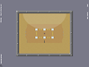
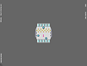
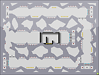
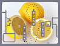
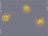
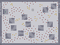
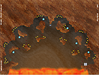
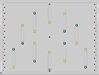
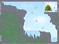
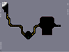
Spoiler: February (All)
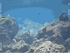
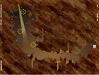
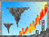
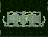
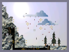
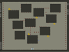
Spoiler: March (All)
March 1 - 18
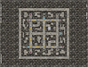
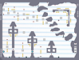
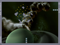
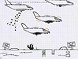
March 19 - 20
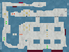
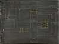
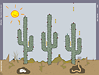
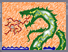
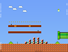
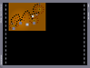
March 21
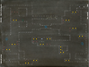
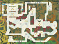
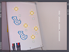
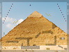
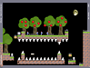
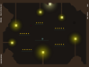
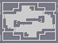
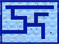
March 22
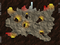
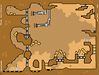
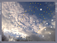
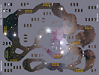
March 23 - 24
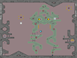
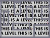
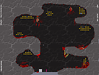
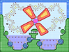
March 25 - 28
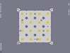
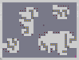
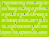
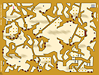
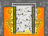
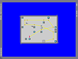
March 29 - 31
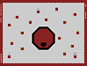
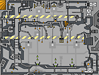
Spoiler: April (All)
April 1 - 2
April 3 - 4
April 5 - 6
April 7 - 8
April 9
April 10 - 12
April 13 - 20
April 21 - 30
Spoiler: May (All)
May 1 - 13
May 14 - 31
Spoiler: June (All)
June 1 - 15
none
June 16 - 30
Spoiler: July (All) (10 new maps)
July 1 - 7 (2 new maps)
July 8 - 12 (6 new maps)
July 13 - present (2 new maps)
Enjoy!
Genre Index:
General - For image maps that don't belong to a sub-genre.
Simple - These maps use images very simply, maintaining the background and foreground colors we all know and love.
Background/
Foreground - These maps have only a background/foreground image.
Solid Colors - These maps primarily use solid colors (or un-ornamented gradients).
Effect - These maps use images in such a way that the image itself is an obstacle.
Picturework - These maps are pictures turned into playable maps.
Physically Drawn - Graph paper, chalkboards, yarn, etc. These maps look like they were drawn with physical materials.
Drawn w/Photoshop - These maps look like they were drawn with a graphics editor such as Photoshop.
Other Games - These maps look like other games.
3D - These maps have a 3D look to them.
Blendmode - These maps use image blending.
Desktop - These maps make it look like you're playing on a desktop and/or its open windows.
Structure - Office buildings, factories, control rooms, you name it. These maps are made to look like the interior of a building or structure.
Tabletop - These maps look like a top-down view of a table and the objects on it.
Text-Based - These maps use images to display gameplay-directing text.
Random - These maps are experimental or otherwise unusual.
N-Art/DDA - Self-explanatory
Note: I've left out an unremarkable image map (trust me) from DaggaFork, xboxzombie, Ryzor, unglaublichRodario, and Sayz. I've also not included Unreality's map because it's right there in User Levels and I mentioned it above.
Attachment (lost): post-10-1216628853.txt
#418205 6 2008-03-18T03:06:55Z Nexx Doing something about sniping has been discussed time and time again, but I think this is an interesting suggestion nonetheless. It might not be successful enough to implement, but it's still interesting.
Also, NUMA doesn't record who voted what. It records who voted, and what was voted. And that's not going to change anytime soon.
#418209 8 2008-03-18T03:10:17Z Nexx Okay, the thread showing the image maps is up:
http://metanet.2.forumer.com/index.php?showtopic=21871
I'm also working on a tutorial. Hopefully I'll be done by tonight, but it's taking awhile, so I might post it tomorrow.
#418211 102 2008-03-18T03:14:47Z Nexx para
EDIT: Sorry, zer0.
#418217 1208 2008-03-18T03:19:58Z Nexx No!
And TFK, you're not "the wig".
zer0!
#418225 5 2008-03-18T03:33:30Z Nexx Should this be in Custom Levels or Level Packs?
#418298 1400 2008-03-18T10:08:29Z Nexx Check this out, it should tell you alot about the new stuff. exubie is very thorough. : http://metanet.2.forumer.com/index.php?showtopic=21587
Guys, if you really are interested, then follow the link, scroll down to "Multiplayer", click, and read up. All of the above questions are answered there. Don't spam this thread asking questions that have already been answered.
To answer the most recent question explicitly, the rocket launcher picks a ninja to target and fires. If two ninjas are exactly the same distance apart (which is not necessarily unlikely - you could have players start the map equidistant), it chooses by player order. Once fired, the rocket follows that player until it dies, it hits a ninja (any ninja), or the level is complete. What's interesting about this setup is that it only depends which ninja is closer
when the rocket fires, allowing rocket launchers to be distracted. For example, while the rocket is following one player, a second player can waltz all around that rocket launcher with nary a thought. But as soon at the rocket hits the first player or dies, it'll fire at the second player. This also allows for interesting team play, such as other players sacrificing themselves to let one player live, or accidental deaths from crossfire.
Not sure how this all works for chainguns and gauss, though. But I'm sure they would continually switch to whoever's closest. (But that is a topic to be discussed in the thread linked above!)
#418300 18 2008-03-18T10:18:38Z Nexx Gah, just squeaking by again! I spent all my time making that Image Map Thread.
EDIT: It's now up on NUMA:
http://numa.notdot.net/map/119483#418302 2 2008-03-18T10:29:30Z Nexx http://metanet.2.forumer.com/index.php?showtopic=20828
Basically, you can already do this by getting an RSS feed for each author that you want to stay updated on. I have yet to try it out, so I can't say if I think the service could be improved, but your version sounds nice. I don't think it'd be easy to implement, though.
#418476 1211 2008-03-18T19:45:57Z Nexx Win!
Pepi!
#418477 106 2008-03-18T19:48:26Z Nexx plane
#418590 98 2008-03-19T00:14:54Z Nexx Nice submission, mam!
I will have mine in soon...
EDIT: Aye, this is taking longer than expected. But I will have it in!
#418630 15 2008-03-19T03:42:35Z Nexx Check out the first post again:
I encourage all authors to tag their image maps with "image-map" so that this thread isn't required in the future!!!
I can see why tagging them with "nreality" is useful, but an image-map tag makes more sense to me.
@Bunniesandsheep: I just checked NUMA again, and there are several that I've missed. Give me a few hours to update.
#418638 19 2008-03-19T03:56:32Z Nexx @frogs: I'm still working on it! I'm really gonna try to get it up by tonight!
#418711 1214 2008-03-19T07:42:23Z Nexx Oui!
Condog!
#418826 6 2008-03-19T19:37:16Z Nexx I know where you're coming from, Sniperwhere. Some of them definitely deserve a bitesize, but a few others really don't.
But as image maps become more commonplace, I think we'll start to see more with better gameplay in addition to good visuals. We can only hope. (But on the other hand, we'll probably also start to see super n00b image maps.

)
#418887 100 2008-03-19T22:36:31Z Nexx http://numa.notdot.net/map/119555
Watch me get my *ss handed to me in the voting, though.
#19592 1 2008-03-19T23:13:21Z Nexx Nexx's Image Map Tutorial
First and foremost,
you need NReality v6c2 to play maps with images! Spoiler: Expand this to read a little more about NReality.
For those who havent heard of it, NReality is a sort of an expansion for N v1.4 while we all wait for v1.5 to be released. It adds new functionalities (privatecontest, image maps, playing maps straight off of NUMA, etc) and 10 new columns (2 columns of blue_tetris, 8 columns of Legacy maps (the Origins pack)), and provides a more cheat-free environment, all while maintaining everything from v1.4.Click
here to go to the NReality thread, or click
here to download v6c2 without further ado.
So, if youve been around NUMA for the past few months, chances are youve stumbled across an image map or two. (If not, check out the
Image Map Thread to learn how to play them and to see all the image maps made so far.) These image maps are a whole new style of mapping, so naturally there are a lot of new things to consider. In this tutorial Ill break down how they work and how you can make some of your own. (Click on any section below to expand it)
Spoiler: How do image maps work?
First, NReality recognizes that a map uses images by the level data. The formatting is:
$title#author#genre#tilesetdata|objectdata|backgroundimageURL|foregroundimageURL|#
Note: You can have a foreground without a background or vice versa, just keep the |'s intact.
NReality then proceeds to download the images at the given urls. (As a sidenote, there is no error or anything if there are no images at the given urls; the map will load normally) The background and foreground images are both 792x600 pixels large, which is the size of N levels (including the tiles that make up the border).
As for how the images interact with the tileset and objects, you can think of the whole level as four layers:
Foreground image - TOP LAYER
Original foreground (tileset) & objects
Background image
Original background (light gray) - BOTTOM LAYER
So foreground images cover all else: the light gray, the dark gray, all objects, everything. Background images only cover up the light gray, and everything else is rendered on top of them.
The trick: foreground images have transparent sections (they are just saved in a format that supports transparency) so you can see the objects and whatnot. And thats all there is to it.Spoiler: What you need to put together an image map
Image maps may look sleek, but putting them together aint all puppies and sunshine.
But before we dive into the making of one, there are two essentials:
1) A place to host images. There are many popular sites created specifically for this purpose, such as Image Shack, Photobucket, Flickr, Tinypic, etc. You might be able to get by with a website account (ex: Geocities) or other online storage place, but youre much better off getting an account with an image-hosting site.
2) A graphics editor that supports transparency. Without this youll only be able to make backgrounds. If all youve got is MSPaint, its time to upgrade. My personal favorite is (of course) Adobe Photoshop, but Adobe Illustrator will also work, Im pretty sure Paint Shop Pro will work, and Ill bet there are many others out there that will work. Use whatever youre comfortable with.
Note: Ill be doing the rest of this tutorial with Photoshop, so my apologies to those who dont have it. (Also, I use a PC, so I may say some things that only apply to PC users. I hope those with Macs wont get too lost.)Spoiler: Putting together a very basic image map using Photoshop
Ill keep this tutorial very basic from all perspectives, just to make sure that everyone can keep their bearings. If at any point things arent turning out as expected, post below and Ill try to help you out.
Well be doing the following transformation:
==>
Ugly, I know, but it gets the job done.
Step 0: Make a map like the one above (on the left). The tileset must be the same, but put in whatever objects you like - I chose a rocket and some gold. Save the map data in a text file.
Step 1: Take a screenshot of the map and load it into Photoshop.
The thing is that we only want to edit the tileset; if there are objects in your image then they will be part of the background/foreground! To get rid of the objects, look for the | separator in the map data (in the editor dont touch your text file), and delete everything after it. Load up the map again, but this time in N v1.4 (youll see why later). Maximize the window (not necessary but it helps), press p, and then press Print Screen. Close N. Open Photoshop. Go to File > New. The given width and height should be your screen size (ex: 1024x768), and the given resolution should be 72 pixels/inch (normal screen resolution). If not, make it so. Hit OK. Go to Edit > Paste.
Step 2: Crop!
Enter the handy dandy Magic Wand tool (), which well be using a lot of from here on out. For the magic wand tool, you pick a starting color, and it selects all pixels that are connected to it that are similar enough in color (which you can adjust in the Tolerance field). Select the magic wand tool, set the tolerance to 0, and uncheck the box for Anti-aliased.
Click somewhere on the dark gray area, and it should select the whole box minus some parts here and there. Thats okay. Go to Image > Crop. Your image should now look something like this (only much bigger):
Just to make sure you have the right size, go to Image > Image Size. Width should be 792 and Height should be 600. If so, press OK. From now on, you should save your work after every step. Just save it as a PSD. This file is there only for backup, and you can delete it later.
Step 3: This is where things get complicated. At this point I would normally separate the background and foreground sections into different layers, but this time well just make a foreground layer and then make the background from scratch.
First, we have to select what will become the foreground. Using the magic wand tool, click anywhere on the light gray area. Go to Select > Inverse. You should now have all E tiles selected. We actually dont want the upper right E tile selected, so (still using the magic want tool) hold ALT and click on it. (A small minus sign should appear to the left of the cursor as you hold alt) That tile should now be deselected. Go to Layer > New > Layer via Copy. Just so you dont get confused, right click on Layer 2, go to Properties, and for Name, put Foreground.
So you get more used to transparency, click the eye next to Layer 1 to make the layer invisible. The checkered area you now see represents transparent pixels.
One last thing before we finish this step. Youll notice that your foreground layer has your framerate in the bottom left. If you had taken the screenshot in NReality, youd also see things on the sides, like HIGHSCORES, GRID, n.infunity.com, etc. Youll want to get rid of these. (So you see, its not a big deal if you take a screenshot from NReality, but youd have to cover up more stuff at this point)
Select the eyedropper tool and click on a dark gray part of the image. Select the paint brush tool (Note: If you dont see the paintbrush tool, click and hold on the pencil tool and it should pop up on the right), select an appropriate size brush (9 pixels should do it), and make sure Mode is Normal and Opacity is 100%.
Make sure the foreground layer is selected, and then draw over the framerate in the bottom left.
Step 4: Creating the background from scratch.
Go to Layer > New > Layer, and click OK. Rename this layer to Background. Drag your this layer underneath the layer Foreground. (the background layer should remain selected) Click on your foreground color (see below) and pick the color you want for your level background.
(Photoshop uses the terms "foreground color" and "background color", as shown above. To reduce confusion, we will only be using the foreground color, and I don't think I even use the term again beyond this point.)
Click on the paint bucket tool. (Note: If you dont see a paint bucket, click and hold on the gradient tool and it should pop up on the right) Make sure it says Foreground in the Fill field (at the top), and then click anywhere on the image.
Select the Foreground layer, and use the magic wand tool to select the E tile in the middle. Make a new layer, choose a new color, and fill it in with that. Switch to the arrow tool and move the square up and to the right. You dont have to match this up with a tile, so just guesstimate. Click on the background layer, then click on the empty box to the left of Layer 3. A little chain link should show up:
Go to Layer > Merge Linked. Youre done with the background! It should look something like this:
Step 5: Finishing the foreground.
Select the Foreground layer. Magic wand the dark gray E tile, and use the paint bucket to fill it in with a color of your choosing. Make a new layer, fill the selection in again with a new color. Move the selection to the left (again, just guesstimate). Select the foreground, click the empty box next to Layer 2 to link it, and then go to Layer > Merge Linked.
One last thing: the outer foreground color. If you want to leave it dark gray, just skip to the end of this paragraph, but otherwise pick a new color. Magic wand anywhere in the outer dark gray. Do the same ol, same ol: make a new layer, paint bucket your selection, click on the Foreground layer again, make the new layer linked, and then go to Layer > Merge Linked.
Congratulations! Youre done with the image-making part! It should look something like this:
Step 6: Saving the files.
First, a brief statement about file formats. Youre probably most familiar with JPG files, but unfortunately they dont support transparency! Were going to be working with PNG files because they do support transparency, and they also result in smaller filesizes for simple images like these.
Lets save the foreground first. (Make sure youve saved your work so far!) Delete the Layer 1 first, and then delete the Background layer (drag them to the little trash bin in the bottom right or right click and select Delete Layer). Go to File > Save as. Name it whatever you want, but putting front in the name is helpful. Make sure the format is PNG. Click OK. A little window will pop up about interlacing, just click OK.
Now the background. You can reopen the PSD, but its more fun to just go to Edit > Step Backward. Now delete the Foreground layer. Go to Layer > Flatten Image (this is not necessary, but I do it anyway), then File > Save as. Again, it helps to have back in the name, and PNG should still be selected. Click OK twice. Close Photoshop! Youre almost there!
Step 7: Uploading the files and editing the map data
Upload the foreground and background images to your image hosting service. Open the text file of the original level, find the urls of the uploaded images, and at the end of the map data, add:
|backgroundURL|foregroundURL| (without the quotes)
For example, I added:
|http://img.photobucket.com/albums/v443/theBAMNman/forN/imt/sampleback.png (continued on next line)
|http://img.photobucket.com/albums/v443/theBAMNman/forN/imt/samplefront.png|"
And youre done! Congratulations! Save the file, reopen it, and load the map in the editor. It should look something like the picture I showed you at the beginning. The map data for the above map is attached below if you want to check it out.Spoiler: A few more things to know before you dive into making your own image map
- Remember, the image size is 792x600! (That includes the one-tile border)
- For selecting more complicated shapes (i.e., anything but horizontal and vertical edges), you can either play with the tolerance and anti-aliased options of the magic wand tool, or you can try using Select > Color Range, which has all the settings right there for you (use the drop-down menu at the bottom of that window to see a preview of your selection). Below is an example of the different settings for the magic wand tool.
- If you want to put a repeated texture for your foreground or background, do this:
Load up the texture file. Go to Select > All. Go to Edit > Define Pattern. Name it whatever you like. Go back to your map. Im assuming youve got your foreground and background layers all set up. Magic wand/color range your foreground or background, and then click on the paint bucket tool. At the top, where it says Fill, drop down the menu and pick Pattern. Then pick your pattern from the drop down box to the right of that (it should be the last one).
Then just click anywhere within your selection and voila!
If you want to know anything else, just post below and I'll add it above!
Also, feel free to post images of the image map you make from this tutorial!
Attachment (lost): post-10-1206054523.txt
#418904 2 2008-03-19T23:18:37Z Nexx This is my first tutorial, so feel free to criticize it harshly.
Also, when the actual level-making spoiler (the third one) expands, the text takes up much more horizontal space. Does anyone know how to fix this?
#418910 22 2008-03-19T23:29:42Z Nexx There it is. Enjoy.
To learn how to make your own image maps, check out the Image Map Tutorial.
#418914 4 2008-03-19T23:44:57Z Nexx Thanks. I forgot about that line.
Also, which Magic Wand use are you referring to? The last one? (in the fourth spoiler)
#418918 10 2008-03-19T23:52:15Z Nexx #418947 8 2008-03-20T01:27:13Z Nexx EDIT: Yes, that would be better. Can someone please move it?
EDIT 2: @Templex: I added the Color Range function in the last section, so people know about it and can use it from here on out. Thanks for the tip!
#418982 108 2008-03-20T03:12:15Z Nexx Clan
#418983 27 2008-03-20T03:18:39Z Nexx As one of those people who are too retarded to use RSS feeds, i think this is a great idea.
LMAO, I'm one of those, too!
But seriously, Southpaw makes a fantastic point. I'm definitely in favor of this. And I'm also in favor of heatwave's suggestion that Nick have a team to help him out.
#418997 14 2008-03-20T03:43:52Z Nexx I'd like to add one thing to this discussion that's been bothering me. I haven't yet made a full-blown, complicated image-map, but I love doing simple things with the image functionality. But on some of my maps where I do simple image things, people go "The image isn't too impressive." Well, it's not supposed to be, and I, for one, hope to see a proliferation of simpler image maps. They're pleasant, they're not that complicated to make, and you can apply it to just about any level.
#419036 1217 2008-03-20T06:02:52Z Nexx Yes!
kisler!
#419037 123 2008-03-20T06:03:28Z Nexx 14?
*checks* Gah! Well, I suppose it figures. I usually guess too high, so this time I was purposely guessing lower.
#419211 17 2008-03-20T19:55:03Z Nexx Wow, that was not an easy one. I mean, now that you guys say what level it is, I can fit it in, but the picture is not that unique, so I never would've gotten it on my own.
#419213 2 2008-03-20T20:02:27Z Nexx Man, I wasn't paying a whole lot of attention and I had just assumed that it was still a "vote for the worst" thing. Oh well. If it comes down to that, I'll complain, but I don't think it will.
#419214 5 2008-03-20T20:05:21Z Nexx Same as notkitt: other maps and random ideas (but I'd also add "the process of mapping").
But I usually do need at least a little inspiration to start mapping. Also, while making one map, I tend to come up with ideas that I can't use for the current map, but would do fine in another map.
#419215 20 2008-03-20T20:14:44Z Nexx #419221 113 2008-03-20T20:27:36Z Nexx May (If I understand the new rules correctly. If not, I submit "moan" instead.)
#419222 128 2008-03-20T20:29:24Z Nexx 15?
No one has guessed my age correctly yet.
#419340 11 2008-03-20T23:02:22Z Nexx @destiny: The problem was solved, thanks to Templex.
@Templex: Well aren't you just the most helpful person? Thanks again for the tip.
#419384 26 2008-03-21T00:09:43Z Nexx What do you guys think of my categories? I like most of them, but the whole Simple/Detailed thing is beginning to bother me.
EDIT: Actually, if this is going to continue to be a sort of NUMA for image maps, then is sorting by category going to remain practical?
#419465 1232 2008-03-21T04:20:10Z Nexx Nope.
I'll take Condog for 400, please.
#419489 6323 2008-03-21T06:06:38Z Nexx EDIT:
3/10
Yuck. It might be okay if it was, say, satirical, but I'm not getting much of that.
@Mae: 7.5/10
I like it. It's nice.
#419490 22 2008-03-21T06:15:54Z Nexx LoL.
TFK, it's not about answering the question right, it's about knowing the right people.
Just kidding, of course. I did something similar to this with an AGD challenge. Condog won but I kept thinking Condog was miyoser, who had submitted a demo earlier on.
#419494 7 2008-03-21T06:25:41Z Nexx Wouldn't it already fit under N Art or Tile set of the Year?
Unless you wanted a category like 'Most Aesthetically Pleasing Map of the Year' or something. Either way, I think it's redundant.
It's not redundant. Great image maps are awesome in ways that don't fit under N Art or Tilesets.
Anyway, I support this.
#419757 844 2008-03-21T22:13:17Z Nexx Welcome, Medex and Mazemaker!
@Medex: Hilarious story.
@Mazemaker: I like mazes, too. Like, a lot. I think I have about 20 maze books, maybe more.
Anyway, enjoy your stay here, both of you.
#419795 106 2008-03-21T23:21:10Z Nexx Btw, here's the poll (I'm looking at you, Etz):
http://metanet.2.forumer.com/index.php?showtopic=21913
EDIT: Btw, I'd be willing to set up a Season 2, say... in the summer? I don't know - I'm still figuring out how the whole thing would work, but if enough people were interested, I'd think harder.

#419918 18 2008-03-22T04:47:02Z Nexx Awesome topic.
I, Nexx, pledge to rate
and comment all the unrated maps I find, no matter how boring or badly designed they may be.
I don't have as many rates as Pepi, but I do have about the same rate/map ratio, so you could say I'm on the road to being a Pepi.
#419934 55 2008-03-22T07:11:22Z Nexx Oh crap, I forgot about this. Wow, down to 48 hours. I better get crackin'.
#419939 30 2008-03-22T09:06:50Z Nexx Thread updated for 3/21/08 (actually, I'm still missing 3 maps from last night, but I'll add them in the morning), including two older maps (one in Detailed, one in Miscellaneous).
Also, I've removed the attachment as no one seems to be downloading it anymore. If you want me to continue to update the userlevels file, just post below.
#420236 56 2008-03-23T00:31:24Z Nexx Maybe Round 10 will be several different levels...
#420636 35 2008-03-23T21:11:33Z Nexx Text file reattached. I will update it as usual from now on.
Also, I've shifted around the categories. Feel free to suggest new categories so that General doesn't become huge.
EDIT: And also feel free to decry current categories...
#420847 8 2008-03-24T02:49:00Z Nexx Mine jumpers, yum! *downloads text file*
Btw, NReality has problems with userlevels demos. I reported them to Unreality, but I don't think he can do anything until the next release. If you care about demos, play your user levels in 1.4.
#420903 59 2008-03-24T06:56:23Z Nexx I am also sorry for lateness.
Man, you know how much inspiration I had for "large open spaces"? ZERO.
Attachment (lost): post-21-1206341783.txt
#420906 134 2008-03-24T07:49:33Z Nexx When did the rules change again?
No letter restriction = You may add/remove one or more letters.
No one said you can add AND remove in the same turn. That's pointless. Then you can do stuff like "single -sing +am = lame"
I think the rules should be as follows:
In each post, you may:
- Add one or more letters
- Remove one or more letters
- Change one letter (or perhaps change less than half of the letters in the word, or something like that)
Also, adding an anagram rule is always fun! (You can rearrange the letters to form a new word)
Anyway... singe!
#420907 1506 2008-03-24T07:59:58Z Nexx 1/(e^(-3*pi)*1.6*10)
= Approx. 77
(If you're lazy, just squint your eyes...
)
#420908 166 2008-03-24T08:03:45Z Nexx Ahhh, I think I've done you before...
16!
*checks*
*keeps results to himself*
#420909 1269 2008-03-24T08:06:05Z Nexx Nope.
Ha! I caught you all off-guard!
NCrafter!
#420910 51 2008-03-24T08:07:13Z Nexx ...horse was actually...
#420915 54 2008-03-24T09:13:02Z Nexx ...and should be...
#421119 137 2008-03-24T20:03:30Z Nexx in
#421124 26 2008-03-24T20:13:49Z Nexx NCraftexx?
#421125 1273 2008-03-24T20:15:10Z Nexx No.
kisler!
#421262 7 2008-03-25T00:46:20Z Nexx Yes, it's OoT.
Though I never understood why people like the fishing ponds in Zelda games so much. I think they're a snooze.
#421266 141 2008-03-25T00:47:17Z Nexx chip
#421273 94 2008-03-25T00:54:05Z Nexx ..., but unfortunately the...
#421278 11 2008-03-25T01:00:01Z Nexx A lot of these just involve putting in a background from here or there.
Still, they're good suggestions. The last thing I tried was making a map from MegaMan 6. But it was going nowhere fast, so I stopped. But just you wait... I'll release a MegaMan map one day!
#421280 7 2008-03-25T01:17:25Z Nexx http://numa.notdot.net/map/120092
I was gonna do a mine jumper, but I figured I'd do this instead.
#421294 609 2008-03-25T01:51:02Z Nexx #421309 143 2008-03-25T02:19:26Z Nexx clipper
#421344 97 2008-03-25T03:08:03Z Nexx "Now pony up!"...
#421347 11 2008-03-25T03:15:12Z Nexx Rock.
~Mainly alternative.
Here here.
And film scores.
#421387 46 2008-03-25T06:38:13Z Nexx I think the mods should periodically edit the first post so we can see who and how many people have pledged.
^ Essential ^
#421388 145 2008-03-25T06:40:25Z Nexx per
#421389 1279 2008-03-25T06:41:06Z Nexx No.
NCrafter!
#421391 146 2008-03-25T06:45:53Z Nexx I don't happen across many of your maps, so when I see you and think of maps, I remember that one time I "playtested" Road to Stalingrad (you had just submitted it as though it weren't a prototype), and I spent like 30 mins getting an AGD on it, and then you resub it and it gets bitesized and I had to get that AGD all over again 'cuz you moved a couple things around.
That was a well-made map.
#421392 100 2008-03-25T06:53:43Z Nexx banned.

!!!!!
#421406 148 2008-03-25T07:29:10Z Nexx You have some serious Photoshop skillz.
#421417 147 2008-03-25T08:16:19Z Nexx pair
#421426 1283 2008-03-25T09:48:25Z Nexx Ha!
Wow, this makes 4 consecutive times of not being guessed.
Anyway... kisler!
#421518 51 2008-03-25T20:17:25Z Nexx NO
Never rate a map without playing it.
...Unless its art. Obviosuly
But seriously, what the hell? Did some of you guys lose all brain cells?
It could play reasonably well, but you wouldn't know, you just moved on after rating it 0.
This is very true. I've seen countless noob maps on the newest page with spammed mines and all of the comments say "don't spam teh mines!!!1". These maps usually play just like any other noob map, so I never understood why they received so much negativity (relative to other noob maps).
Always play before you rate, even if you think it will suck. If you really don't want to play it, don't rate it (though now that you've taken the pledge, you have to rate it, which means you have to play it!).
#421580 40 2008-03-25T22:37:30Z Nexx Updated. A couple new categories added. It seems the image-map craze has ended.
@meowmeow: Evil_Bob's Pyramid map is the only one that really fits well into 2 categories. In the attachment, I put it under Effect only.
#421619 152 2008-03-25T23:34:00Z Nexx Flat
#421648 6404 2008-03-26T00:47:14Z Nexx 7.777777777/10
Pretty cool.
#421652 18 2008-03-26T00:49:56Z Nexx In.
#421742 4 2008-03-26T05:34:54Z Nexx This glitch has been around for a while. Lucidium (among others) even made a map based on it:
http://numa.notdot.net/map/13519
I don't know how the glitch works but I know that others do.
#421744 17 2008-03-26T05:41:00Z Nexx 11th, but it was one of those puzzles I like to do. Also, it wasn't bitesized at the time because bitesizing didn't exist, and I went on an almost 2-year hiatus. It wasn't until 2007 that I noticed it had been 'sized.
#421745 6 2008-03-26T05:41:47Z Nexx Decent:
118866
119555
Best:
92222
#421746 108 2008-03-26T05:47:52Z Nexx Enter the referee!
Hasn't it been more than 3 days?
#421747 1291 2008-03-26T05:51:11Z Nexx Gah! We've been IDed! Every man for himself!
NCrafter!
#421758 19 2008-03-26T06:33:53Z Nexx Dude, that's not the map I'm talking about.
http://numa.notdot.net/map/10615
(That's my old username)
I would've been more specific but I didn't think anyone would care.
#421761 21 2008-03-26T06:58:39Z Nexx Because I didn't like the nick and it had a bunch of crappy maps under it. I wanted to start anew.
Anyway, can we get back on topic here?
#421772 6 2008-03-26T08:13:51Z Nexx Could you explain a bit more? I have no idea what you're saying...
#421909 72 2008-03-26T19:55:01Z Nexx Man, I was trying notkitt's map for 10-15 minutes before I realized it was only saving runs sporadically. Then I noticed that I was on speedrun mode.

#421926 17 2008-03-26T20:35:20Z Nexx T3chno got close to 120k - he has 119999.
I know Seifer got 118888. He even submitted 118887 just so he could get it.
#421934 73 2008-03-26T20:46:11Z Nexx Reason for doublepost: privatecontest doesn't seem to be working. I can see Mae's run and mam's run.
#421950 107 2008-03-26T21:02:48Z Nexx Have I told...
#421951 1521 2008-03-26T21:03:40Z Nexx 78 Orange Feathers.
#421952 162 2008-03-26T21:05:01Z Nexx Ad has a point.
Cold
#421954 17 2008-03-26T21:08:37Z Nexx I loathe the word "essay."
#421965 77 2008-03-26T21:47:08Z Nexx Hold control and click on your score, then wait a few seconds. If it doesn't work, try a few more times (sometimes it takes longer to upload than other times, you know?). If it still doesn't work, I don't know.
As for why privatecontest isn't working, is it possible that mam and Mae submitted those scores with version 6b? I search "privatecontest" on these forums and Hendor had that problem in BLUR one week. But that's my only guess.
#421971 80 2008-03-26T21:56:54Z Nexx @Jetpack: Oooohhhh. Wow, that's messed up.
Check you're in Highscore mode. Will it save runs on other maps? If not, you might want to ask Unreality.
@kisler: NReality doesn't operate the userlevels section that reliably. Download 10 maps and just complete them. You will (probably) notice that it refuses to save your scores for a few of the levels. I say keep it the way it is unless we can't work out Jetpack's problem. And in that case, maybe he could be exempt from this round?
#421977 82 2008-03-26T22:04:17Z Nexx How do you have a demo if it didn't show up as a personal best?
You didn't add this to your userlevels file, did you? (Sorry if I'm asking very basic questions, I'm just making sure)
EDIT: (In response to Jetpack's post below) Well then I'm clueless, so I'm going to stop talking now.
#422062 94 2008-03-26T23:59:43Z Nexx @kisler: miyomiyo was hinting that he'd like to have this contest pinned.
@miyo: Just for future reference on submission deadlines, what time zone are you in?
#422080 98 2008-03-27T00:21:12Z Nexx Another pinned contest could fit, don't you think?
As long as MaxRide has another mine sitting around, I think it could work out.
")
#422082 1298 2008-03-27T00:24:09Z Nexx Incorrect, my good chap.
NCrafter!
#422084 1528 2008-03-27T00:26:35Z Nexx 68 purple chickens.
#422085 166 2008-03-27T00:27:29Z Nexx Goad
#422112 612 2008-03-27T01:23:09Z Nexx #422147 105 2008-03-27T02:59:53Z Nexx Why do you guys sound like you're sending in your final scores? Don't we all have a week to improve our runs?
EDIT: Yeah, kkstrong, your score is ri-f***ing-diculous. Seriously.
#422248 113 2008-03-27T07:12:18Z Nexx Let me start...
#422365 23 2008-03-27T18:44:38Z Nexx I hope no one will use profanity image as an image-map ;p
Some already did. I forgot what number it is though...
It was Ryzor's doing:
http://numa.notdot.net/map/120008#422367 109 2008-03-27T18:50:13Z Nexx Also, I notice that it has been 'tagged' as privatecontest. You have to put it in the mapdata.
Whoa. I just checked out the maps for BLUR and Elimination, and I guess this is the format for the mapdata:
tiledata|objectdata|backgroundimage|foregroundimage|privatecontest
Like the image parts, you just leave the privatecontest blank if you don't want it. Thanks for the update, mam!
#422395 111 2008-03-27T20:26:30Z Nexx and xaelar wins
LoL. xaelar gets the lotto ticket!
Anyway, you have the lowest score of the ones who've submitted, yes, but half the contestants still haven't submitted a score yet, so technically they're all losing right now.
#422401 15 2008-03-27T20:37:11Z Nexx You. Are. F***ing. Kidding. Me.
That's.... You.... Wow. I just have no words to describe this awesomeness. Unreality, would you mind copying that post and putting it in the image-map thread?
#422402 62 2008-03-27T20:39:49Z Nexx 30 pledges out of 100! That's 30% already!
Wow. Thank you, kisler, for taking the time to go through and count! That's very helpful.
#422428 113 2008-03-27T21:56:42Z Nexx 
What happened to this statement, MaxRide:
Now, time to fail at highscoring.
I guess you were just deceiving us...
#422535 7019 2008-03-28T00:58:37Z Nexx #422615 118 2008-03-28T03:11:30Z Nexx a pony. Ponies...
#422679 171 2008-03-28T08:06:07Z Nexx Shouldn't we still be allowed to change a letter?
rag
#422820 143 2008-03-28T20:30:34Z Nexx Man, this is so lame. Not only is this level "easy peasy" like you say, but I was also just looking at it the other day. Yet now I can't find it again for the life of me!

#422821 144 2008-03-28T20:31:45Z Nexx Got it!
11-1: Cityscape 2!!!!!!
Man, that took way too long to find...
#422977 121 2008-03-29T04:07:16Z Nexx Actually, it wouldn't matter if privatecontest had been implemented, so it won't be a problem from now on.
#423034 148 2008-03-29T06:43:03Z Nexx That better not disqualify my answer (for the reason squibbles said). Now that you mention it, I do remember reading all that stuff about not accepting answers from edited posts, but I edited it to add the "Man, that took too long to find" part.
#423038 65 2008-03-29T07:22:03Z Nexx EDIT: Where did "The Fantastics" come from? The entry above was "System of a Down".
Pick which one you want to continue from:
System of a Down ==> Nickelback
The Fantastics ==> Seal
#423039 173 2008-03-29T07:25:24Z Nexx crag
#423041 1300 2008-03-29T07:28:43Z Nexx Yes!
But only because I wanted to revive this thread.
NCrafter!
#423042 122 2008-03-29T07:29:26Z Nexx Once, a pony...
#423182 176 2008-03-29T18:14:22Z Nexx clop
#423184 77 2008-03-29T18:20:33Z Nexx Unwritten Law
#423203 34 2008-03-29T19:14:22Z Nexx This is precisely why I was encouraging people to tag image maps with image-map instead of nreality. Now there's no simple way to distinguish image use from these other uses.
#423263 1456 2008-03-29T21:55:30Z Nexx How about a "most recent 0ths" for NUMA?
There's been one for quite some time now.
Go to High Score > Latest > NUMA 0th.
Also, I would like to add my

!
#423284 36 2008-03-29T23:13:21Z Nexx I don't know if anyone else has discovered this, but you CAN die from those backwards drones. You just have to be touching the center of the drone while going the same velocity as the drone.
EDIT: bhz's map below disproves my theory, in which case I've got nothing. Maybe the exact center of the ninja has to hit the exact center of the drone?
Attachment (lost): post-10-1206832401.txt
#423331 46 2008-03-30T00:48:22Z Nexx Updated.
1 new category (Solid Colors)
8 new maps: 3 solid colors, 1 general, 2 effect, 2 drawn, 1 n-art.
#423337 48 2008-03-30T01:06:30Z Nexx Yes, you are mistaken. Evil_Bob's Pyramid map is shown twice because it fits well into 2 different categories.
And I look forward to some cool new image maps. The trend has slowed as of late, especially with all this drone editing (which is also very cool).
#423345 29 2008-03-30T01:15:57Z Nexx Love the jellyfish level!

#423396 154 2008-03-30T03:25:46Z Nexx Guy_Zap, you should edit the first post so that people don't think Round 17 is still going.
And I have yet to receive a PM with round 18's pic (though honestly I don't know what I'd do with it - it seems to me that a harder challenge would be to just pick more obscure levels or more obscure parts of levels).
#423469 13 2008-03-30T05:54:08Z Nexx Well, first it was getting a map 10 votes.
Then it was 20.
Then it was 30.
I'm still working on 50.
The most important thing for me has been exposure, really. I'd rather have 50 votes and a 4 than 7 votes and a 5, on any given map.
Took the words out of my mouth, except that I just cleared 20 relatively recently, and I'm still working on 30.
Also, I feel like my general map-making style needs work. I know you're just supposed to map how you want to map, but I don't really have the ability to just crank stuff out. When I do pump something out that I'm pretty proud of, about 2/3 of the time people on NUMA go "eh, pretty good" and that kinda gets to me. I think a big achievement for me would be having the ability to crank out stuff that is to my liking as well as NUMA's population's liking.
#423471 51 2008-03-30T06:00:15Z Nexx This thread should serioulsy be pinned.
Sounds good to me.
Also, I was wondering if anyone is going to take up putting together a similar running compilation for all the crazy new stuff that Unreality is adding to NReality. I kinda doubt it, though. I would do it, but updating this thread is quite enough for me.
#423852 17 2008-03-31T07:01:27Z Nexx I can't hit corner jumps for beans, but I don't find that to be a problem. They aren't necessary unless you're a highscorer.
As for NReality, no Legacy Origins level requires a corner jump.
For 123-4, look at my highscore or Seifer's highscore for two different ways of doing it without a corner jump.
And 197-4 doesn't require a corner jump either (again, my demo shows an example).
#423859 25 2008-03-31T07:29:21Z Nexx This latest thing by gloomp is not working for me. It just plays like a normal map. I've reopened NReality several times, and I've made sure I'm copying all the data. Any other advice?
#423860 56 2008-03-31T07:45:31Z Nexx There should be a new section called Playermod. I'm kinda expecting to see more like'em.
I understand where you're coming from, but I sort by type and use of the image, not by the type of map. If you do the latter, things start belonging to multiple categories, which would be easy to handle with category tags, but with this system (especially if I intend to keep the thumbnails), you just can't do it. Unless someone can... in which case, feel free to speak up.
#423943 44 2008-03-31T18:36:25Z Nexx Sign me up for mappin'.
#423945 161 2008-03-31T18:49:54Z Nexx PMed Guy_Zap with the edited picture. I didn't really edit it too much, though... Anyway, sorry for the wait, everyone.
#424233 24 2008-04-01T17:58:31Z Nexx sorry, guys I didn't have time to do it this week 
Me neither!
#424242 24 2008-04-01T19:21:55Z Nexx Any luck, Sting::Ray?
#424243 1306 2008-04-01T19:24:01Z Nexx I am smiling at the moment, so I'll go with yes.
NCrafter!
#424245 6455 2008-04-01T19:28:16Z Nexx 7.5/10
Very well-made, but the whole "Feel the music" thing seems rather random, not to mention that (IMO) swing dancing and sax-playing don't really go with the abstract orange fingers around the tree, or the sleekness of the sig in general.
#424248 79 2008-04-01T19:30:46Z Nexx Reel Big Fish
#424367 1310 2008-04-02T00:52:02Z Nexx Nope.
beginner2!
#424448 622 2008-04-02T08:23:56Z Nexx #424500 625 2008-04-02T17:36:28Z Nexx Commented!
You've probably already seen this, but just in case:
http://numa.notdot.net/map/118356
If you've already done that, try this one instead (not mine):
http://numa.notdot.net/map/119545#424530 69 2008-04-02T20:27:46Z Nexx Quote: bunniesandsheep IN THE TOPIC
ska made a good point in a PM. One person might dominate in the highscoring, so to more evenly balance it out, I was considering doing both speedruns and highscoring, and just take the average from both of them. Let me know your suggestions.
Wait, Huh?
Yeah, how does that make sense? The faster people will still dominate. You could split highscoring and speedrunning into two separate fields (so people would either speedrun or highscore for the whole competition), but that might not be fair since speedruns are bound to be significantly shorter.
#424601 59 2008-04-02T23:55:18Z Nexx Before I do my next update, I've got a quick question. It seems to me that sorting by category is not as useful as sorting by date, but which would you prefer?
I would still show categories for the maps if I listed them by date, and you could still find all maps of a category in the userlevels file.
EDIT: @kisler's question below: I just save the thumbs from NUMA, halve them in size, and put 'em up on Photobucket.
#19784 1 2008-04-03T00:10:57Z Nexx I need a way to present many pictures and their associated text information.
A table would be best but I don't think I can do that on these forums.
Any other suggestions?
It wastes a lot of space to do this:
IMAGE - TEXT
IMAGE - TEXT
But you'd have to do manually spacing for this:
IMAGE IMAGE IMAGE
TEXT TEXT TEXT
or
IMAGE - TEXT IMAGE - TEXT
IMAGE - TEXT IMAGE - TEXT
In the end, it doesn't matter too much, but if there's a silver bullet for this problem, please let me know.
#424627 376 2008-04-03T01:10:12Z Nexx Just a small note:
For the level Feels Like No Grip, you should at least note in the level description that there's also no toggle-stick for locked doors and thwumps.
#424878 7 2008-04-04T00:57:12Z Nexx Oh hey, Keron, I just PMed you about this, lol.
Well that stinks. Oh well. I want to use HTML, but I don't want to have to redirect people to a different page. Actually, I think I have a solution, but we'll see...
#424997 2 2008-04-04T17:55:20Z Nexx Unreality also made a thread of this in the High Scores sub-forum. I suggest you post in that one:
http://metanet.2.forumer.com/index.php?showtopic=22129#424999 16 2008-04-04T18:12:04Z Nexx Wow. Really proffesional.
Good Work guys. I enjoyed reading.
Ditto.
Very nice work. Loved it. Thanks to everyone for putting it together! I can't wait for next month's issue.
#425000 1317 2008-04-04T18:14:12Z Nexx Nope.
kisler!
#425001 190 2008-04-04T18:16:31Z Nexx meld
#425002 17 2008-04-04T18:20:18Z Nexx Yams
Good game idea, Guy_Zap.
#425003 6474 2008-04-04T18:25:38Z Nexx 6/10
Looks alright, but it doesn't really seem related to your name.
Also, you might as well take your maps out of the spoiler. The line of links only takes up one line anyway, and having two spoilers causes that blank line in between.
#425007 4 2008-04-04T18:53:30Z Nexx I realize that not all people look at the highscore forums, but I don't think making the same post in both places helps. Maybe you should just put a link to this one in the NUMA Discussion one.
I posted in the other one first, but I'm switching my post to this thread since it already has two replies.
The description of this topic says "in 2 weeks". I'd like to know exactly how this is determined, though. Can any map get on/near the top of the list by having a lot of previous scores and then getting 1 new score, or is there a minimum on # of scores within the past 2 weeks in order to get on the list? (And I assume the list is sorted by total # of highscores, not total # of recent highscores, but correct me if I'm wrong)
And are those map previews auto-generated (namely the image maps), or did you make them yourself? Because if it's the former, I could really use that!
#425147 110 2008-04-05T01:43:41Z Nexx *rings doorbell*
Wow, I've bumped this thread so many times...
#425201 9 2008-04-05T05:45:43Z Nexx Thumbs!? WOW!!!! zOMG!!

Awesome! I wasn't even expecting a map preview thing until much later on. Is there *any* chance of 'Nid using that for actual NUMA thumbs of image-maps??
Also, it doesn't show droneMods - the drones are the same size.
Ex:
http://numa.notdot.net/thumb.swf?mapID=120426
(The chaingun is supposed to be huge)
#425920 188 2008-04-07T07:39:27Z Nexx Maybe Life meant to post in the Starting a Contest thread and posted here accidentally.
#425922 14 2008-04-07T07:45:50Z Nexx I just tried it out, it's alright. 10 is more fun.
But I *really* got a kick out of maxing it out and watching the NReality mainscreen (purposely being vague here). I sat there and watched for about 10 minutes. It was really entertaining!
#426011 16 2008-04-07T18:16:08Z Nexx Nice icon!
I'm having a problem using it though. I'm on a PC, and I know how to change the icon for a shortcut, but how do you change it for one specific program?
#426176 124 2008-04-08T03:02:43Z Nexx ...not being a...
#426177 193 2008-04-08T03:03:38Z Nexx milk
#426178 1324 2008-04-08T03:04:31Z Nexx Nope.
NCrafter!
#426231 65 2008-04-08T07:14:56Z Nexx Finally, I'm back up to date! Actually, 4 new maps were submitted in the past few hours (
), but I'll get to those later. I should now be able to keep this thread more up to date in the weeks to come.
I hope everyone likes the new format. Please drop me a line (PM or in the thread) to tell me what you think!
Furthermore, I appreciate everyone's efforts to keep me informed about new image maps, but what I would really appreciate is being informed about maps that aren't tagged properly (with "nreality" or "image-map"). But by all means, feel free to post recent maps. I always check them to make sure I've gotten everything.
Also, I'd advise you to re-browse through the older ones. I've added about 7 over the past 2 weeks, so give them a look if you haven't already.
EDIT: Btw, what's it take to get a pin around here?
#426374 321 2008-04-08T21:18:56Z Nexx That's pretty close to mine, Izzy.
Total deaths: 67,621
Attachment (lost): post-15-1207689536.png
#426495 66 2008-04-09T02:57:30Z Nexx We passed the 100 maps mark!
I just did another (much smaller) update. I'll be able to update daily or bi-daily (is that a real word?) from now on.
Also, all times and dates are GMT, in accordance with NUMA.
And read my post above if you haven't already.
#426692 191 2008-04-10T00:00:45Z Nexx I've only played a few of your maps, but I liked those few and I look forward to playing more of your maps.
#426694 1326 2008-04-10T00:05:46Z Nexx Nope.
kisler!
#426706 77 2008-04-10T00:31:17Z Nexx and my numa name:
]{NO3 is like KNO3, the chemical formula for potassium nitrate, which i was obsessed with once
How exactly does one become obsessed with potassium nitrate? Just curious.
@Condog: Where did your name come from anyway?
As for my name, I think it's decent. It's cool but not really creative or unique. I just came up with it one day when I was thinking of a username I could use for everything. I wanted something based on the concept of constantly trying to better oneself (Star Trek, anyone?). This led me to the concept of evolving, which made me think of the word "next". I dropped the 't' and added another 'x' and decided it wasn't half bad.
My old username was theBAMNman. Long, boring story behind that one, but I stopped using it because I didn't much like it.
If I could change my name I might change it to Avarin, which is another name I use on sites and in games.
#426711 10 2008-04-10T00:36:53Z Nexx You post really fast demos on NUMA. Seriously.
#426726 1330 2008-04-10T02:44:22Z Nexx Sometimes life is stranger than fiction.
Hmmm.... Izzy?
#426869 1339 2008-04-10T20:03:28Z Nexx Nope.
kisler.
#426940 1341 2008-04-10T23:31:30Z Nexx Nope!
Sticking with kisler.
#426942 1525 2008-04-10T23:38:50Z Nexx ^^^ I already pointed both of those out to Unreality, though I don't recall him ever saying explicitly whether or not they were fixable. So are they fixable, Unreality?
EDIT: Btw Unreality, I thought you said that Flash doesn't support GIF, yet
this map works fine for me.
#427001 3 2008-04-11T01:32:30Z Nexx I still don't understand what the glitch is...
#427017 1345 2008-04-11T02:31:13Z Nexx It's true, he does!
I'm still on the kisler train!
#427029 67 2008-04-11T03:56:03Z Nexx Triplepost 'cuz no one else is posting!
So this post isn't a waste of space, I'll point out that on April 9th, there was a record 13 maps submitted! The previous record was 9 maps in a day, set on March 21st.
#427042 70 2008-04-11T05:43:57Z Nexx I brought this up earlier, but no one said anything:
Also, I was wondering if anyone is going to take up putting together a similar running compilation for all the crazy new stuff that Unreality is adding to NReality.
Anyway, yeah, updating this thread is quite enough work, though DroneMod and PlayerMod thread(s) would be much easier because you just have to provide links, though the you may want to also indicate what has been modified (big drones, small ninja, reverse gravity, etc.).
Plus, it would be nice having someone else running a compilation thread with me.
#427096 1353 2008-04-11T10:53:43Z Nexx Definitely not. But TFK was pretty close!
Anyway, KISLER!
#427188 662 2008-04-11T18:25:03Z Nexx Commented.
A relatively simple map:
http://numa.notdot.net/map/120951#427191 7148 2008-04-11T18:38:32Z Nexx #427199 21 2008-04-11T19:20:03Z Nexx You can crank out solid and fun action maps like there's no tomorrow.
#427200 1360 2008-04-11T19:20:49Z Nexx Nope.
Guy_Zap.
#427254 7 2008-04-11T21:55:29Z Nexx NUMA was pretty slow earlier today, but now it seems to be completely down. *sigh*
#427312 27 2008-04-12T01:14:24Z Nexx You've played Portal!
#427313 1365 2008-04-12T01:16:08Z Nexx Nope?
When is kisler gonna post here? Oh well, maybe I'll try... TFK!
#427332 20 2008-04-12T03:17:57Z Nexx Okay, so I'm in PS and I'm using the paintbrush to draw lines (on an otherwise transparent layer). I have my lines, now how do I paint a solid color on one side of that line while leaving the other side transparent? I really don't want to use the polygonal lasso tool to trace the whole line over again (which is a loop) - that's my last resort. But everything else I try leaves a little border between the painted area and the paintbrush line. This is such a simple thing, there MUST be a simple solution!
#427615 165 2008-04-12T18:31:29Z Nexx Wait, WHAT!?
Maps due by 4/12 means that you have the 12th to work on them! If you meant due by midnight between 11th and 12th, you should have made it more clear.
I'm still working on mine, but I'll try to finish it as fast as possible, assuming you'll still let me.
#427732 169 2008-04-12T21:17:27Z Nexx Note that I said "at noon-ish".
Oh, well not in the first post, which is what I was going by.
Anyway, thank you for being nice. And if I give you any trouble with lateness from here on out, eliminate me.
EDIT:
http://numa.notdot.net/map/121749#427753 310 2008-04-12T21:41:36Z Nexx http://numa.notdot.net/map/120092
It's 4.5 from 11 votes, so I figured I'd post it here.
#427822 7157 2008-04-12T23:52:02Z Nexx Rated Condog's and one of Pepi's.
If you happened to miss this map of mine, please give it a look:
http://numa.notdot.net/map/118356
Otherwise, here's a playermod map:
http://numa.notdot.net/map/121663#427864 23 2008-04-13T01:59:00Z Nexx 1. 792x600 includes the border. If you just want the playable area, then it's 744x552 (each grid square is 24x24).
2. I know nothing about the program you're talking about, but it seems to me that it would depend on whether or not the program could distinguish between translucent and non-translucent pink. But maybe not. In any case, give it a try. If it doesn't work, you can always try out blendmodes (this sounds complicated, but it isn't too bad).
See, I just realized the other day that you CAN use Paint to make your images, you just have to figure out a blendmode that works for you. For example, if the colors you've putting over the foreground are all lighter than the dark gray default color, then set the pink area to black and choose the blendmode "lighten". If it's the other way around, set the pink to white and choose "darken". If it's a mix, you may have to mess around with it more (ex: hardlight), but you should be able to get it to work. I haven't actually tested this out yet, but it should be fine.
#427930 25 2008-04-13T05:49:56Z Nexx Arg, duh!!!!
I was thinking that expanding/contracting would do the trick, but for whatever reason I was drawing a blank as to how exactly it would help.
In retrospect, that's so obvious!
#427932 5 2008-04-13T05:52:33Z Nexx Slick. I really like it. It would be awesome if this were implemented.
#428144 27 2008-04-13T20:06:14Z Nexx Oh, sorry, blendmode is something you can use in NReality. Basically you design your foreground and background as you like, and then you set a particular blendmode in the mapdata and see how it looks. I'll try to get an example up either today or tomorrow so you can see.
#428149 1415 2008-04-13T20:13:59Z Nexx No.
Psychosnail!
#428156 670 2008-04-13T20:49:08Z Nexx #428174 141 2008-04-13T21:24:24Z Nexx I'm out for this round.
#428275 17 2008-04-14T02:47:16Z Nexx I like the layout of the third one the best by far, but I definitely prefer the color scheme of the first (or really anything that's more colorful). If we're going for an overhaul or even just a facelift, it'd be nice to have a color scheme change. The dark gray (of the second and third choices) is a little too serious.
#428485 7172 2008-04-14T23:10:02Z Nexx #428508 1420 2008-04-15T00:04:40Z Nexx Nope.
zer0
#428509 196 2008-04-15T00:06:08Z Nexx sulky
#428720 13 2008-04-15T20:40:12Z Nexx EDIT: You know what? Nevermind.
#428725 4 2008-04-15T20:51:10Z Nexx Yes! This would be awesome!
#428867 1428 2008-04-16T00:36:08Z Nexx Nope.
heatwave21!
#428887 180 2008-04-16T01:26:38Z Nexx I've never done a privatecontest comp. before. So we can only see our own runs, but you'll continue to update the highscores so that we can see each other's scores, right?
#429126 75 2008-04-16T21:53:12Z Nexx Updated. 10 new maps!
I think I'm going to PM someone to see about getting this pinned.
EDIT: It's been pinned!!!
(And I hadn't even sent out the PM yet)
EDIT 2: I just realized this thread is a month old as of yesterday! Woot!
#429129 7188 2008-04-16T22:05:27Z Nexx #429403 7193 2008-04-17T21:48:15Z Nexx #429416 3416 2008-04-17T22:26:43Z Nexx 7/10
Decent. Nothing special, but it works well enough.
#429417 740 2008-04-17T22:27:13Z Nexx 8/10
I've always liked it.
#429438 20 2008-04-17T22:53:05Z Nexx Really? How old are you, Atilla?
#429442 1449 2008-04-17T22:58:20Z Nexx Nope.
Guy_Zap!
#429443 6540 2008-04-17T22:59:51Z Nexx 8/10
The sig pic is awesome, but there's too much text underneath it. Put it in a spoiler or something.
#429445 32 2008-04-17T23:12:26Z Nexx I've been wondering for awhile how fast I type. Thanks for finding these sites, usaswim.
On the first one, I tried a couple and got
86-90 wpm
Accuracy of 92 - 95%
But on the other tests I got a much bigger range. My slowest was 65 wpm (wtf?). But that was the last one, where they threw in a lot of unnecessary big words to slow you down. I'd guess my average is about 80-85 wpm, slower for wordier or more punctuation-heavy paragraphs. Typing what I'm thinking is only a little faster, probably about 85-90 wpm.
#429597 675 2008-04-18T19:07:48Z Nexx Commented.
http://numa.notdot.net/map/121663
If you've already rated that but didn't comment, just comment and I'll be fine with that.
If you've already done both, try this map instead:
http://numa.notdot.net/map/118830#429733 2 2008-04-19T03:11:24Z Nexx Sounds interesting, but what if the loser of a round posts a lame law? And much more importantly, what's to prevent the two finalists from giving each other terrible laws to follow?
#19994 1 2008-04-19T04:01:14Z Nexx Hello everyone! I've been doing a (mostly) weekly competition on NUMA for a few weeks now and I figured I'd post it here for anyone who's interested.
The basics: Every week on Friday I submit a map for which AGD can be done in under 500 frames. Everyone has a week (typically until I post the next sub-500 map) to submit demos. The fastest demo gets a ded. Simple as that.
A few notes:
- FBF is NOT allowed. Currently demos are just submitted on NUMA, so if you post an fbf demo, please label it as such and know that it won't count.
- In a preemptive effort to prevent joe1284 from winning several weeks in a row, I've decided to make it a rule that
you can't win two weeks in a row (but you can still submit demos).
This week's map: (None this week - final map to be submitted next Friday, May 2)
Spoiler: Past Maps & Standings:
Week 7: Defiant. Winner: AMLT. (Ded under construction)
Week 6: Miyosis. Winner: Seifer. (Ded)
Week 5: Digital Age. Winner: mc_george. (Ded under construction)
Week 4: In Harm's Way. Winner: joe1284. (Ded under construction)
Week 3: Visceral. Winner: Condog. (Ded under construction)
Week 2: Evasion. Winner: joe1284. (Ded)
Week 1: Rocket Tunnel. Winner: Condog. (Ded)
Note: All Weekly Sub-500 maps have the tag "weekly-sub-500".
Feedback on this little competition is much appreciated.
#429740 7203 2008-04-19T04:18:21Z Nexx #429744 1457 2008-04-19T04:30:48Z Nexx Nope.
PsychoSnail!
#429745 201 2008-04-19T04:33:17Z Nexx Elk doesn't count. You can only do one letter at a time.
From hulk: Hull
#429748 203 2008-04-19T04:38:35Z Nexx Bell
#429968 3 2008-04-19T20:48:19Z Nexx I like 'em all!
#429972 6 2008-04-19T20:52:00Z Nexx No, fbf is NOT allowed.
Sorry, I only said that implicitly in the first post (by saying that I might have people submit on NReality - this is exactly why I might do that).
So anyway, yeah, if you want to submit an fbf demo, please label it as such and know that it won't count.
#430055 7214 2008-04-20T02:17:18Z Nexx Rated.
You've probably played this, but if not:
Graph Theory
If you have, then pick one of these:
http://numa.notdot.net/map/122429
http://numa.notdot.net/map/122328#430098 6 2008-04-20T04:10:05Z Nexx Interesting concept.
#430119 7216 2008-04-20T06:37:09Z Nexx Rated.
You've probably played this, but if not:
Graph Theory
If you have, then pick one of these:
http://numa.notdot.net/map/122429
http://numa.notdot.net/map/122328#430351 11 2008-04-20T22:53:12Z Nexx Sure, I'm in. Why not?
#430356 77 2008-04-20T23:13:42Z Nexx No, I haven't been slacking, nobody's making new image maps! In the past 6 days, there have only been 3 new image maps! In fact, because SkyRay has been deleting some of his older ones, there's been a net loss of maps in this thread.
I demand new image maps!
Okay, that is all. Continue with your day.
#430358 1552 2008-04-20T23:21:10Z Nexx ^^^ I already pointed both of those out to Unreality, though I don't recall him ever saying explicitly whether or not they were fixable. So are they fixable, Unreality?
EDIT: Btw Unreality, I thought you said that Flash doesn't support GIF, yet this map works fine for me.
Sorry to be annoying, but I'd still like a response to both of the above things.
(The first was about NReality not recording demos for every 3rd userlevels map and also sometimes overwriting original (better) scores.)
#430362 6 2008-04-20T23:32:47Z Nexx This process is designed to make sure that peoples' votes have a better chance of counting, and to ensure that if someone submitted two similar designs, they don't lose overall because voting was split between the designs, when they would likely have won if they'd submitted only a single design.
Very interesting voting system! I like it, but it seems to me that it only works for the two-similar-designs scenario if some/most (depending on how close it is) people vote for BOTH of the similar designs. That seems a bit unlikely to me, mostly because there are just so many good submissions, but then again that's just the way I'm voting.
#430363 7224 2008-04-20T23:37:43Z Nexx Rated.
You've probably played this, but if not:
Graph Theory
If you have, then pick one of these:
http://numa.notdot.net/map/122518
http://numa.notdot.net/map/122429#430377 7227 2008-04-21T00:15:56Z Nexx Rated.
You've probably played this, but if not:
Graph Theory
If you have, then pick one of these:
http://numa.notdot.net/map/122518
http://numa.notdot.net/map/122429#430385 681 2008-04-21T00:44:54Z Nexx #430386 10 2008-04-21T00:51:08Z Nexx That would be AWESOME!
Agreed, but I seriously doubt it's plausible. I do hope I'm wrong, though.
Also, should we assume that the chosen design can be fiddled with in terms of menu design and available buttons, or are we choosing based on that as well?
#430600 198 2008-04-21T22:06:28Z Nexx @kisler: That's interesting, but it only works if the ninja is in the path of the drone right when the level starts, otherwise the drone just sits there like it's supposed to do. Still, pretty good find.
#430601 8 2008-04-21T22:12:51Z Nexx How about: How do you personally go about making maps? How do you piece together the tileset, pathing, and objects? If you generally just map from inspiration then this question is not very interesting, but if you have one or more methods, I'd love to hear them.
#430701 2 2008-04-22T03:14:02Z Nexx That map was too hard for me, so I moved the one-way a c-snap to the right and then I could do it. (Demo of edited version attached) The super-tiny-ninja is pretty strange, but it's still interesting.
Attachment (lost): post-10-1208834042.txt
#430706 322 2008-04-22T03:21:26Z Nexx Is anybody checking this thread? If so, it would be nice if, every so often, that person/those people would let us know what maps that person/those people has/have gone through. (Gah, too many /'s)
Also, this is one of my highest rated maps:
http://numa.notdot.net/map/114747#430737 8 2008-04-22T06:25:08Z Nexx Yes, it's essentially the honesty system. Requiring NReality doesn't work too well because only a few people play each map and only 1 or 2 of those seem to be willing to go through the "trouble" of playing the map with NReality. Maybe if I continually required it, more people would do it.
And privatecontest is unnecessary.
Also, I'm thinking of making this a bi-weekly thing. Just thinking, for the moment.
EDIT: Actually, I'm thinking of scrapping this contest altogether. It won't just end like that - I'm doing a final map, which I'll submit next Friday - but I don't really see any point in continuing this. It was a fun little thing while it lasted.
#431004 7 2008-04-23T03:46:43Z Nexx Are you only looking for certain types of levels? (i.e. tough AGDs)
#431024 12 2008-04-23T06:20:47Z Nexx Well, the reason is that the themes are too broad.
That's actually a good point. The first three weeks were good, but after that I found myself slowly losing interest, and TB007 made me realize it's because the themes are too broad.
#431430 26 2008-04-25T01:34:51Z Nexx With this pack, i think we need to structure it a bit better than the last one. Instead of grouping one persons levels into episodes, we should collect all the levels together and then arrange them into episodea accoring to difficulty. It would play much better that way.
Yes, that would be
much better.
I'm in for an unspecified amount. I'll see what I can make before the deadline, but probably no more than 10.
#431480 1560 2008-04-25T06:36:44Z Nexx 2. it supports gif png in one of the previous updates, you can check out this long thread
I'm not sure what you mean by that. Do you mean that it has supported gif & png since an earlier update? If so, then is there something special about
animated gifs that doesn't work with NReality? Because I remember you said that NReality does not and will not be able to support animated gifs...
#431482 3 2008-04-25T06:42:28Z Nexx You should probably continue it, but make some maps in between too, so you're not just making those maps.
That's key. Space them out and give players a chance to taste other maps for awhile between submissions.
As for continuing, if you can do more with it then keep it going.
#431483 32 2008-04-25T06:48:05Z Nexx Also, should we assume that the chosen design can be fiddled with in terms of menu design and available buttons, or are we choosing based on that as well?
Could Arachnid address this question, please? It seems to me like a rather integral part of choosing a design.
#431627 688 2008-04-26T02:21:19Z Nexx #431664 190 2008-04-26T09:14:21Z Nexx Important update: it seems as though I won't have internet access in Costa Rica, so the round has been extended to Sunday the 27th.
You're still in good standing, numa_ninja.
Anyone wish to share their scores? Mine hasn't changed. I'm still at 182.whatever.
#431740 691 2008-04-26T19:20:50Z Nexx #431757 79 2008-04-26T20:51:31Z Nexx Updated. 6 new maps.
Also, to everyone who uses this thread, please tell me if a link is wrong, or if a map has been deleted. Don't just leave the error there for the next person.
#431769 5 2008-04-26T21:13:00Z Nexx It's a good idea and I have wanted it for a long time, but just for my own curiosity. I don't think it should be the way maps are presented on NUMA.
EDIT: Arachnid has a good point, too.
#432231 18 2008-04-28T18:47:49Z Nexx Sure, I'm in.
#432243 5 2008-04-28T19:35:25Z Nexx 1. Small maps
2. E-tiles
3. No active enemies
#432257 42 2008-04-28T20:19:37Z Nexx I thought Red Reamer would get a lot higher. Oh well.
Same here.
#432262 2 2008-04-28T20:56:51Z Nexx Holy crap, you're back! Welcome!!!
You don't know who I am, and I actually don't really know who you are, but I've played a couple of your NUMA maps and I liked what I saw. Plus, we both have a double-x in our names. And I looked up your goodbye post to see why you left. Anyway, just saying hi. I didn't mean to sign myself up for this tournament, but I may enter it later.
#432396 9 2008-04-29T07:53:17Z Nexx Here's yet another collab that I was involved in. It's between me and notkitt. One of us will be submitting it to NUMA tomorrow, and I'll edit this post when that happens.
EDIT:
Collab with notkitt#432564 38 2008-04-29T23:31:09Z Nexx Are more laws going to be added to that as we go along with making maps? Also, i thought you were going to have object and tileset laws each map we make?
As far as I understand it, there's just one law per round (except for the finals), and that law is determined by the loser of the previous round (except for this first round).
Btw kisler, I think you forgot to add woser45 to the participants list.
#432592 6 2008-04-30T01:11:43Z Nexx Sorry to bump this old one, but I just finished it.
My favorites: Corpseman, Gration, and Linus Van Pelt.
There were more than a few others that I thought had interesting mechanics but could be better.
The rest weren't so hot, but only a few were below average.
#432593 18 2008-04-30T01:12:07Z Nexx I guess this died?
#432742 10 2008-04-30T17:04:03Z Nexx I think the system works quite well as is. The only thing I would like is for more flexibility in the system itself, namely the ability to do "tag1" OR "tag2" and the ability to exclude tags.
Now that I am writing this, it's difficult to think of practical examples, but I know there were times where I really wanted to do both of the above things. Though honestly the former is mostly just an annoyance and has a relatively easy workaround, while the latter is actually useful.
#433243 701 2008-05-02T04:34:06Z Nexx #433643 9 2008-05-03T23:37:43Z Nexx I've decided to add one more to my favorites list:
How to Stop an Exploding Man
Interesting mechanics but could be better:
Algorhythm
Assault on Common Sense
Castle Thing
Citadel Thing
Crunch
Dali's Clock
Filibuster
Gigachip
Graham
Icky Thump
Irritant
Jeremy (the drone tunnel in the middle kills this one, though)
Knights of Cydonia
Minaret
Modern Art
Nikita
Piecemaker
Plug
Put the Boot in
Riddler Corporate Centre Lobby
Silver Spoon
Systematic
Thwump Panic
Vault (Interesting ideas, but a little too hard, and it becomes less interesting as it goes on)
You'll Microwave the Baby!
HoF: Basic Rocket Dodger
HoF: Hangar 17-and-a-half
HoF: Happy Race
HoF: Not-so-gentleman
HoF: Patrolling
HoF: Riddler Corporate Central Lift Shaft (A very interesting idea, but it needs a more puzzle-oriented map)
Below average:
Ballroom Blitz
Funhouse
Night at the Theatre
Ninja Mafia (Too difficult and random - this theme is common and relatively simple, but it's also easy to overkill or mess up)
Norman's Land
Piercing Glares (Could've been interesting, but it's waaay too hard, which is unusual for you. Can you beat this?)
Sausage Time
There's no law..[]...SUPERSTOOP!
Ticker Tape (This was too bland, IMO.)
HoF: Criminal Discounts (Didn't work for me)
HoF: Rickety Dipper (I didn't get this map at all. Easily the worst in the pack for me.)
HoF: Tribute to My Sellotape Dispenser
The end! See how many are in the first group? Even if you may not execute the ideas as well as I would like, the ideas themselves are frequently interesting, which is why I play your maps.

#433740 208 2008-05-04T12:10:44Z Nexx Ugh. I can do both drone-path maps and highscoring maps, but not drone-path highscoring maps. Those just don't work together for me. Anyway, map is attached. I will post on NUMA at a more appropriate time. (EDIT:
http://numa.notdot.net/map/123854)
I hope notkitt sees the deadline info in time. It would be a shame if he got knocked out due to a late submission.
#433809 215 2008-05-04T19:41:23Z Nexx eh ehm, my map is already in unless you didnt see the first post
SOME people are just late
Hey, how'd that get there? Did you PM him the map?
Anyway, good show. Glad to see no one got dropped for lack of a submission.
NUMA isn't loading, so I can't play any of the maps yet.
#434023 31 2008-05-05T22:11:20Z Nexx I'd like looking for part of the author's name. For example, looking for cerberus's maps. I'd like to search for "Author:Cerberus" instead of "Author:Cerberus[]". Other than that, I like the search system.
Yes, there should be some workaround for this. I think Destiny adds a "destiny" tag to his/her maps so that people can find them more easily, but the new system should be able to get around this on its own (in whatever way you find doable).
#434107 63 2008-05-06T06:11:44Z Nexx Sorry kisler, I didn't mean to submit this late. This weekend I was busier than I expected, and I just didn't find the time to get around to this until now. What else can I say?
In any case, here is the map:
http://numa.notdot.net/map/123978#434110 7 2008-05-06T06:30:29Z Nexx http://numa.notdot.net/map/123978
People voted for this theme and yet only six maps have been posted.

#434112 8 2008-05-06T06:42:03Z Nexx I just had to give my thanks again for this awesome program. It lends me a surprisingly significant amount of flexibility while mapping.
Thanks, taaveti!
#434315 66 2008-05-07T03:27:56Z Nexx You should update the first post with links to all of the maps submitted so far.
#434458 66 2008-05-07T23:38:44Z Nexx Bump mine down to 5. If I can, I'll gladly make 10, but let's just try 5 for now.
Thanks for taking the time to make that list, kisler!
#434499 4 2008-05-08T03:11:44Z Nexx I just got mine in the mail, and I gotta say, I'm more disappointed than I've been in a considerable while.
...But that's because it's too big for me! I got a large, but it turns out that was too large.
I really wish I could use it for more than just a night-shirt! Is there anyone with a medium who wants to trade? Or is there any other way of obtaining a medium?
#434524 51 2008-05-08T07:19:44Z Nexx Sorry, I'm just slow. I meant to get mine in today but it didn't work out. I'll have it in by tomorrow (assuming that's okay). How many other people have yet to send one in?
#434572 5 2008-05-08T18:37:48Z Nexx Yes, of course that would be cool, but it doesn't look like it's going to happen.
This is part of the reason why the
Image Map Thread exists.
Also, Unreality went through the trouble of making a thumbnail generator that works for image maps, which maestro uploaded to NUMA (but, as I said earlier, it doesn't look like this is going to replace the original thumbnail generator). You can access it as follows:
For thumbnail view:
http://numa.notdot.net/thumb.swf?mapID=120524
For full view:
http://numa.notdot.net/full.swf?mapID=120524
Just replace the Map ID with the number of the map you want to view. It's really quite useful.
#434573 29 2008-05-08T18:58:52Z Nexx The 6000th member joined more than 12 hours ago and is "
alexwow".
Furthermore, I think both numbers are significant. It's like the NUMA map IDs - it's good to know how many IDs have been given out, and it's also good to know how many IDs represent still-existing maps. So I say cheers to 6,000 still-existing users, and I'll say cheers when we reach 10,000 sign-ups, too.
#434576 29 2008-05-08T19:05:11Z Nexx Awesome thread! I can't wait to try these out!
#434655 33 2008-05-08T22:27:00Z Nexx Like Yanni said, would it not make more sense to wait for the 'real' member 10,000?
How is the 10,000th member more "real"? Almost 4,000 of those 10,000 accounts have been
deleted. 6,000 is a more "real" count (even if it includes inactive members - 10,000 includes deleted
and inactive members).
Nonetheless, as I said earlier, 10,000 sign-ups is still definitely something worthy of mention.
EDIT: Keron makes a good point. But still...
#435120 7418 2008-05-11T00:12:18Z Nexx Ah poop. Alexx and I posted at the same time, and I don't really have time to play another one, so just look at Alexx's above.
#435394 241 2008-05-12T02:13:52Z Nexx Whoa, what the heck? Didn't you say runs were due Tuesday, 5/13?
#435437 133 2008-05-12T07:52:17Z Nexx Is there any topic listing the various URL tricks for NUMA? If there is, can someone please link to it? If not, someone should create one - it would be so useful.
Yes, this information is available in more than one place, but it's either outdated or poorly organized. I organized the stuff myself for my own information, but I don't have that file with me atm. I'll edit this post within 24 hours with the info.
#435438 57 2008-05-12T07:55:21Z Nexx Mine's finally in. Again, sorry for the lateness.
And Sting::Ray, to my knowledge SkyRay is still accepting tilesets for this.
#435491 82 2008-05-12T15:33:46Z Nexx So are we just waiting on Guy_Zap's judging? I mean, we could all be mapping during this time...
#435493 59 2008-05-12T15:35:34Z Nexx Mine's finally in. Again, sorry for the lateness.
And Sting::Ray, to my knowledge SkyRay is still accepting tilesets for this.
No, first round is done and I am not accepting any more tilesets.
Oh, sorry for the confusion people, I was talking about things of which I know not. Continue with your collabs.
#435604 245 2008-05-12T21:20:16Z Nexx So is "suitability for highscoring" still a factor in these maps? If every finals highscoring match uses a map of miyo's picking, then that means our maps won't be highscored on (for the purposes of this competition). So does that mean that now we just need to make fun maps?
#435607 85 2008-05-12T21:28:36Z Nexx So judges' votes count for two points each? You should've made that clearer before. Not to say I don't like that system, it was just unexpected.
I actually had a good time making a map for round 1, so I can't wait for round 2 to start.
#435734 6 2008-05-13T08:32:27Z Nexx My fastest 3x3 time is 24 seconds (I average about 45).
My fastest 2x2 time is 8 seconds, maybe 7 - I can't remember exactly. (I average about 15-20)
Nice! I kinda wish I could speedcube, but I don't really want to put the necessary crapload of time into it to get to that level.
Anyway, I average about 2 minutes for a 3x3 when I'm warmed up.
I can do a 4x4 by myself, but it takes about 10 minutes, more if I mess up.
I always get stuck at one part in the 5x5, and I looked up how to get past that part once, but I didn't remember it even 15 minutes later, so... yeah.
I've never had a 2x2 to try, though I have tried to use my 4x4 to simulate a 2x2, but for some reason I have trouble doing it quickly (I mean besides the 4x4 being difficult to move quickly).
Also, I'm glad we have so many cubers on these forums.
#435849 3 2008-05-13T18:04:58Z Nexx Congrats, man! Wow. I keep forgetting that you were there just as I was starting out. (You and Xerces, but he's gone now.
)
Btw, is this one year for the forums? Because your first map was December '06...
#435929 90 2008-05-14T00:14:05Z Nexx Well, you can still have the judges do their judging during the time that everyone else is voting, right? No need to skip it altogether. And if a judges votes aren't in by the time the next round starts, oh well. How's that system sound to you?
#435957 13 2008-05-14T01:58:05Z Nexx Woah. I don't know if you realize this but...you're 15. You can't know that you're destined to failure. I mean...it's waaaayyyy too early to give up. Put forth extra effort, break your boundaries, talk to real life people, go out some time even. I promise it will do you a world of good to not dwell on the mistakes or circumstances of the now and to build yourself a happier future. You've got many, many years to hone the skill, so to speak. Times might be tough right now - so what? Tough it out. Things may go wrong for you at times - so what? Try again. And again. And again. For every experience failed, there is greater chance and another opportunity for you to succeed in later. Don't go all suicidal because you can't figure it out right now - work on it. Nobody's gonna do the shit for you, nobody's gonna take away the depression for you; it's all up to you to make things better. What's now is now for only as long as you allow it to be.
Granted I know nothing of your circumstances, I think it's safe to say that you haven't a clue how the future could turn out and you can do everything in your power to make it at least a little better.
QFE.
Excellent advice, Bonzai.
(This is from someone who also really needs to take that advice, though not because of depression or anything like that)
#435992 82 2008-05-14T06:35:01Z Nexx Purged, revamped, and updated.
Nope, this isn't dead. I'm still updating it. Though I've honestly begun to question its purpose, as so few image maps are being made these days (or at least decent ones). But until further notice I'll still be updating this puppy every Friday (perhaps more frequently if I get the urge, or if there's a resurgence in these maps). Anyway, enjoy!
Btw, suggestions are always welcome!
#435994 8 2008-05-14T06:39:07Z Nexx So which map of the winner's gets rated? The most recent? One of the winner's choosing? Each person picks one for him/herself?
I'm very likely in.
#436083 11 2008-05-14T20:00:56Z Nexx Theres a sphere?
Actually, that's a good point. Do you mean the dodecahedron, Megaminx?
#436088 84 2008-05-14T20:16:35Z Nexx Thanks. It's been removed.
#436245 721 2008-05-15T05:14:07Z Nexx #436437 8 2008-05-15T21:24:20Z Nexx My two cents:
1) Make sure the screen you're going back to isn't the "you have successfully logged out" screen. It may sound silly, but if you log in from that screen, when it takes you back to it, it logs you out again.
2) Sometimes the browser won't remember you after you log in (don't know why), so make sure "Remember Me" is checked.
If neither of those work for you, I defer to what the above people said.
#436439 250 2008-05-15T21:32:38Z Nexx I assume it's still okay to submit maps that existed before the round began, right?
#436709 253 2008-05-16T22:00:32Z Nexx Stop thinking about that, Nexx.
Actually, I hadn't thought of that one, but now that you mention it...
Anyway, the one I had in mind was this:
http://numa.notdot.net/map/124389
It was only submitted a day before this round began, so it still qualifies as recent work (unlike
that).
So as long as miyo gives it the OK, that'll be my submission.
#436711 24 2008-05-16T22:07:23Z Nexx I think every person should nominate one map THAT THEY DID NOT MAKE in addition to one that they did if they win, to encourage ratings for others. That includes authors not in this program, and even ones who don't know that Metanet Forums even exist
That's definitely an interesting idea...
But as for getting more maps rated per week, I definitely think it should be multiple draws for a single winner rather than one draw for multiple winners. It's just easier to play one map 3 times a week than it is to play 3 maps once a week. Hmmm... in writing that sounds like splitting hairs, but in practice, I find it to be easier.
When does this start, btw?
#437133 257 2008-05-18T10:45:42Z Nexx kisler is right on both counts. For the teleporter on the right side, the values "13.3,12.7" work, but you also won't be able to activate the switch.
As for the switch problem, you could make the teleporter 3 frames long, but then your switches wouldn't be in the center. The only other option is to expand the width of the center area so you can squeeze four frames in. Of course, you could just put the switches somewhere else.
#437608 265 2008-05-20T00:07:26Z Nexx I don't think i'll make a map. its not like i have a chance of winning the highscoring part, and I still haven't really felt like making a map, so i probably won't
so im officially dropping out
sorry
What! notkitt! Noooo....
In any case, I am reconsidering my submission per miyomiyo's post.
#437615 30 2008-05-20T00:24:15Z Nexx It's the 19th of May! Is Week 10 ready yet, or will it be postponed another week?
#437623 43 2008-05-20T00:54:33Z Nexx Wow, this is getting confusing.
First, why did Guy_Zap become MaxRide? Onesevennine and DDRave rated a map by Guy_Zap but wrote MaxRide instead...
Second, are we all just choosing a map by each author that looks interesting?
Third, I agree with Destiny, you should PM everyone on the list once the three "winners" have been picked.
And finally, is this being done every Monday? You should probably set a day.
#437728 45 2008-05-20T09:45:42Z Nexx 3) It says in the first post...every saturday.
Doh! Sorry...
2) yes, ANY map...seriously...how many time must i say that?
Just making sure. Other methods would be a bit more effective, as a few of us pointed out. I thought maybe there had been some behind-the-scenes discussion or decision-making to change this, but I guess not. As I said, just making sure.
Just to help out, here's is a list of all people currently in:
1. Onesevennine
2. DDRave
3. Destiny
4. Dead_N
5. handofgod0
6. gloomp
7. TribulatioN
8. Nexx
9. Pepi
10. kisler
11. Bunniesandsheep
12. fingers
13. squibbles (sort of...?)
#437791 267 2008-05-20T18:52:23Z Nexx I am sticking with my original submission. It may not be the best use of a teleporter, but oh well.
@mam: How the heck did you get 170!? I'm almost 4 seconds behind you, but after playing this map for at least an hour, all I can see are ways to grab a few more frames here and there. I feel like I'm totally missing something...

#437821 102 2008-05-20T21:10:20Z Nexx http://numa.notdot.net/map/125273
Geez, I need to get around to these things earlier.
Also, this round made me realize that laws that require certain things to exist are much more interesting than laws which prohibit things from existing.
#437825 271 2008-05-20T21:20:23Z Nexx As to the route, I guess revealing my demo won't harm anyone but me, and I'd like to give Nexx a chance so here you go Nexx:
Wow, thanks, mam. That was the route I was using, too. You just do a lot of things faster. Nice run!
As for the finals themselves, does this mean that for each round, one of us will go up against no one and just receive two points that round?
#437829 273 2008-05-20T21:34:53Z Nexx Ah poop. That means mam will very likely win all the highscoring points.
#437853 51 2008-05-20T22:37:26Z Nexx For those who are confused, just pick one map from each of the following lists, play it and rate it, and then post which one you rated in this thread.
http://numa.notdot.net/browse?q=author:guy_zap
http://numa.notdot.net/browse?q=author:handofgod
http://numa.notdot.net/browse?q=author:pepi321
An updated list:
1. Onesevennine
2. DDRave
3. Destiny
4. Dead_N
5. handofgod0
6. gloomp
7. TribulatioN
8. Nexx
9. Pepi
10. kisler
11. Bunniesandsheep
12. fingers
13. squibbles (sort of)
14. Guy_Zap
15. kkstrong
16. mam
(Sorry, Guy_Zap. I wasn't paying close attention and got you and Dead_N confused because of the underscore.)
im in, but I think it should be more than one map. One map is somewhat wimpy, make it 5 or 10.
I see your point, but even 5 would be too many, especially when you can win multiple times. This system relies on lots of small contributions toward a larger result. I would say 2 from each author would be more appropriate. But that's at squibbles's discretion, of course. And it could definitely be argued that just choosing more winners per week would accomplish the same thing, and with less short-term randomness.
Speaking of which, would it be a good idea to choose a certain a number of winners that's proportional to the total number of people in the group?
Btw, here's what I rated:
Guy_Ride:
http://numa.notdot.net/map/122140
handofgod:
http://numa.notdot.net/map/124044
Pepi:
http://numa.notdot.net/map/118813#437898 55 2008-05-21T00:38:26Z Nexx *leaves*
I can't do Saturdays.
I'm sure squibbles/this group could make an exception for you, kisler, so you could have a few more days to do them.
#438125 278 2008-05-21T22:04:20Z Nexx I don't think the highscores were updated. mam reached 170 before the deadline, and I improved my score to 166.550 at least (depending on what time during yesterday you cut the deadline). Yes yes, in all probability mam won, but you should still update them.
Also, what of my point earlier about mam winning all the highscoring parts? Mapping and highscoring is fun and all, but besides that there doesn't seem to be much point in continuing with such a skewed competition. mam doesn't even have to submit a map for any of the following rounds, just a good highscore run.
I know this is your competition, miyomiyo, so the final decision is yours, but my suggestion would be to find a way to break up the three of us into head-on matches. If that means that we do some sort of alternating thing (where it takes two weeks to finish a round of match-ups, but each round will be two match-ups per person), that's fine with me. (And if that doesn't make sense, I can explain it in more detail) Anyway, what do you think?
#438191 280 2008-05-22T01:21:31Z Nexx 2: ... And if mam doesn't make a map, then he/she gets a big fat 0/300.
Yes, but then if mam has the fastest run every time, he/she gets a point every round. And since mam is already the point leader, he/she would just maintain the lead (since only two points are given every round).
3: Nah. That would be better for points, but miyomiyo, I think, is attempting to save time rather than opportunities. With your system, we might be going at this into late June, when I won't be around.
Both systems would take the same amount of time, though my system requires an even number of rounds.
And what's happening to you in June!? Are you going to become a leaver!?
#438481 7 2008-05-23T02:02:29Z Nexx I agree with southie: mine jumpers are their own category. Without a doubt.
#438487 17 2008-05-23T02:24:54Z Nexx Fractions. When you get to harder math you'll understand.
No. Decimals are never sufficient with harder math.
I think you guys should elaborate your point, because I've taken "harder math" and I don't think that statement's true at all.
In my experience, fractions are common for things like series, but much less so for other things. And applied math uses decimals almost exclusively.
#438658 26 2008-05-23T20:52:30Z Nexx It seems half of us are talking about algebraic fractions and the other are thinking in numeric terms.
Yes, I've been wondering that myself. Just to make sure, we're talking about numerical representation here, not equations or expressions, right?
Also, it should have already been pointed out that most of "harder math" doesn't involve numbers at all, but rather equations, theories, and proofs. When numbers are involved, they're usually whole, though fractions show up occasionally (and decimals are essentially absent).
I think most of the people who voted for fractions did so because of calc. Yes, when you're evaluating those integrals, you end up with fractions (frequently with pi or square roots, too). That's math for math's sake. Applied math is where it's at, and applied math uses mainly decimals and inexact numbers (you keep the exact numbers around in case you need to do more with them, but the actual value you use is inexact).
So I absolutely stick with my vote for decimals.
#438754 30 2008-05-24T07:12:18Z Nexx 1)I would like to say that all math involves numbers. Equations are integral to harder math, but you plug in numbers. Otherwise it's...nothing, because then it can't be applied to anything in real life (so far as I know, feel free to try and correct me...somehow ).
Well I think I know what you're saying, in the sense that a function involves the relationship of one set of numbers to another set of numbers. In that sense, yes, it's still about numbers, but you don't actually write any numbers down (except things like the 3 and the 2's in "3x-2y"). And if you're wondering what I meant about "harder math" hardly using numbers, read
this section of a Wikipedia article. Numbers are used here and there for examples, but other than that it's all abstract stuff. Which brings us straight to...
2)What the hell is "math for math's sake"? You solve a problem and try to get an answer. There's no correct method to go about it; there's only accurate answers, rounded answers, and preference.
By "math for math's sake", I was referring to all that evaluating of definite integrals that you do in calc. The point isn't really the answer, the point is whether or not you can evaluate the integral. On the other hand, if your final answer was a measurement that someone is going to use, that's not "math for math's sake". Does that make sense?
Maybe it's just me, but I like to always work with the most accurate answer possible. I'll go decimal in the end if I have to, but I will work strictly with fractions to get that answer for accuracy's sake.
It's not just you, and nobody's bashing accuracy here. Decimals are just easier to process. If you needed 100/7 Liters of fluid, you're going to turn it into a decimal and then approximate it. Only in theory is everything exact. As soon as the real world becomes involved, you've got measurement error and significant figures. It's the unfortunate truth.
#438755 55 2008-05-24T07:33:33Z Nexx Oh man, b_t, how did you find that page!? That's hilarious!
#438834 59 2008-05-24T18:26:21Z Nexx 'tis Saturday again...
Here's the list if you need it:
1. Onesevennine
2. DDRave
3. Destiny
4. Dead_N
5. handofgod0
6. gloomp
7. TribulatioN
8. Nexx
9. Pepi
10. Bunniesandsheep
11. fingers
12. squibbles (sort of)
13. Guy_Zap
14. kkstrong
15. mam
#439116 36 2008-05-25T20:46:12Z Nexx Secondly, you're missing the point. It's not necessary to come in here and start trash-talking people because their hobby does not prepare them to slay ninja assassin squads. Look at the posts - they were talking about a sport they enjoy, not bragging that they were some kind of superhuman Hulk Hogan-Bruce Lee hybrid. It's like walking into a conversation about soccer and claiming everyone involved is a pansy because a rugby player could totally tackle their skinny behind into the mud, or butting into a discussion about the local under-14s tennis tournament and ranting about how much the participants suck because you, an adult, could beat them.
Wow, Atilla FTW.
On topic, I only tried TKD out long enough to get a yellow belt, then I tried Yongmudo (essentially the same thing as
Hapkido), where I got up to upper green before I stopped. I don't think martial arts are really my thing. I would love to be good at them, but my actual interest in putting in the required effort is not that high.
And I've never tried sparring. It seems pretty tough to me. Congrats on your skill level, Be_Happy!
#439440 289 2008-05-26T19:42:14Z Nexx Has Mae responded at all yet? Is there a limit on how long the contest will hold for his/her judging? Just checking up.
#439443 18 2008-05-26T19:48:34Z Nexx A word of advice: running two similar contests in tandem may be a good idea.
I assume you mean: "may
not be a good idea"
#439593 9 2008-05-27T05:42:27Z Nexx No no, it would mean the start and the end would be the same character, which...just wouldn't fly. The system wouldn't be able to determine the start and end of it, so either nothing would be detected or [potentially?] everything would O_o Either way you spin it, I'm now 100% sure this wouldn't be possible.
?
It's quite simple. Bold and italics are off by default. The appearance of one of the chosen characters toggles bold or italics to be on/off.
Wikipedia and other wikis (i.e. Wikia) use this type of syntax for formatting (though they have picked things that are extremely unlikely to pop up in text, like double or triple apostrophes).
But anyway, I say nay to this one. BBCode is fine (and pretty simple itself), and doesn't cause any problems.
#439611 24 2008-05-27T06:50:53Z Nexx Nope. That's the number of votes that have been placed on maps of yours.
Shouldn't you know this, maestro?
#439899 2 2008-05-28T07:43:44Z Nexx English and basic German. I'd say that makes about 1.3 languages.
#439901 57 2008-05-28T07:46:52Z Nexx Name it GET OFF THE KEYBOARD.
LoL. That would actually come in pretty handy.
#440058 12 2008-05-28T22:08:37Z Nexx N. 
Me too, Clifty. Me too.
#440063 14 2008-05-28T22:15:17Z Nexx Writing (as in handwriting) an r instead of an f or vice versa . It doesn't happen that often, but I always seem to be writing in pen when it does.
#440100 1595 2008-05-29T00:24:37Z Nexx a-A-g-G-u-U-s-S-t-T u-U-p-P-d-D-a-A-t-T-e-E-?-!-?-!-?-!-?-!-?-!-?-!-?-!-?
#440289 6 2008-05-29T19:09:59Z Nexx Great start.
If this had episodes and level editor, I'd probably be making my own "maps" right now.
#440395 20 2008-05-30T02:40:52Z Nexx If you're going to stare at gloomp, stare at me as well. I think I see what you're trying to get at (in that the general public shouldn't know what's going to get featured ahead of time), but letting the author knows makes the system much better from a submitter's perspective because we get quick feedback instead of feeling like we got ignored and then, a month later, we find out about it on NUMA's frontpage. I assume it doesn't make much of a difference from a reviewer's perspective, though. (Speaking of which, can you guys do a search on maps in the queue, or would you have to scroll through to see if it's been reviewed?)
So here's my suggestion: let the reviewer PM the author so that the author knows. The author should then have the common sense not to publicize it (and if the author does, you could probably get some mods to help you deal with him/her).
How's that sound?
#440398 15 2008-05-30T02:57:56Z Nexx I think the float/sink mechanism on the newest page affects how long a map stays somewhat, but not too much, otherwise the newest page could potentially be full of non-new maps.
Also, the incident (and all incidents like it) that caused this thread have been resolved as NUMA now checks the map you're submitting to make sure it's not a duplicate. If Atilla's post is any indicator, this should prevent all further incidents (except for those nubs who edit a couple things and resub without deleting the original
).
@SoY: I understand what you're saying, but I think NUMA suggestions have always been done that way. A thread is created for each topic/suggestion, and they're all linked to in
another topic. Otherwise it would get confusing as all hell. Plus, it's ironic that you posted that in this topic because this one is actually a legitimate problem. (Well, not anymore, thanks to the NUMA team

)
#440578 20 2008-05-30T21:34:00Z Nexx In.
#440701 8 2008-05-31T06:39:15Z Nexx As in as humanly possible.
#440936 1605 2008-05-31T22:15:35Z Nexx Hey Unreality, your thumbnail and full-map image generators are no longer on NUMA. Is there any chance a NUMA mod will upload them again on the new NUMA? I really hope so, because those tools made updating my image map thread a bit easier. Plus, it's nice to see the thumbs of the Hot Maps.
#440974 15 2008-06-01T01:09:33Z Nexx I've done 30 something a few times in my life, and I think once I made it to 40.
#440983 8 2008-06-01T01:54:41Z Nexx Yes. As LV and notkitt have said, there are plenty of them around.
#441139 131 2008-06-01T22:17:30Z Nexx Sounds like you should take maestro up on his offer.
And I don't think anyone's looking for the fancy graphics that were present in the first one. That makes it nice and all, but really the articles themselves are the important and interesting parts.
#441250 6 2008-06-02T06:20:37Z Nexx I've been thinking it's the back end of something (hell if I know what), but I just noticed that there are what look like whiskers coming from the right side. That doesn't make it any easier to identify, though.
I hope gloomp sees this topic.
#441370 13 2008-06-02T20:51:48Z Nexx Would you mind posting the original picture?
Even though you say it's a cat, it still doesn't look like one. What's the dark spot? What's the round tan protruding thing in the middle? The whiskers mean that the face should be off to the right, but... I'm just at a loss.
#441471 22 2008-06-03T04:31:57Z Nexx This clarifies much.
Agreed. Thanks gloomp. Nice picture, too.
#441478 13 2008-06-03T04:42:30Z Nexx This new version doesn't work for me. It renders the start of the first level and stops there.
#441516 125 2008-06-03T12:29:57Z Nexx Here's my submission. I made another one much earlier on, but it only had 12 bounceblocks and adding another in would ruin it, so I finally got around to making another one.
Voila!#441607 128 2008-06-03T21:34:04Z Nexx It depends on how fast you want this to come to a head. When are you leaving, anyway?
I would suggest 2 eliminations, including any disqualifications, (ex: If woser didn't turn in a map, then only 1 person would get eliminated) but, as stated above, you do what you need to do.
#441608 14 2008-06-03T21:36:22Z Nexx I'm in. And since I turned my stuff in after the deadline last season, I'll try turning it in before the deadline this season.
#441824 7 2008-06-04T09:02:45Z Nexx In computers and programming things often start with 0, 1, 2, 3, etc.
QFE.
But yes, it may seem rather odd to some people, especially those who aren't particularly computer-savvy.
#441963 31 2008-06-04T21:00:11Z Nexx Featuring shouldn't be like bitesizing, where every above average map was on there. A featured map should be excellent in all aspects.
As TribulatioN said, this
is what the reviewer thinks of the map. That's why they're reviewing it. *sigh*
That way, there is one really good map every day, but also a few other pretty good maps that you can look at if you don't like the featured map
That's
exactly what I loved about bitesizing. But, unless you play maps off NUMA every day, you could just use the pool of maps that have been featured since your last visit. If you only play every other day, that's 4 new maps for you each visit. Just an idea.
The solution to raising standards is to make people justify their decisions, i.e. feature maps rather than just bitesize them.
All that does is raise the activation energy of bitesizing. It does reduce the number of "non-deserving" maps, but only by a little.
I still like the idea of requiring two or more people to bitesize a map before it actually became bitesized. I thought that would've worked quite well. *shrugs*
New idea. Instead of switching the featured map more often, switch the rate back to twenty-four hours, and add a featured map so you have two maps featured at the same time.
I love that idea! Two maps a day is a perfect pace, but the current 12-hour period doesn't seem right, and I always miss the first featured map of the day. Awesome idea, kisler.
And, more on topic than most of this post, I think you guys have the right idea - just enforce a limit of one new review per reviewer per week. It's a simple and efficient solution. Let's make this happen.
#441969 12 2008-06-04T21:14:02Z Nexx The only problem is that not all n-related counting starts at 0.
"Johnny was the first person to reach 70000."
"So who was the zeroth?"
"No, the other type of first."
LoL
#442042 17 2008-06-05T00:39:07Z Nexx Hitting refresh over and over gets it to load after 7-15 tries (for me at least).
#442046 36 2008-06-05T00:45:16Z Nexx I PM'd Arachnid about it and this was his response:
Quote: Arachnid
The system already in place ensures reviewers all get their fair turn, by putting the first review by a given reviewer before the second review by anyone else, and so on, so I don't see having a long review queue as a problem.
It's true, that system works just as well. Reviewers can review maps like crazy, but it won't get them anywhere unless other reviewers aren't submitting reviews of their own.
So reviewers, keep that in mind.
Man, why is Arachnid always right!?
#442096 39 2008-06-05T04:09:25Z Nexx I don't understand why you don't like it. It's not like Person X reviews 5 maps, gets 1 shown on the page, and waits a month in between each of the other 4. There is a maximum wait time, and that is at most (12 hours)*(# of other reviewers). At 14 reviewers, even if every other reviewer submits a review every week, then there'll just be a week span in between Person X's reviews being featured, so it's not a problem. At all.
Another benefit of this system is that it's likely that some people will review more than will be displayed in a short while, so there'll always be a backup. How is this a positive thing? Because it would certainly suck if there was no featured map for the day. Also, in Arachnid's system, the backup isn't a big deal (see reasons above) until there are a lot of reviewers who submit frequent reviews.
Also, I'm strongly considering starting a poll about the "show both featured maps for 24 hours" thing...
#442126 5 2008-06-05T06:11:34Z Nexx Here's a list of recent NUMA highscore submissions. That's for less than the past 48 hours, and that's only the people who've submitted a highscore. Still, I wouldn't imagine that it would contribute a whole lot to the site's traffic (depending on how much traffic the site gets to begin with), and in any case, it's a drop in the bucket compared to the quota of 5 million.
#442134 40 2008-06-05T06:42:37Z Nexx No poll necessary:
Quote: Arachnid (in a PM)
I'm planning on doing that, actually - they would still change every 12 hours, but each map gets the bottom slot for 12 hours, then the top slot for 12. It's mostly a matter of finding the time.
#442135 22 2008-06-05T06:48:31Z Nexx Absolutely! Though as two people have already said, apply it to maps, not the profile.
But epigone makes a good point:
Would this be too much of a hassle? There are a lot more maps out there than authors, I don't know too much about the logistics of having 120000+ individual counters running in the background, would that bog the site down?
#442137 13 2008-06-05T07:09:41Z Nexx No.
Author comments would be interesting, though. But that has some similar problems, and it would almost certainly be a huge pain to implement.
#442225 43 2008-06-05T18:54:52Z Nexx notkitt, this system is only a tinge better at reducing subjectivity than bitesizing. You're saying the problem is that reviewers need to pick better maps, but that's obviously a poor argument, so I can only assume that the real problem you're getting at is "we need better reviewers". And thanks to Arachnid, we should be seeing from all the other reviewers in the next few days. But you're right, the first week and a half of the featured map system saw several reviews by the same people, and those people weren't exactly leaders of the community.
Btw, you can always become a reviewer yourself, you know. Then you can show them how it's done.
And blackson, if you still have a problem with the backup, as you obviously do, blame the reviewers for getting way ahead of themselves. (Though you have to admit, with nearly a hundred thousand maps to choose from, reviewers are very likely overwhelmed with the slowness of the system.) And maybe someday Arachnid will bump it up to 3 maps per day, though I imagine that won't be happening for a while. I guess my point is to sit back and relax for another month or so, and we'll see how the system is doing then.
#442281 46 2008-06-05T23:16:01Z Nexx *Runs for the hills*
But seriously, you're absolutely right, gloomp, it doesn't matter. Many apologies - I was merely making an observation, but I left open the possibility of a negative implication. I have no beef with you or any other reviewer. I am enjoying the featured maps just fine.
And now I'm going to stop talking before I say more stupid things.
#442390 31 2008-06-06T06:16:54Z Nexx I know nothing about GIMP, but Templex addressed this question before:
can this be done in GIMP, I tried, but I couldn't find a magic wand, only a tool for "selecting contiguous region." Is that the same thing, I'm having a lot of trouble with this? If this guide doesn't work for GIMP, can someone explain how to get this idea to work on GIMP?
Color to Alpha
Let me know if that helps.
EDIT: 45 downloads? Wow, when did that happen? I'm not seeing a whole lot of new image maps...
#442392 4 2008-06-06T06:41:13Z Nexx LoL, you've got a countdown to Bush's last day in office. Nice.
#442405 91 2008-06-06T09:00:34Z Nexx As far as the .5's go, you're kind of making a distinction that's not there. "Bring back the .5's!"
is suggesting a possible improvement. It seems like on that issue you guys just toss out a tenuous argument and act like that's that. My point is NOT that you should bring .5's back into the voting scale (I'm still deciding on that issue), but rather that I think you guys haven't been handling feedback on that aspect very well, which contributes to the poor attitude on the part of the people who want the .5's back.
I know this was true for myself, as I was in that group of "moaners" for the first 48 hours of new NUMA.
And of course, we love you guys and we are in debt to all your hard work.
However, you also have to realize that many of us feel that much of the versatility of NUMA has been removed. The basics are there and work great, but god forbid I should ever want to sort anything by rating or # of votes, or change the order to ascending instead of descending.
I am not rejecting all the hard work that went into new NUMA, nor am I unhappy with the people who put their precious hours into it. The best way I can explain it is an analogy. With new NUMA, you guys built a house. It's a beautiful house with tons of snazzy newfangled appliances and such, but something's wrong. Say, all the lights in the house (and all electronic things that generate light) can only be dim at their brightest. In this scenario, you can understand how some of us forget to say, "Holy hell, great job on the house!" because of the light problem. The point of a house is to live in it, and while that's certainly possible to do with only dim lights, it makes it difficult to do
all the things you want to do. Does that make sense?
#442505 52 2008-06-06T20:24:44Z Nexx I think I sea what you mean. You mean on porpoise, right?
On topic: Wait a second, I just realized that there are only about 6 active reviewers (miyoser had a review on 6/3, and then again on 6/6, with 5 others in between). How is it that there's an almost month-long backup from 6 reviewers?
#442539 66 2008-06-06T22:12:01Z Nexx Zap_Ride: I rated 4 or 5, but notably
these two.
TribulatioN:
This one
179:
This one#442544 7665 2008-06-06T22:39:58Z Nexx #442644 172 2008-06-07T10:06:02Z Nexx Wow, I just read through this whole thread. But it's late now, so I'll just keep my post brief.
@heatwave21: "Remember me" doesn't mean "remember my password". Just remember to log out and you'll be good.
I have a suggestion for the "other" page: link to Nreality.
Hey, that sounds like a great idea! I second it.
I third it.
This order isn't perfectly observed currently, since a lot of the reviews were submitted before this system was put in place.
Why would them existing before the system's implementation be a problem? Unless somehow the system doesn't include them, but that doesn't make much sense to me. By default the system would apply to all to-be-featured maps - you'd have to put extra work into the system in order to get it to leave out the older reviews.
But in any case, the bigger question is will this be getting fixed soon?
Anyway, there's a long road of fixing ahead, but this is a great NUMA update. Thank you Arachnid (& friends)!
#442824 90 2008-06-07T23:41:49Z Nexx Yes, Condog's right.
Note to all: every single image map added before June 2008 will not load directly off NUMA (for the time being). Not a one! If you want to play any but the most recent image maps, you'll have to rely on the compiled userlevels file given in the first post (or you can have a go at editing back the URLs and loading it in debug mode, which will work).
Side note: The problem isn't that hard to fix, though. It just corrupted the URLs a little, changing "/" to "+AC8-" and "//" to "+AC8ALw-". All you have to do is change that back and you're good to go. Nonetheless, it's hampering my efforts to keep this up-to-date, but I'm doing what I can.
@Bunniesandsheep (several posts above): I'm well aware of how similar those two maps are, but I have to at least include one of them because they're image maps (however loosely), and I couldn't come up with a good reason to show only one of the two. In the end, I decided to leave them both in.
#442826 11 2008-06-07T23:50:51Z Nexx Actually, you don't even need the ampersand. This works:
http://nmaps.net/browse?count=100
I would direct you to the NUMA Hacking page on the N Wikia, but it hasn't been updated for new NUMA yet.
So, assuming that this will be fixed, this suggestion is useless then, right?
That's correct.
And as for this thread's suggestion, it's unnecessary. What's wrong with using tabs? If you know there's the possibility you'll be looking at multiple maps from one page, just open in a new tab (or even a new window if you don't use tabbed browsing). For that matter, even if you don't use a new window/tab, and even if you comment and rate it, just drop down the back button menu and go back to the most recent map listing page. Piece of cake, no?
#442833 306 2008-06-08T00:20:17Z Nexx What? No score for me? Crap, that means I was in underclock.
I switched to underclock for one map, and then brought the slider back up to 0 but forgot to switch it back to highscore. Then I played several maps (apparently including this one) that should've had highscores on them, but didn't, but I just thought "that's weird, but if that's the way it is, then that's the way it is" and submitted my own score.

Oh well. Off I go to get my score back again.
EDIT: Wow, I got >125. That's way better than my previous score.
#20470 1 2008-06-08T00:38:02Z Nexx When I load a level the first time, it loads normally. Once I play that map, every subsequent reload of it will pause for about half a second on the last object. If I exit and come back to it, the first load is always fine, and the subsequent loads always have that pause. And it always happens on the last object, regardless of how few or many objects there are in the map.
I think I've had this problem pretty much as long as I've had N, so it's not due to any recent thing I've done to my computer (I'm just posting now because it's one of those times where I'm trying to get a good score on a map and that map-loading pause is really getting on my nerves). Also, I don't think this is anything to do with lag-causing things, but in case anyone wants to approach it from that perspective, I have Win XP Home, 2.2 GHz, 512 RAM.
Any thoughts?
#442840 23 2008-06-08T00:51:29Z Nexx In, but I'm getting overwhelmed by all the mapping contests I'm in. I'll try and keep up, though.
#442853 3 2008-06-08T01:25:37Z Nexx I don't really mind it, I'm mostly just wondering why it would do that. It seems like something that would be solvable.
#442919 15 2008-06-08T08:12:12Z Nexx Browsing several maps with tabs is completely different from browsing maps that are older.
I'm not quite sure what you're saying here. I'm saying that if you're already on the 30-40 page, and you wanna open up maps 31, 32, and 33, just open them in new tabs so that when you're done with those maps, you've still got the original 30-40 listing right there.
Does that address what you're saying?
#442929 7669 2008-06-08T09:32:58Z Nexx Rated.
Pick one:
Hard
Not so hard#443069 19 2008-06-08T20:16:02Z Nexx I tried my hand at a race recently:
http://nmaps.net/126457
I'll be doing more eventually.
#443073 3497 2008-06-08T20:24:53Z Nexx 7/10
It's nice, but it's a little too plain for me.
#443074 217 2008-06-08T20:27:13Z Nexx Tip.
#443078 812 2008-06-08T20:35:42Z Nexx 5.5/10
I do like mazes, but mazemaker is too bland a name. Not bad, just bland.
#443177 8 2008-06-09T05:14:53Z Nexx By "used to be", they mean that the bitesized system has been discontinued (in favor of "Featured Maps"), but all previously bitesized maps still have the bitesized tag.
#443215 7677 2008-06-09T10:18:53Z Nexx Rated. (Will comment tomorrow)
http://nmaps.net/127196#443259 309 2008-06-09T15:47:17Z Nexx I finished my map on the night of the 7th, so I was waiting until the afternoon of the 8th to post it on NUMA. Since you gave us more time, I used it to reconsider my submission, but I'm going with it just the same.
http://nmaps.net/127196#443753 182 2008-06-11T20:35:40Z Nexx Also, I sure hope title searching is coming back soon. I sometimes get really annoyed by the lack of title searching.
Agreed.
IMO, of all the problems on NUMA that could possibly be fixed, the highest priority should be given to fixing title searching and truncated results. Those two are really restrictive.
Also, one small thing I still don't understand: Why aren't there 5's on the histogram?
#443765 102 2008-06-11T21:16:59Z Nexx Actually, I've been noticing a bit of polarization occurring on new NUMA in terms of which authors get votes. One idea of why this happening: well-known authors get the same attention they used to on old NUMA, but now they're map stays on the newest page longer, so they get even more votes.
@gloomp: I've also noticed that NUMA messes up the order of the tags. The best part is that it doesn't do any sorting, it just messes them up. It's not alphabetical, it's not by length, so why rearrange? Weird...
@pajammin: I have to agree with Arachnid in that the whole point of this thread it to give your reasons. Furthermore, if you're suggesting that we go back to old NUMA, you should expect to be ignored. This update is huge and there's no way it will be undone. We have to do what we can to work with the people in power to make new NUMA just as useful as old NUMA was. It's gonna be a long, it's gonna be hard, and I fear that those in charge will remain unyielding on a few crucial problems. If you really truly dislike new NUMA, all I can say is run contests and make map packs and hope that things will be alright in a few more months. I've been thinking of doing that myself.
I say "we" because I'm also rather disillusioned of new NUMA. At first I thought it was horrible - a huge update in terms of aesthetics and small features, but at the expense of most of the functionality of the site. After a while I got more used to it, and came to really love those new small features (which I still do), but I'm slowly coming back around to my original position. The worst part of it all is that old NUMA had all these features - why in heck were they taken out? (an exception given below)
And that brings me to:
Great way to describe it Nexx, but imagine it this way, those lights are dim, because they're environmentally friendly. People might not like it, but it's for the better good, and ultimately, people will learn to get used to it.
Let's keep in mind that this is an analogy. So what is "environmental friendliness/greater good" analogous to in terms of new NUMA? The Top-Rated pages, All Authors lists, and ability to sort and re-order map listings were taken away for the "greater good"? Please.
But seriously, it's good that you responded that way, TribulatioN, because it proves my point - you guys are not handling "bring back functionality x" feedback well at all. Now if Arachnid is planning on putting back in an All Authors list and a sorting feature but simply hasn't announced that or gotten around to implementing it yet, then that's another matter. But so far all such feedback has been met with, let's face it, flimsy arguments or suggestions that it's for our own good, whether we like it or not. Sorry guys, but (at best) that doesn't help anything.
#20500 1 2008-06-11T22:36:30Z Nexx Note: If you know you want/don't want .5's for placing votes or viewing average ratings, try to pick an option for the other one. This is as much about each of the four individual options as it is about looking at each concept individually (placing votes / viewing average ratings).
Okay, this has been a topic of much debate since NUMA's update. The purpose of this poll is to get a reading the interests of the community in relation to this topic (and to provide a place to solely discuss the rating system).
Personally, I'm for option 2 - whole numbers for placing votes, whole numbers + .5's for viewing the average rating. It keeps placing a vote simple and also gives a sufficient amount of tiers for displaying average ratings.
For placing votes, I suppose it's largely a matter of personal preference, but for viewing averages, there are logical arguments for a system that includes .5's.
With nearly a hundred thousand maps on NUMA (taking into account deleted maps), we need more than 6 levels total (particularly since there's only 3 levels for "above average" maps). A current rating of 4 spans a huge range of quality, from just above 3.5 (7/10) to just below 4.5 (9/10). (That's obvious, I know, but by making the obvious explicit, I am hopefully getting some people to see the problem for what it is.)
Chase has cited Newgrounds as a good example and I wholeheartedly agree with that. Newgrounds rates in whole numbers and displays the average rating to two decimal points. Since most maps only get a handful of votes, two decimal points is obviously overkill, but given the quantity of maps on NUMA, using only whole numbers lumps things together far too much.
So that's my opinion. What say you all?
#443788 185 2008-06-11T23:02:24Z Nexx I don't think there's anything 'nid can do about it, otherwise he would have (for just the reason you're giving).
#443790 71 2008-06-11T23:09:42Z Nexx Tag me in.
I can be slow geting around to mapping or compilation threads (i.e. Image Map Thread), but this seems relatively easy to maintain. If you'll allow it, squibbles, I'll take over (and, unless you have anything against it, I'll be starting a new thread to do so). PM me if you want to discuss details or anything.
#443868 5 2008-06-12T02:25:10Z Nexx http://metanet.2.forumer.com/index.php?showtopic=21055
But southie also started a thread for this before searching:
http://metanet.2.forumer.com/index.php?showtopic=21736
There may be a better chance of this getting implemented since Arachnid is in "working on fixes for NUMA" mode, but maybe not.
#444028 8 2008-06-12T20:27:33Z Nexx Well, it is, it's just not on the first post.
In
that first link I put up, Goatman suggests just such a thing 4 posts from the top, and it gradually gets discussed by others.
#444036 191 2008-06-12T20:48:31Z Nexx Also, one small thing I still don't understand: Why aren't there 5's on the histogram?
I think it's to avoid sniping. If someone knows an author has a 5 map, they'll get jealous and snipe it.
I very seriously doubt that's why there are no 5's (simply based on the concept). Plus, there's this:
The rating histogram shows all maps with ratings 0-1, 1-2, 2-3, etc. I realise this doesn't match up with the way ratings are shown on individual maps; this will likewise be fixed ASAP.
It doesn't really bother me, I'm mostly just curious as to why it's doing that. The way Arachnid described it doesn't make sense (to me). If you have a 4, does it go into 3-4 or 4-5? It's like Arachnid's system is 0-0.9, 1-1.9, 2-2.9, 3-3.9, 4-5, when really you would make the last group 4-4.9 and then add a sixth group for 5's (or 5-5.9).
#444082 7 2008-06-13T00:06:34Z Nexx I'm with Southie, though not as adamantly. I wouldn't really dislike having them, they're just unnecessary. Plus, there are much bigger problems with NUMA right now.
#444480 312 2008-06-14T16:08:11Z Nexx Sooo.... judging?

#444503 69 2008-06-14T17:14:56Z Nexx I've got an advanced question. I've seen maps where the ninja exits a teleporter using a one-way at the edge of a tile or a one-way/bounceblock combo. I've tried to get this to work in the editor, but it never does. Can anyone give me a brief run through of how to get this to work?
Example maps:
One-way + tiles:
http://nmaps.net/127049
One-way/bounceblock combo:
http://nmaps.net/96336#444602 138 2008-06-14T23:03:25Z Nexx Done!
If nothing else, it's a unique interpretation of this week's theme.
#444603 71 2008-06-14T23:10:55Z Nexx Erm... that's not the problem I'm having (yet, at least). I can't get the ninja to stop. He just goes flying by.
A brief how-to and a just-as-brief explanation of why these mechanisms work would be very much appreciated.
#444606 7712 2008-06-14T23:18:39Z Nexx #444612 793 2008-06-14T23:41:29Z Nexx #444703 69 2008-06-15T04:50:36Z Nexx EDIT: Comment removed, to be fair. I suppose we've been riding BlackNWhiteNinja's back enough about that comment.
Anyway, I can't wait for this contest to start...
#444726 47 2008-06-15T07:00:19Z Nexx This sounds like a great idea, but it sounds to me like the details need some more attention.
First off, a simple question: Is there a set order that each Neditor has to tackle each gym or is it freeform? I imagined the latter while reading the description, everything else seems to say otherwise. (Btw, I think freeform would be much better since this isn't as forced as Pokemon and some authors excel at certain enemies and not so much at others.)
Also, is this correct: the final four make one map once, and that serves as the final challenge?
Now onto the more complicated part.
Since the Gym Leaders only make one map and that serves as the target to beat for the entire time, the Neditors are only ostensibly competing against a map. Really, they're just trying to make a map that exceeds a certain score (that score is set by the judging of the map made by the Gym Leader, but you see what I mean). This setup seems a little too static to me, especially if one of the Gym Leaders makes a superbly awesome map.
Also, the judging is a bit strange. All judges judge the maps for Gym Leaders and Final Four and the average of those is the score to beat, but then only one (or a few) judges judge each challenging map and determine the fate of the challenger. I'm not sure if this will really be a problem, I just thought I'd bring it up.
I was trying to come up with a way to mix it up a tad, like for each challenge of a Gym Leader, one or more judges are picked and then only those judges' scores for the Gym Leader's map are averaged and become the score to beat. It would be a tad less predictable that way, but maybe you guys don't like that idea.
Furthermore, considering how much scrimmaging happens in Pokemon games, shouldn't there be some incentive for doing it? I just feel like this part should be incorporated a little more.
Okay, I'm done for the time being.
#444752 200 2008-06-15T11:33:50Z Nexx Yay, image maps work again! Thanks, Arachnid!
You ignored my histogram question, but oh well.
Are there any plans to add a link to NReality? I was also wondering if you would like someone to write up a blurb about it that you could consider for addition or edit to your liking or whatever. NReality is much more difficult to explain than any of the other things on there, so we could help you out there.
EDIT: One more thing - one of my maps was featured but it's not showing up in my profile that I've had any featured maps.
#445017 60 2008-06-15T19:40:21Z Nexx Whoops. Forgot about this competition.
Darn. Sounded like fun, too.
#445109 139 2008-06-15T23:42:42Z Nexx *bump*
Begin voting for this round?
#445112 1614 2008-06-15T23:46:42Z Nexx Yay, image maps work again.
*does a little dance*
EDIT: LOL, we have now posted in each others' threads about this. (I didn't see yours until after I posted here.)
#445117 50 2008-06-16T00:00:44Z Nexx So, one of the reviewers took a look at my map and said "no", when do I get to suggest another one?
Anytime. You just need to post your suggestion.
I don't get it. How would you know when a reviewer looked at your map and said "no"?
And what's up with the data in the first post? I'm a bit confused there.
i dont think you should request a review
it seems a little selfish...
No. If you were a painter and there was a place where you could submit a few pieces of your work and have them be considered for display at an art exhibit, would it be selfish to enter a few that you consider to be your best? Hardly. I don't see where you're coming from.
#445123 7 2008-06-16T00:17:28Z Nexx That first link we great. Thanks for sharing!
Twistkill's link was... interesting...
#445124 34 2008-06-16T00:22:38Z Nexx Gah. Still freezes up for me. Either before or just after the controllable character spawns.
It's definitely looking nicer though! I wish I could see it in-game.
#445391 141 2008-06-16T21:48:09Z Nexx Ah poop.
Oh well. At least I can still get a place if I win.
Interesting theme. Does it mean "equal to or greater than" 4 chainguns?
#445396 53 2008-06-16T22:07:28Z Nexx No, its more like a painter at an art exhibit who is rushing around with his paintings shoving them in the face of art critics.
or something like that
Hardly. This thread was set up by a reviewer for the purposes of hopefully finding some good maps that otherwise wouldn't have gotten the attention they deserved (as determined by the reviewer). Furthermore, the reviewers that check this thread have volunteered to do so in the interest of checking out new and potentially good maps (or perhaps in the interest of community participation or other such things). So I must disagree with you, and if you still disagree with me, then that's that.
The data in the first post is there so reviewers can find the maps that people have posted for consideration in this thread. But I haven't updated it for a very, very long time.
Alright, so do you plan on updating it at any point? Because if not, I would strongly suggest removing what you put there already - it sends the wrong message.
#445400 145 2008-06-16T22:15:27Z Nexx Actually, wait a sec, can't the past losers vote (for round 4)? Or have they not been voting in the past few rounds, so you decided to give that up?
#20548 1 2008-06-16T23:18:54Z Nexx Welcome to the
Map-Rating Group.
Anyone may join this group at anytime.
This is a continuation of squibbles's group. Thanks for the original group, squibbles! Your idea caught my attention in a big way.
Group administrator: Riobe (thanks a million, Riobe!)
Keeper of the numbers and updater of the first post: Nexx
Basic overview of this group:
Every Friday, a few members of the group are selected at random, and every member plays and rates (at least) one map of their own choosing by each of those authors
and posts the URLs of those maps in this thread. You can join with just that knowledge, but please read the rules whenever you can get around to it.
To join:
Find the current week's picks, play and rate one map by each of the picked authors for that week, and then make a post saying you'd like to join and giving the URLs of the maps you've rated. Then you're in! The simplest way to
stay in is to just make sure you rate each week's picks on time. But again, please read the rules as soon as you can get around to it.
Spoiler: The Two Main Rules
1. A member can only get in on the nearest upcoming lottery by posting his/her rates for the current week in this thread (before that lottery takes place, obviously). So if you want in on every lottery, you need to post your rates every week. On the other hand, if you only want in every so often, post your rates whenever you like, and skip out on weeks where you can't or don't want to participate.
2. You can also post rates for any additional weeks that you haven't already participated in. For each week in addition to the current week, I will give you a small handicap benefit (this group uses a handicapped randomized system) equivalent to having participated for a week without getting picked. When posting from weeks other than the current week, make sure your URLs are labeled with the week # they belong to. So if you wanted to, you could get yourself a better shot at getting picked by rating some of the weeks in the past that you weren't around for. Or, if you want to participate only every so often but still want a decent shot at getting picked, make sure you when you post your rates that you post rates for all the weeks you miss in between posts.
One final note: when posting rates for previous weeks, if you post more than a certain amount per week, I will distribute the handicap benefit over multiple weeks. For example, if you rate 6 weeks worth of maps in one post, you will have to stay in for a few rounds to reap your rewards. This is so new members can't just join and go on a frenzy and then get picked 3 or 4 times in a row (I have nothing against frenzies, just against getting picked multiple times in a row). This does not apply for people who rate intermittently, meaning that if you want to submit rates for each month in a single post, I will give you the full benefit when you make that post.
Also, please note that the official deadline for submitting rates is midnight (12:00), PST, on the Friday of the lottery of interest. However, I always check the thread before I make the picks, so if you have posted by then, I will count it. If not, you're out of luck.Spoiler: Other Details
How will reminders work?
Each week, I will:
- Update this first post with all the necessary info.
- Send out PMs on Friday (once the picks are made) to every member who was in the most recent lottery.
- Send out reminder PMs on Monday or Tuesday to every member who was in the most recent lottery who has not posted their rates yet.
How many authors are picked each week?
Usually 25 - 27% of the total # of people in the group, but always at least 3.
How are the picks actually made?
The picks are made using a handicapped randomized system. Each week, I'll determine a range of numbers that will correspond to that week's members. Then I'll have the Random Integer Generator from random.org pick however many integers within that list. The handicap works like this: I keep track of everyone's ratio of picks to weeks rated. The lower your ratio, the better your chance of getting picked (and vice versa).
Why use a handicapped randomized system?
The benefit of random selection is that everyone has incentive to stay in every round. The benefit of handicapped random selection is to reduce (but not eliminate) chance variation. Random systems can have a lot of variation both in the short run and in the long run. (In the long run the relative variation decreases but the absolute variation increases.) So, I add centralizing forces in with the random forces such that there's enough randomness to keep things interesting and enough centralizing to prevent the system from becoming too unbalanced.This group is based on goodwill and respect. Please observe these tenets.
Spoiler: Week 1 - Began June 20
Weekly Picks:
gloomp // kisler // Be_Happy_:)
Member list:
1. Nexx *
2. gloomp *
3. mam *
4. Turtle *
5. kisler *
6. DDRave *
7. eternal_moonlight (no post - technical difficulties)
8. Be_Happy_:) *
9. Bunniesandsheep *
Spoiler: Week 2 - Began June 27
Weekly Picks:
mam // Turtle // DDRave // BlckNWhteNnja
Member list:
1. Nexx *
2. gloomp *
3. mam *
4. Turtle (no post - vacation)
5. kisler * (left)
6. DDRave *
7. eternal_moonlight (no post - technical difficulties)
8. Be_Happy_:) *
9. Bunniesandsheep *
10. sTalkR *
11. Eiturlyf *
12. StoneySmile *
13. SkyRay *
14. Losttortuga *
15. TribulatioN *
16. BlckNWhteNnja *
17. Riobe *
Spoiler: Week 3 - Began July 4
Weekly Picks:
Nexx // Bunniesandsheep // SkyRay // Losttortuga
Member list:
1. Nexx *
2. gloomp *
3. mam *
4. Turtle (no post - vacation)
5. DDRave *
6. eternal_moonlight (no post - technical difficulties)
7. Be_Happy_:) *
8. Bunniesandsheep *
9. sTalkR * (went idle)
10. Eiturlyf *
11. StoneySmile *
12. SkyRay *
13. Losttortuga *
14. TribulatioN *
15. BlckNWhteNnja *
16. Riobe *
Spoiler: Week 4 - Began July 11
Weekly Picks:
Turtle // eternal_moonlight // StoneySmile // TribulatioN
Member list:
1. Nexx *
2. gloomp *
3. mam *
4. Turtle (no post - vacation)
5. DDRave *
6. eternal_moonlight (no post - technical difficulties) (forced idle)
7. Be_Happy_:) *
8. Bunniesandsheep *
9. Eiturlyf *
10. StoneySmile *
11. SkyRay *
12. Losttortuga *
13. TribulatioN *
14. BlckNWhteNnja *
15. Riobe *
16. yungerkid *
sTalkR
Spoiler: Week 5 - Began July 18
Weekly Picks:
mam // Bunniesandsheep // Eiturlyf // SkyRay
Member list:
1. Nexx *
2. gloomp (no post) (left)
3. mam *
4. Turtle (no post - vacation) (went idle)
5. DDRave *
6. Be_Happy_:) *
7. Bunniesandsheep *
8. Eiturlyf *
9. StoneySmile *
10. SkyRay *
11. Losttortuga (no post)
12. TribulatioN *
13. BlckNWhteNnja (no post)
14. Riobe *
15. yungerkid *
eternal_moonlight
sTalkR
Spoiler: Week 6 - Began August 1
(Week of July 25 was skipped)
Weekly Picks:
Nexx // Losttortuga // TribulatioN // Riobe
Member list:
1. Nexx
2. mam *
3. DDRave *
4. Be_Happy_:) *
5. Bunniesandsheep *
6. Eiturlyf *
7. StoneySmile *
8. SkyRay *
9. Losttortuga (no post) (went idle)
10. TribulatioN *
11. BlckNWhteNnja (no post)
12. Riobe *
13. yungerkid *
14. godenAtor (no post)
Turtle
eternal_moonlight
sTalkR
Spoiler: Week 7 - Began September 5
(Weeks of August 8, 15, 22, and 29 were skipped)
Weekly Picks:
Riobe // yungerkid // Conen__TG_
Member list: (Member list started again from scratch)
1. Riobe *
2. Dead_N *
3. Be_Happy_:) *
4. mam *
5. Conen__TG_ *
6. yungerkid *
7. Eiturlyf *
8. GuitarHeroMatt *
9. DDRave *
10. fishbone *
TribulatioN
Spoiler: Week 8 - Began September 12
Weekly Picks:
sTalkR // Dead_N // fishbone // RandomDigits
Member list:
1. Riobe *
2. Dead_N *
3. Be_Happy_:) (no post)
4. mam *
5. Conen__TG_ *
6. yungerkid *
7. Eiturlyf *
8. GuitarHeroMatt *
9. DDRave (no post)
10. fishbone *
11. sTalkR *
12. RandomDigits *
13. toasters *
Erik-Player *
jackass77 *
TribulatioN
New members also included in next week's selection pool:
ChaoStar
UnknownKirbyMan
RN
isaacx
Spoiler: Week 9 - Began September 19 - System Change
Weekly Picks:
mam // DDRave // Be_Happy_:) // ChaoStar // RN
Participating members:
1. Riobe *
2. Dead_N *
3. Be_Happy_:) (Week 10)
4. mam *
5. Conen__TG_ *
6. yungerkid (Week 10)
7. Eiturlyf *
8. GuitarHeroMatt *
9. DDRave (Week 10)
10. fishbone *
11. sTalkR *
12. RandomDigits *
13. toasters *
14. Erik-Player *
15. ChaoStar
16. UnknownKirbyMan *
17. RN *
18. jackass77 *
19. isaacx *
Spoiler: Week 10 - Began September 26
Weekly Picks:
Eiturlyf // GuitarHeroMatt // toasters // jackass77
Participating members:
1. Riobe *
2. Dead_N
3. mam (Week 11)
4. Conen__TG_
5. Eiturlyf *
6. GuitarHeroMatt *
7. fishbone
8. sTalkR
9. RandomDigits (Week 11)
10. toasters *
11. Erik-Player *
12. UnknownKirbyMan
13. RN *
14. jackass77 *
15. isaacx *
DDRave *
yungerkid *
ChaoStar *
nic freed *
Spoiler: Week 11 - Began October 3
Weekly Picks:
Riobe // yungerkid // isaacx
Participating members:
1. Riobe *
2. Eiturlyf *
3. GuitarHeroMatt *
4. toasters *
5. Erik-Player *
6. RN *
7. jackass77 *
8. isaacx *
9. DDRave
10. yungerkid *
11. ChaoStar *
12. nic freed *
mam *
RandomDigits *
Spoiler: Week 12 - Began October 10
Weekly Picks:
Eiturlyf // toasters // Erik-Player // nic freed
Participating members:
1. Riobe
2. Eiturlyf *
3. GuitarHeroMatt *
4. toasters *
5. Erik-Player *
6. RN
7. jackass77 *
8. isaacx *
9. yungerkid
10. ChaoStar *
11. nic freed
12. mam
13. RandomDigits
Spoiler: Week 13 - Begins October 17
Weekly Picks:
Picks will be made October 17.
Spoiler: Legend
Currently in use:
# in front of name = Member posted rates for the previous week.
Member name = Member has not posted rates for this week, but the week is not over yet.
Member name * = Member posted rates for this week during this week. Member was/will be included in subsequent lottery.
Member name (Week #) = Member posted rates for this week during a later week, indicated by the #. Member received/will receive a handicap bonus in later week's subsequent lottery.
Member name = Member has not posted rates for this week. Member was not included in subsequent lottery.
Discontinued:
Member name = Member was idle for that week.
(no post), (left), (went idle), (forced idle) = Self-explanatorySpoiler: List of members who have participated in this group
1. Nexx (Avarin)
2. gloomp
3. mam
4. Turtle
5. kisler (Pikman)
6. DDRave (Daikenkai)
7. eternal_moonlight
8. Be_Happy_:)
9. Bunniesandsheep
10. sTalkR
11. Eiturlyf
12. StoneySmile
13. SkyRay
14. Losttortuga
15. TribulatioN
16. BlckNWhteNnja
17. Riobe
18. yungerkid
19. godenAtor (Evil_Sire)
20. Dead_N
21. Conen__TG_ (Conen)
22. GuitarHeroMatt
23. fishbone
24. RandomDigits
25. toasters
26. Erik-Player
27. ChaoStar
28. UnknownKirbyMan
29. RN
30. jackass77
31. isaacx
32. nic freedTotal rates generated by this group: ≈554
#445464 24 2008-06-17T00:36:44Z Nexx Is this considered to be a dead topic? There are a few unanswered and undiscussed items, so in an attempt to address those things, I'm gonna post some more.
(Btw, I apologize for the huge posts. This is what happens when you want to moderate a thread but you don't post in it for a few days.)
The short responses:
I do think there should be a /10 rating system though. put that as an option.
I will consider that to be wishful thinking. You must know on some level that that's not going to happen (at least anytime within the next 2-3 years). The 5 ninja rating system is practically an institution in this community.
I think Option 2 would be best. [...] Most people only vote 4.5 because they believe a 5 map is the perfect map, but lets face it: most maps aren't perfect.
I personally agree with that point, but on the other hand, I think a lot of people tend to five something they really like just because.
[...] Just allowing the maps to display .5 ratings in the average, if nothing else, would help; all the maps that have received a review thus far, for example, have ratings of 4. Does this mean any given map with a rating of 4 will seem as good as those? I highly doubt it.
QFE. This is exactly why I started this poll.
Whole numbers all the way. People don't rate with enough precision for .5 increments to be very meaningful.
I can see where you're coming from if by "people" you meant "each person". But as soon as you have about 10 votes, there's a pretty big difference. I'll get into this more in the next post.
#445497 25 2008-06-17T02:23:30Z Nexx The long responses:
Gives a sufficient amount of tiers? There are enough! Why would you need more? Just so you could whine about being sniped, or have your ratings mean more? I don't see a purpose to it.
Yes, a huge range of quality, but now you won't be biased seeing a 3.5 map and a 4.5 map and automatically thinking the 4.5 is that much better. It isn't. Not neccessarily. Chances are the only difference is that one was made by a top rated author, while the other wasn't. Just making the incriments smaller makes people care more about ratings.
The "let's not bring back .5's because people will obsess over them" is a poor argument. That's similar to not making games because some people get addicted to them.
Also, you're right in that a 3.5 map is not necessarily better than a 4.5 map, but then what's the difference between a 3 and a 4 in a whole number system? You're pointing out a problem that's inherent to group rating systems. The ratings in such systems don't reflect how much each individual will like the rated object, they reflect the average rating of a group of individuals. That's the way the system works regardless of the details.
With the previous system, about the first 500 maps on the top-rated page were all rated 4.5. Changing the increment to .5 isn't going to prevent a lot of maps having the same rating.
And your point is? With a hundred thousand maps, obviously a ton of them will still have the same rating...
More importantly, maps with a 4.5 are in most cases and for most people not noticeably more enjoyable that maps rated a 4, or even a 3.5.
Is that really true for you? I suppose action maps tend to be more hit and miss, but for DDAs, N-Arts, and puzzles this isn't true at all. In any case, see my response to turtle above.
.5 variations can easily depend on who rated the map, what mood they were in, who the author is, and perhaps even whether the map has been sniped.
First, this is reduced with more votes. (By which I mean 10 or so, not 50)
And much more importantly, this is not something that just applies to .5 ratings. Like what turtle pointed out, this is the way the system works regardless of the details. The things you just mentioned won't go away in a whole number system. They won't.
There's also the fact that with whole numbers, maps are twice as likely to be rounded up to five (4.5 - 5 instead of 4.75 - 5) which gives a bit more range. Nothing was ever rated five for an extended period under the old system; it's more likely to occur now.
Yes, by all means, let's make the system less useful so that the rating of 5 actually gets to stick to some maps.
Let's not lose perspective here: this is a minor concern. The main concern is the usefulness of the system.
Damn, me or arachnid are gonna have to make some suggestion rules.
.5 ratings are not coming back, ask all you like, you ain't gonna get 'em
You know what? That sucks. You guys pulled the .5's when the majority (>70%, based on this poll) disagrees with that move (at least for averages), and you refuse to put them back because.... well otherwise, what was the point of pulling them to begin with?
Gah, I don't mean to be an ass, and as I've said before, it's not like I don't appreciate all the countless hours you all have put and will continue to put into the site, but come on guys, you can do better than this.
Anyway, if the NUMA programmers absolutely won't budge on this, then it's dead. TBH, despite my huge posts in this thread, this isn't super-important to me. Sort and order are much more necessary IMO, though I think Arachnid has said those would be a huge pain to implement. In lieu of those functions, I'll take .5's for averages.
Whatever. It seems like new NUMA's not gonna get much better, or at least not anytime soon. My point with this utterly ridiculously long post is to speak out against the specious arguments that seem to be popping up all over to defend new NUMA. I apologize if I went over the top.
#445505 54 2008-06-17T02:59:30Z Nexx I've got something to discuss about the Featured Maps, but it's not what you initially brought up in this thread. Hopefully that's okay with you - I just thought this would be better than starting a new thread for this.
Anyway, I'm going to start off with the bold statement itself:
I like the Featured Map system, especially how the featured map is displayed on the home page, but it's only a tad better at weeding out "undeserving" maps than bitesized was (which is ironic, considering that that's the main reason why this new system was implemented).
(And if your first question is "then why do you like it?", my answer is that I liked the bitesizing system)
Think about it: what's the difference between this and bitesized? Instead of simply clicking the button, the reviewer has to write a review about the map. This raise in activation energy (as I like to call it) does stop a few "undeserving" maps from getting featured, but for the most part, this new system does nothing. Different people like different maps. If one reviewer happens to love some random map, making them write a review about it means they'll just write a review about it. Those who think that somehow making them write a review about it will make them realize the map isn't that great are just plain wrong.
I believe the words "to justify their decision" were used as to how this system is better. That's a neat idea and all, but the reviewer is not appealing to a board of other reviewers who will make a decision on it. As long as the review makes sense (and isn't inappropriate), it's greenlighted. As long as the power to highlight certain maps is given to individuals, there will be "undeserving" maps.
Now seeing as I never got bitesized privileges and also I'm also not a reviewer currently, I can't say anything about the admission process. Accordingly, this is the weakest point of my argument. Also, I realize I may be missing some information about the process of accepting new reviews - feel free to correct me if that's the case.
EDIT: In response to Evil_Bob below, I'm not pointing this out because I think it needs change. I'm pointing it out because I'm kinda sick of all the people who are talking about Featured Maps as though it's significantly more selective than the bitesizing system. It's not.
#445516 122 2008-06-17T03:31:58Z Nexx I really would like this explained. It sort of got swallowed up in Kimmie's whining.
Agreed.
also im still sceptical about the whole "emphasis off ratings" thing. ratings are good. and the new system [hot maps] relies on them anyway
Yes, the "emphasis off ratings and on good maps" is a hugely hypocritical statement that for whatever reason has been propagated by more than one person. Sorry guys, it doesn't work like that. Ratings show what's good and what's not. It's the most practical way to run the system.
3) Why does that annoying "Map Ratings" chart on my profile not tell me my percentage of 5's. Heck, why doesn't it say percentages?
Actually, that's a fantastic idea. Or at least a y-axis quantification of some kind. Would this be plausible, Arachnid?
As for you guys asking about sort, order, top-rated, and all authors, did you guys read this?:
As for old features being cut, these fall into two categories:
- Those that were cut because they were little-used and were difficult to impossible to implement in the new architecture. Features such as sort orders fall into this category, since there was never a UI for them in the first place.
- Those that were deliberately cut as part of the site's evolution. All Authors and Top Rated fall into this category, as I've long been convinced that they do more harm than good. Given that there's in excess of 80,000 maps in the database, the average difference between the "top" map and the 100th map is about 500/80000 = 0.0625 of a ninja. This isn't a meaningful difference - it's simply not possible to distinguish between the top map and the 100th in any meaningful way.
Arachnid, in response to your very last sentence (which has been used by several people), that's not the point of top-rated. The point of top-rated for any sensible person was simply the functionality of viewing maps sorted by rating. That's what top-rated did and that's why everyone's complaining about its absence. No one
actually cares about the
literal top 10 maps (unless their map is or was up there), they care about seeing loads and loads of highly rated maps.
And on that note, are sort and order are really, truly 100% dead?
x infinity
And seriously, what made you guys drop the all authors list? If that's also because of it being sorted by rating, then that was a bit short-sighted, no? A list of all authors is a crucial element to NUMA. If you don't want to sort it by rating, that's fine - sort it by something else.
#445565 94 2008-06-17T08:11:07Z Nexx Because Friday was a bad choice. I'll have to give more thought to when regular updates will occur.
Until then, I'm slowly getting on top of this. I've currently updated to May 22nd. Also, I'd like to point out that I had missed an older map, and instead of leaving a "1 new map" trail in the first post, I'll just point out which one it was in this post:
It's an N-Art, and it's from April 18th.
I'll continue updating this thread over the next few days, probably in chunks of 7 or so maps.
Sorry for the delay, everyone (especially Bunniesandsheep).
#445566 927 2008-06-17T08:18:13Z Nexx ska! No way! I can't believe you'd leave!...
On a small note of nostalgia, at least you stayed long enough to see Seifer begin and end his mapping career. And why, out of all the things I could possibly pick to reminisce about, did I pick this? Because I'm his roommate. Don't tell anyone though.
And seriously, what's going on with Atramentis? We need answers!
#445571 929 2008-06-17T08:51:53Z Nexx I know all that. I guess what I'm asking for is confirmation. I mean, that was seriously a hoax? That's pretty messed up.
#445660 7 2008-06-17T17:52:05Z Nexx LoL, kisler, did you quote and then add on to the list?

#445669 9 2008-06-17T17:59:29Z Nexx I'll advertise.
#445671 205 2008-06-17T18:00:49Z Nexx I'm getting the 403 Over Quota error again.
And this time the reloading trick isn't working.
EDIT: This has been fixed. I guess next time it's not working I'll just sit back for a few hours instead of posting.
#445686 9 2008-06-17T18:29:19Z Nexx You can't jump directly to the thousandth map, but you can start at the beginning and page through, and end up at the thousandth map that way. This will be the case even after the max. number of maps processed is increased.
I don't understand what you're saying, Arachnid. The results are currently still truncated at map 50 even if you start at 0 and browse through 5 pages.
#445779 7727 2008-06-17T23:37:37Z Nexx Rated.
Take your pick:
Action
Image map
Race
EDIT: Posted same time as SkyRay. I guess I'll go rate one of his, too.
EDIT2: Wait, 15 minutes between our posts? I must not have checked the last post when I replied. Doh!
#445804 11 2008-06-18T00:49:06Z Nexx Oh, now it's working as you described.
So now my question is why would it work like that? And will it be fixed?
#445823 75 2008-06-18T01:08:35Z Nexx Yeah, I agree with turtle, this is going to be much harder than I thought. I have no clue what to do with the tileset I got...
#445999 16 2008-06-18T18:08:01Z Nexx Understood. With any luck this will still be going at that point.
Btw, awesome sig, man! I love it!
#446024 15 2008-06-18T18:56:57Z Nexx I used to have one of those things in my old house. It was OK I guess. Nice and cool in hot summertimes.
#446094 949 2008-06-18T21:27:36Z Nexx Wow, how did this suddenly become a discussion of internet culture?
As for Atramentis, it seems my original assessment was fairly accurate.
#446095 3 2008-06-18T21:30:45Z Nexx This kind of thing has been brought up many-a-time in
this other forum. Feel free to discuss it there. (And a mod should move this thread)
#446098 51 2008-06-18T21:39:59Z Nexx I just found this thread and I was like "I have to say carbon. No one's said that yet!" But then Mosh had to say it. Oh well.
I've always liked the second half of the first row of transition metals (Iron, Cobalt, Nickel, Copper, Zinc).
And I've always thought the following had cool names: Molybdenum, Strontium, Osmium, Vanadium, and Magnesium.
#446100 2 2008-06-18T21:40:48Z Nexx I've heard a few of his songs before. My favorite so far is HermAphrodite.
#446145 103 2008-06-18T23:47:49Z Nexx I think what was cool about the original contest was the ability to do whatever you wanted with it. Putting restrictions on the tileset seems like it would result in less varied submissions than if you let everyone do what they wanted (though I haven't made my map yet - I suppose I'll have a better idea of this later). But on the other hand, I can understand that it'd be lame to have rounds without individual themes, so I don't know what I'd do in your position.
#446267 961 2008-06-19T05:53:53Z Nexx WELCOME BACK, T3chno!!!!!!!!
Oh, and for tktktk:
*applause*
#446278 30 2008-06-19T06:34:21Z Nexx Er, my point was that "We need to bring back .5 ratings because there are a lot maps with the same rating!" isn't a good argument because, as you say, a ton of maps will have the same rating regardless.
That was another rebuttal to the "There are too many maps with the same rating!" complaint. People think it's important enough to complain about, so...
Ah, then you misunderstood the original argument. It isn't simply "lots of maps have the same rating". It's "lots of maps
that have obvious differences in quality have the same rating."
The first option, until people learn to stop rating excessively high.
Okay, first of all, this is only an argument for placing votes and has no bearing on viewing averages, so I'd like to hear your thoughts on the averages. Second, it's not a particularly good argument anyway because the people who rate excessively high will rate excessively high regardless of a reduced number of rating options. They will! You know who I'm talking about... "I didnt really like this map it waznt that fun 4/5"
On another note, I would
really like a response to this:
Damn, me or arachnid are gonna have to make some suggestion rules.
.5 ratings are not coming back, ask all you like, you ain't gonna get 'em
You know what? That sucks. You guys pulled the .5's when the majority (>70%, based on this poll) disagrees with that move (at least for averages), and you refuse to put them back because.... well otherwise, what was the point of pulling them to begin with?
#446285 53 2008-06-19T06:56:51Z Nexx I happened across
this map today, and it's not working when it should be. I can't figure it out for the life of me.
The author's trying to use the standard tiny ninja mod, so he put "|||||r,5;terminal_vel,100000;" at the end of his map data (just like in
this map, which works), but it just doesn't do anything. The ninja is of normal size. (And no, it's not a problem with that particular session of my NReality program because I had just played several other tiny ninja maps.)
player_03, Unreality, anyone else who's knowledgeable about this, what's going on?
#446395 55 2008-06-19T16:51:30Z Nexx Ooooh, I see. I copy and pasted it into a text file and now it's obvious - he must have pasted the level data twice accidentally and then added the tiny ninja thing. Thanks, Unreality!
#446399 17 2008-06-19T17:14:41Z Nexx *bump*
Anyone else interested in joining before I make the picks tomorrow?
#446404 34 2008-06-19T17:38:54Z Nexx It isn't simply "lots of maps have the same rating". It's "lots of maps that have obvious differences in quality have the same rating."
As I said, I found that to be a problem with the .5 ratings, also. It doesn't change anything. There are still loads of maps with the same rating, and they still vary widely in quality.
Ugh, you're impossible.
But to be completely honest, you guys are beginning to convince me. The biggest reason why I would like .5 averages is I'd like to be able to see which of my maps are rated 3.5, 4, and 4.5. When browsing maps it would still be a useful tool, but that usefulness would be reduced by a sorting function and, as many of you have pointed out, all the people who vote too high (they're everywhere!). (Not that I'm saying a whole number system is a whole lot better at dealing with this, but rather that it's a problem in all systems.) So now I'm on the fence about the averages, and I imagine I will be for some time. Sorting is where it's at, anyway.
#446415 60 2008-06-19T17:52:45Z Nexx Oh, by the way, the review admission process is: Write review between 50 and 100 words, then click a button labeled "Submit Review."
Nexx is saying what i've been saying the whole time, just make a panel to review the maps before they get featured
Um . . . no, no he's not. His post was in support of the Feature system as it is.
Well.... I
wasn't saying that in the post above, but actually I agree with notkitt. I know that was suggested in its own thread a while back, and honestly I think that should be opened up for discussion again. Why does nobody like that idea? The way I imagine it, I'm not saying we have to all have board meetings about N maps, just that it takes a minimum of two people tagging a map to actually become bitesized/featured. I think it's a lovely idea. (And I'm glad to know you like it too, notkitt.)
#446418 14 2008-06-19T17:58:14Z Nexx One of my favorite things about Metanet Forums is how deep and original its members are.
(Which is also very original, I know)
#446461 96 2008-06-19T20:25:38Z Nexx Wanna hear something anticlimactic? This thread is now fully updated. Wanna know how many new image maps there have been since May 19th? 2. Wanna know how many there have been since June 1st? 0.
Anyway, there are a few new tidbits to point out. First, I figured a regular update schedule would be better than updating at my leisure, so I'm going with Wednesday now. Also, there are two new categories. I'll share them here, with an example of each.
Tabletop
Text-based
Enjoy.
#446856 19 2008-06-20T20:27:46Z Nexx This week's picks:
gloomp
kisler
Be_Happy_:)
I'll also be PMing everyone with that information.
Also, I have been running some simulations and I've decided that pure random selection is, well,
too random. Since there's only one random drawing every week, there's not a whole lot of time for the randomness to even out. Therefore I'm strongly considering implementing a system with handicaps so that those who haven't been chosen in a while have a better chance of being chosen and vice versa. It's still random, and people can still be chosen 2 times in a row and all that, but it's less likely. What say you all to that?
#446877 80 2008-06-20T21:08:18Z Nexx Aw poo, Friday is the deadline for both Tileset-Adding and this? Man...
#447280 2 2008-06-22T03:03:41Z Nexx I don't really get how it penalizes maps with ratings disabled.
And in any case, it is/was your choice to disable ratings to begin with.
#447281 9 2008-06-22T03:12:23Z Nexx Active authors works as a better "newest maps" replacement.
No it doesn't. Limit of 10 new maps. If that changes, then it might be a good newest maps replacement.
QFE. Seriously, NUMA mods, why is there a limit of 10? You guys came up with a potentially useful tool and then restricted that usefulness considerably. The best part is that then you guys advertised and advertised about how it was a "great new feature". It wasn't and it still isn't. Not as is.
An explanation would be nice. A fix would be better.
#447295 12 2008-06-22T04:58:52Z Nexx @ATOB: It probably is a work in progress, but it doesn't seem like it. Having a listing of >10 authors is completely obvious. Plus, they did advertise it as though it was a fully developed feature.
@TribulatioN: That's not a problem. It's not like it's loading all the pages at once. It loads one page. If you care enough to go to the next page, then you get to load more graphics. Adding multiple pages wouldn't slow down the first page.
And I really would like a response to my question of why there's a limit to begin with. There are still a few huge questions about NUMA feature changes that have gone unanswered. Arachnid recently told us why sort, order, top-rated, and all authors got the ax. What about the other important changes? I'm just frustrated that this whole upgrade hasn't been more transparent.
#447566 12 2008-06-22T20:59:12Z Nexx @Psychosnail:
Nice.
@ATOB: Oh. The first line of my first response was my bad. When I read "hot maps" I thought "featured maps". See why I was confused?
The second line of my first response is spot on, though. There are advantages and disadvantages to leaving ratings on. The fact that your map can't get bumped on the Hot Maps page is just another disadvantage. You don't like it, don't disable ratings on your maps. Simple as that. You can't expect to continue your protest against ratings while simultaneously benefiting from a feature that relies on them.
#447607 5 2008-06-22T21:49:50Z Nexx Quote: NUMA Homepage @ May 25th
Unfortunately, title search is temporarially unavailable - keep an eye on the news section for more details.
#447635 17 2008-06-22T22:38:10Z Nexx That's the problem though, too many people are all about ratings and nothing else. [...] Ratings are flawed.
A rating system, while flawed, is the most practical way to allow community members to quantify their own like/dislike of maps and view the average ratings of other community members. Because of that, yes, the focus is on them. Plus, pretty much everyone wants to be well-liked within their community, so that leads a few people to obsess about them. It's the way things work.
We're trying to get all the attention off ratings...
Yes, I know, "we're trying to get attention off of ratings and onto good maps." I honestly can't think of a more hypocritical statement in regards to NUMA's purpose and future.
I think that may have been why they took out top rated... It didn't prove anything.
Everyone saying the Top-Rated system "didn't prove anything"
completely missed the point of the Top-Rated. Yes, ratings are flawed. Does that mean the Top-Rated pages are inherently flawed? Yes. Does that mean the Top-Rated is useless? Absolutely not! No one cares about the actual 1st page of Top-Rated unless a map of theirs is or was on it. Other than that, everyone just used it as a quick way to find highly-rated maps.
Getting back on topic....
@ATOB: Understood. Despite your exact wording in the second post, I was still mostly going off my (incorrect) interpretation of your cake comment in the first post.
Anyway, I completely agree with you. Hot Maps is in no way a replacement of Top-Rated. It's the Newest Page with an added feature. For all intents and purposes, Top-Rated wasn't replaced, it was taken out. And don't even get me started on Active Authors - I don't really see the point in that system.
#447674 19 2008-06-22T23:11:39Z Nexx How can it be used to locate good maps if it's not a reliable source of feedback?
Yes, ratings are a quantified form of feedback. It's a semi-reliable system.
#447681 116 2008-06-22T23:23:43Z Nexx I didn't turn in a map, so I'm out.
I just couldn't figure out what to do with the objects, especially with the tile restriction.
Also, eternal_moonlight, you should set up the objects so they're more versatile. For example, consider your door placement. You placed all the doors together in a line so that there's basically only one way to use them. You could have, say, divided them into three pairs and spread them out a little bit so that there'd be more possibilities.
That's my 2 cents.
#447770 26 2008-06-23T04:18:40Z Nexx Honestly, the site needs more flexibility than just "hot maps." People should be able to put emphasis on ratings or on newness.
Exactly.
If I had control, I would try a setup like this:
New Maps: As it was. No float/sink system.
Recent Top-Rated: It would be sorted by rating, but maps could only stay on the list based on some mechanism. Arachnid mentioned early on that such a page wasn't precluded. This kind of thing would rock, but it might be tough to come to a consensus on a mechanism. For example, you could rely simply on age (ex: top rated in the past two weeks), though that might be kind of awkward because any map would just disappear after that time regardless of it's spot on that list. Another possible system is # of recent votes (where recent is about 2 weeks, like the Hot Maps feature on NReality's website), but I'm not sure how well that would work.
All Time Top-Rated: It would still be nice to see this. Really, all I want is the sort function, but Arachnid has said that one of the reasons why the sort function was taken out is because it wasn't part of the site interface to begin with. So if that's really part of the problem, then make an interface that includes all the sort functions, and/or bring back Top-Rated. You could even bump up the minimum # of votes to get on the list to 20 or 30 or something.
These are all just ideas though.
#448102 99 2008-06-24T06:19:32Z Nexx If you're going to advertise in this thread, the least you could do is read the first few lines of the first post:
Please tag all image maps with "nreality" and " image-map"!
That said, your post has made me realize that it's probably best if I include thumbs of all new maps in any of my update-declaration posts.
#448108 121 2008-06-24T06:33:36Z Nexx Nexx...that's the second comp I've seen you out because you haven't turned in a map. What's goin on man?
Well, LMC2 plus this competition meant that I was concurrently in 5 mapping competitions. I imagine that'd be tough to maintain for most mappers.
To be honest though, for LMC2 I just wasn't paying enough attention and the deadline slipped by. It was a shame - that sounded like a contest I could really map for.
As for this one, yeah, I just got stumped with the objects. I played around with them for about an hour and then I kinda lost interest. The tile restriction was really hampering my efforts.
But I'm thinking of adding tilesets to the object setups for future rounds of this comp. Just for fun, of course.
#448110 13 2008-06-24T06:47:40Z Nexx I was just playing around with it and it's very strange.
It doesn't stop at 310 for me.
I've observed that it only lets you view a page if you've viewed the page before it. So if you're on start=170, you can type in start=180 and it'll work fine, but if you then type in start=200 it won't work. But to fix it all you have to do is put in start=190, and not only will that page load (which is weird because you didn't just come from start=180 - you visited that 2 pages ago), but now start=200 will load, too.
Very strange.
#448411 9 2008-06-25T02:43:19Z Nexx @ATOB:
1. Not everyone agrees with your vision of Featured Maps. People are looking for an uppercrust of NUMA and that's what Featured/Bitesized is/was for. If you're really into this "legendary maps" thing, maybe make some kind of weekly publication or something, but don't keep pushing it as an agenda for NUMA.
2. Featured and Bitesized together would be interesting (though I foresee some problems).
3. Top rated was not a joke. Did you read my post in your "hot maps penalizes disabled ratings" thread?
Everyone saying the Top-Rated system "didn't prove anything" completely missed the point of the Top-Rated. Yes, ratings are flawed. Does that mean the Top-Rated pages are inherently flawed? Yes. Does that mean the Top-Rated is useless? Absolutely not! No one cares about the actual 1st page of Top-Rated unless a map of theirs is or was on it. Other than that, everyone just used it as a quick way to find highly-rated maps.
Top-rated was a joke because there were N-Arts all over the first page!? Click "playable" or "action" or "Next 10". Type "&count=100", and if you're feeling brave, add "&start=100". Problem solved. I'm so sick of this "top-rated was a joke" nonsense.
Plus, your argument that top-rated was stagnant (which is incorrect in any case - see the whole "&start=100" thing above) can be used against your idea to feature "legendary" maps. Legendary maps were made a long time ago by definition. That's already stagnant in that you're spending time rehashing old things. Plus, once enough get featured, that list will be just as stagnant as the top-rated list. You may be saying "well, a list of past featured maps is stagnant by definition". So then why is the stagnance of the first few top-rated pages so disagreeable?
#448415 4 2008-06-25T02:52:07Z Nexx The Map-Rating Thread
The Map Commenting Thread
There's also a rating group at the moment,
The Map-Rating Group
If you're trying to do something unique here, you'll have to explain your idea more clearly, because I don't think anyone can understand it.
Also, this should be in the Custom Levels forum. #448423 13 2008-06-25T03:12:15Z Nexx The Top Rated should be tweaked so that it starts showing just the top rated action maps? Or something of that sort.
Click "Action". Obvious and easy.
#448469 28 2008-06-25T07:53:14Z Nexx Rated and commented:
gloomp
kisler
Be_Happy_:)#448497 24 2008-06-25T10:50:11Z Nexx @maestro: There are no "justifications" being made with Featured Maps. The reviewer writes the review and clicks "Submit". That review is not going to be looked over and decided yay or nay upon by anyone else - it just goes into the queue. There's accountability, sure, but it's only a tad better at weeding out "undeserving" maps because it just makes it a longer process than a few clicks. If a reviewer really likes a map (which they probably do since they'd bitesize/feature it), then they're going to go through the trouble of writing a review. It's like you're suggesting that the act of writing a review of an "undeserving" map will cause the reviewer to have an epiphany that the chosen map is not actually review-worthy. It doesn't work like that.
But (after some thought), I do agree with you that there's not really a point in having bitesizing with featuring, especially if the featured maps are still up to individual opinions. I seriously doubt having bitesized maps as the "good" maps and Featured Maps as the "superb" maps would work any better for me than just having featured maps alone. The whole thing is just too dependent on individual opinion. If, say, featured maps were something that two or more people had bitesized, then I might agree, but that's another matter entirely.
@ATOB:
- The "upper crust" thing was just a statement of purpose for the Featured Map system. My point is that it's simply a replacement for bitesizing. People seem to have this idea that it's some totally new system designed only for the super awesome maps, but it's just a different version of bitesizing.
- This isn't the first time I've seen you talk about the legendary maps thing. You've talked about it at least once before on the Featured Maps from a week or so ago, and I think you may have mentioned it somewhere else in NUMA Discussion before this. Anyway, not important.
- Bitesized & Featured together - I didn't mean any serious problems, just minor ones that would require more time to explain than they're worth.
The top '&start=100' list didn't change that often, not often enough for it not to be boring after a while.
See, that's the thing! If you're relatively new to NUMA, the Top-Rated is awesome! It provides you with hundreds of new and awesome maps to go through! If you have been around for a year or longer, you've probably seen most of those hundreds of maps. I get that. But your boredom with it is not a good reason for it to be removed. Other, newer members can still get a lot of use out of it.
That's why there needs to be
the trinity: All Time Top-Rated, Recent Top-Rated (which could actually be called Hot Maps), and New Maps. (That's how they do it on a lot of other sites, too. Ex: Newgrounds)
And as southie suggested, I would recommend having a high minimum # of votes to get on the all-time top-rated, or maybe use some sort of equation that also takes age into account, though I imagine that's too complicated.
#448580 320 2008-06-25T19:01:17Z Nexx I just submitted my score. (It's 87.125) I should have a map for you in a few hours.
#448589 12 2008-06-25T19:36:06Z Nexx This seems like an odd thing to thing to get huffy about. As player_03 said, give it a try or, when someone hasn't labeled properly, call them out on it. Also, NReality adds DroneMod and PlayerMod too - it's not just image maps.
Well for me, if I was the creator of the game, I'd rather want my players playing the original version, not someone else's fan-program.
Uhhh, it's not like there's a new main game or anything. Everyone's still playing the N maps that were around, they're just using a different vehicle to access them. It's really not a big deal.
Also, I don't want N-Reality because I don't feel I need it.
Indeed, you don't. It's the new thing. If you don't want to experiment with new things, that's fine. It's an odd thing to argue for, though.
Also, just because I don't want N-Reality, doesn't mean I should have to add "-nreality"; it should be more like I should have to add "+nreality" to see the maps.
Tell me you're not serious about that comment.
That's the way browsing works. It includes everything unless you tell it otherwise. That's like saying "I think races are lame. When I click on Hot Maps, I don't want to see race maps. I shouldn't have to click on '-race' to filter them out, it should be that I can only see them if I click on '+race'."
Sure, I can see where you're coming from - NReality maps are kind of like outsiders in terms of all the other map categories (because you need NReality to play them). But nonetheless, that's the way browsing works.
EDIT: SoY has a good point, too.
#448632 24 2008-06-25T21:06:12Z Nexx If you don't like image-maps, then don't play them. Don't ask for NUMA to change just because you don't want to play them. It's as simple as that.
Did I say I didn't want to play them?
So then what was the purpose of starting this thread?
#448636 221 2008-06-25T21:15:31Z Nexx It's not exactly a skill-based map, but I'm proud of my run on Evil_Bob's 120556 (image-map AND dronemod).
An AGD on that would be insane.
#448671 30 2008-06-25T22:49:37Z Nexx Guys, having four people in a row criticize AMLT isn't going to make him any more willing to try it out. By this point, if he wants to try it out, he will, and if not, he won't. If you keep harping on anyone, their natural tendency is to become more stubborn and contentious than they would be otherwise. Lay out your points and give the man a chance to accept (or deny) them with some dignity.
#448750 148 2008-06-26T03:00:26Z Nexx Finally, I have a map!:
http://nmaps.net/128906
I know I'm past the deadline, but I figured I'd show for the hell of it. It probably won't matter - I have a feeling I'm going to lose to 179 anyway.
And thanks for setting up this contest, kisler! It's been very fun. I can't wait for the second season...
#448766 7785 2008-06-26T04:01:42Z Nexx Autosurfer, you have to at least rate the last map that was posted. If you want to rate more than that, feel free to, but you must at least rate that one (in this case, it was Be_Happy's).
So I rated your first one, and I'm reposting Be_Happy's:
http://nmaps.net/128252#448779 32 2008-06-26T04:46:29Z Nexx Just a quick question for Atilla:
See, that's the thing! If you're relatively new to NUMA, the Top-Rated is awesome! It provides you with hundreds of new and awesome maps to go through! If you have been around for a year or longer, you've probably seen most of those hundreds of maps. I get that. But your boredom with it is not a good reason for it to be removed. Other, newer members can still get a lot of use out of it.
I'm sorry, I didn't quite catch that. Did you say that old maps being featured is a huge problem? Because I've heard that it is.
Huh? I was talking about Top-Rated, not Featured...
#448998 126 2008-06-27T02:57:38Z Nexx He's on vacation until Saturday.
#449003 206 2008-06-27T03:20:37Z Nexx I know this is a double post, but I would just like to express how much I love the "x maps with unread comments" feature.
It's god-like.
#449005 321 2008-06-27T03:29:22Z Nexx I would like to make an apology.
I was really hoping to finish my map for this comp yesterday before too late because I knew I would get swept up in real life commitments and responsibilities. As you can see, I didn't finish it (not even close), and I won't be able to do anything N-related until Sunday night.
So my apologies, miyoser. I did submit a score, but it looks like I won't be submitting a map. And if numa_ninja doesn't submit anything, it'll be a pretty lame finish to your comp, but there's just nothing I can do about it (from my end) at this point.
#449228 41 2008-06-28T01:05:43Z Nexx And no top rated. That was just as hard to find a map because you would have to skip past the dda's and narts that you have seen a couple dozen times.
I would like to stress that Top-Rated is only a pain because you've seen the items on it before. You should keep it there so that everyone who
hasn't seen those maps will still be able to see those maps, and then have another page for the Recent Top-Rated, which everyone could use on a perpetual basis.
Also, I personally don't need to have a top-rated page, I would just like the sort function back. But, as I mentioned in this thread a few dozen posts ago, Arachnid has said that the problem with the sort function is that it's not integrated into the site interface. So I say find some way to integrate it and bring it back, and then you don't have to have a Top-Rated link (just a function to access the top-rated maps), you can just have a Recent Top-Rated and a New Maps page.
Anyone agreeing with me here?
#449230 55 2008-06-28T01:08:56Z Nexx This seems to be a pretty useless "discussion". Maybe it should be considered for locking?
#449231 324 2008-06-28T01:09:51Z Nexx Thanks for hosting it, miyoser!
I had lots of fun in this comp over the past few weeks.
#449234 106 2008-06-28T01:30:14Z Nexx If it's not too much trouble, would you mind showing us the info for who did the tileset and who did the objects (or who didn't do the objects) for each map?
#449364 60 2008-06-28T18:36:52Z Nexx
Come now, AMLT. Not 200 levels, 200
episodes. That's 1,000 levels.
Though Unreality shouldn't have said "metanet" episodes, because the new episodes are by Legacy Team and b_t.
#449385 36 2008-06-28T19:58:12Z Nexx News! Since there are 17 members this round, I decided to have 4 picks. Here they are:
mam
Turtle
DDRave
BlckNWhteNnja
Also, the first post has been updated with new administrative stuff, the gist of which is:
- I will be using a handicapped randomized system from now on. Check the first post if you want to know how the handicap works.
- There is now an idle feature. If you want to be absent from the group for a period of time and be reminded to rejoin after that period, just give me your username and a reminder date and I'll do the rest. Of course, you are ineligible for the weekly pick as long as you're idle.
I'll be in. I want to know if you PM the players that are picked or not?
I PM
everyone.
EDIT: Apologies to any of you who are getting duplicate or quoted PMs. I'm having some problems getting Forumer to send out all those PMs in a timely fashion.
#449615 43 2008-06-30T03:03:58Z Nexx Hmmm, only 7 of 17 people have replied so far and the weekend is essentially over. Hopefully everyone will show during the week.
My rates:
mam -
http://nmaps.net/125191
turtles -
http://nmaps.net/126270 and
http://nmaps.net/128776
DDRave -
http://nmaps.net/128167
Black & White -
http://nmaps.net/128821#449649 45 2008-06-30T06:44:59Z Nexx Nope. You just have to rate.
#449763 61 2008-06-30T17:44:28Z Nexx Holy hell...
#449793 3 2008-06-30T20:08:00Z Nexx I won't be participating either.
You need to space these things out, SkyRay. You've had 3 seasons in the span of only one real season (as in real-life season). At the very least, don't call them seasons. And if you know you want to have multiple rounds, have multiple rounds within a single season!
#449794 47 2008-06-30T20:10:00Z Nexx This is ironic. All but one of the people who joined last week have made their votes while none of the people who joined the first week have.
#450548 7 2008-07-03T20:03:59Z Nexx I don't understand where the values for moddable attributes go. Can you elaborate on that?
#450666 154 2008-07-04T02:46:23Z Nexx Hmmm... how about: must use exactly 2 thwumps.
#450668 2 2008-07-04T02:47:54Z Nexx Well yes, the thumbnail doesn't display it correctly, but it plays off NUMA fine.
The thumbnail doesn't display correctly for glitched tiles either, though that's more understandable since that's tileset-related.
#450798 52 2008-07-04T21:39:44Z Nexx As I'll be away from my computer until tomorrow, the picks for week 3 won't be made until then. That gives all those who haven't posted this week one more day before they receive a warning (per the updated rules in the first post). Those people are: gloomp, eternal_moonlight, and Bunniesandsheep. If anyone knows that any of those three are on vacation or something, please let me know.
Also, I would like to point out that DDRave and StoneySmile haven't completed all 4 rates yet.
Please get your rates in, everyone (or at least let me know that you want to go idle or leave permanently).
#450873 31 2008-07-05T07:16:16Z Nexx What I'm asking is if *all* the rotating laser drones have to have those properties. Like, can I have one laser drone that rotates at 0.5 speed, and one at -0.5 speed at the same time, for example?
Yes, that's the way NReality ObjectMods have always worked.
I suppose this might be possible in the future, but I seriously doubt it. It just doesn't seem very implementable (though I'm not Unreality).
But yeah, it's a shame. You can't make rotating lasers that have different starting directions.

#450887 35 2008-07-05T10:44:53Z Nexx For the laser drone data, doesn't it have to be "6^x,y,whatever,1,1,NaN"?
Every time I leave the movement variable as a number and change the 0 to a 1 and reload the data, the 1 changes back to a 0 (and of course the drone behaves normally).
#451089 54 2008-07-06T07:59:41Z Nexx Week 3 picks are in! There are now 16 members, so I went with 4 picks again:
Nexx
Bunniesandsheep
SkyRay
Losttortuga
Also, if you know you're going to have trouble getting your rates in, feel free to take advantage of the idle list or just drop me a line saying you'd like to leave. Informing me that you are leaving is light-years better than not responding to my PMs and having me make the decision to drop you.
#451316 62 2008-07-07T03:54:48Z Nexx http://nmaps.net/126721 - mam
http://nmaps.net/128776 - turtle
http://nmaps.net/129059 the other guy
srry have no time now
btw "the other guy" was BNW. I had no time.
Yeah, I'm very sorry about that. I made a mistake and then kept acting on it without re-checking the facts. My apologies.
#451481 14 2008-07-07T20:39:50Z Nexx I. Am. So. In.
#451483 64 2008-07-07T20:45:00Z Nexx It seems that Bunniesandsheep's last post was on June 28th, and none of his last few posts indicate that he was leaving or going on vacation or anything. Does anyone know what's up with him?
#451676 3 2008-07-08T20:59:58Z Nexx That shouldn't be possible. NUMA checks the map data you submit to make sure it isn't identical to another map on NUMA, and if it is, it doesn't accept your data.
#451702 7848 2008-07-09T00:02:40Z Nexx #451884 68 2008-07-09T21:37:22Z Nexx Thanks Bunniesandsheep! Good show.
Here are my rates:
Bunniesandsheep -
http://nmaps.net/93607
SkyRay -
http://nmaps.net/129805
Losttortuga -
http://nmaps.net/128044#451911 24 2008-07-10T00:08:27Z Nexx It looks like I'll be tagging out.
A few days ago I was thinking I'd totally have time to do this, but today the universe gave me a reality check, so now I doubt I'd be able to do anything for this. If I get some more free time and there are still free spots (or if the contest actually ends up not starting until Sept 1st as G_Z mentioned in the first post), I'll rejoin, but I can give no guarantees.
#451917 44 2008-07-10T00:32:28Z Nexx If everything tagged with "nreality" were moved to a different section of NUMA I'd just not do it.
*POOF*
Everything tagged NReality is now moved to a different section of NUMA.
Oh look, my non-nreality map is in there
AMLT:
Please stop.
You are no longer debating and discussing; you are just being belligerent and disruptive.
On the forums, you are fighting on every point you can think of, regardless of relevance to the topic or relevance to the specific post you're fighting. Ex: Eiturlyf asked why people pay so much attention to descriptions, and your response was to condescendingly give the definition of the word "description". I have many more examples if you want them.
Furthermore, you are being disruptive on NUMA. The "nreality" tag worked fine as a way to distinguish NReality from N v1.4 maps, but now you're going out of your way to disrupt and abuse the system. In your defense, you say you included a "notfor" tag before the "nreality" tag, but we know as well as you do that you're taking advantage of that way the system uses tags, thereby deliberately introducing problems into the system. If you dare to claim you aren't, then put all the words as one tag: "not-for-nreality". I double dare you.
And finally, if you can't be bothered to read the tags, why should you expect people to not get angry when you say their maps are lame? This has already been pointed out at least once, so I won't linger on it.
Yes, congratulations, you are now infamous for your loud and obstinate crusade against NReality. If you want to begin discussing and debating reasonably, that's one thing, but so far you have shown little interest in that, so please move on.
#452072 60 2008-07-10T16:47:52Z Nexx Stop paying him attention, as fun as it is, and this whole thing will be over before you know it.
QFE.
#452073 832 2008-07-10T16:53:30Z Nexx You forgot to post a map, StoneySmile. So I'm just going to post a map, and then you can PM me what map you want me to comment on and I'll do it ASAP.
For everyone else, pick one of these two:
http://nmaps.net/125273
http://nmaps.net/126988#452101 209 2008-07-10T19:24:19Z Nexx The bug that allows the same map to be submitted multiple times is back.
Maybe it's not topic-worthy, but it's definitely attention-worthy.
Please fix it before the spam overwhelms us all![/OVERDRAMATIZATION]
#452129 7866 2008-07-10T21:14:13Z Nexx #452438 73 2008-07-12T10:34:27Z Nexx @yungerkid: As it says in the thread description and the first post (underlined, no less), new members may join at any time (and accordingly, I put you in the selection for week 4).
Week 4 picks have finally been made. 16 people => 4 picks, and here they are:
Turtle
eternal_moonlight
StoneySmile
TribulatioN
Congratulations to Turtle(/turtles) for being the first person to be chosen twice. What are the odds that that honor would go to someone who's on vacation?
#452440 75 2008-07-12T10:44:14Z Nexx Wow, SkyRay. That was fast.
#452714 15 2008-07-14T00:10:29Z Nexx Man, I can't wait 'til I get to try these new drones! I'm going through all the NReality maps in the past 2 weeks, but there's soooooo many of them! There have been >100 in the past 8 days alone! *sigh* I'll get to trying these drones out someday...
#452780 59 2008-07-14T08:24:51Z Nexx On July 4, I was looking for this thread, but it must have just been on the second page at the time. When I didn't see it on the first page, I figured it must be in a different forum because obviously the thread would be abuzz around the set date. I guess I was wrong.
#452953 61 2008-07-15T04:14:01Z Nexx Question!
So you made it so that rotating laser drones can have properties besides the global properties (for rotating laser drones). I assumed that was possible for all objects, but now that I'm looking into it, it seems it isn't. Is it possible or not? Or are you going to bust out your spell book again?
#452959 5 2008-07-15T04:32:40Z Nexx Floorguards don't seem to be triggerable. They just don't stop. I tried both varieties of triggerability:
Plan A - Floorguard doesn't move until triggered
Floorguard: "!4^204,210,1^****,1"
Door: "!9^540,252,1,0,12,21,1,0,-1^1"
Plan B - Floorguard moves until stopped
Floorguard: "!4^204,210,1^^,,1"
Door: "!9^540,252,1,0,12,21,1,0,-1^,1"
These exact setups work for a few other things that I've tried them on, so what's up with the floorguards?
#453105 8 2008-07-15T23:14:04Z Nexx Here's my attempt at using triggered objects:
http://nmaps.net/131518#453108 7896 2008-07-15T23:31:02Z Nexx Rated.
I put a lot of work in on this one (uses NReality):
http://nmaps.net/131518#453187 84 2008-07-16T05:07:45Z Nexx Message for eternal_moonlight: Your inbox is full. Let me know when there's space again so I can send you a message.
My Rates:
Turtle/turtles -
http://nmaps.net/126136
e_m:
http://nmaps.net/120678
StoneySmile:
http://nmaps.net/130243
TribulatioN:
http://nmaps.net/128467#453188 837 2008-07-16T05:11:57Z Nexx Commentationalized.
Fast-paced modded action:
http://nmaps.net/131518
If (and only if) you can't use NReality or just really don't want to use NReality, then kindly check out
this map instead.
#453189 11 2008-07-16T05:57:32Z Nexx Can someone please tell me what's wrong with this code? The triggers are working in reverse. The 1 trigger stops the Boo drone, and the 2 trigger starts it.
!6^636,252,3,0,103,1^75,100^1,2!6^252,444,3,0,121,1^2!9^552,144,1,0,27,23,1,0,-1^2!9^95,580,1,0,27,23,1,0,-1^1
Your code is incorrect.
1) Why are there 3 total uses of "^" in the first drone's code?
2) For drones, you have to use "^^" to indicate triggers.
3) For drones, there are three trigger variables. The first is for "BeginStopped". 1 = yes, any other value (I assume) = no. The second and third are for StartTrigger and StopTrigger (respectively).
Since I'm not sure about the "^75,100" part, I'll refrain from giving you "this should work" code, but if you correct the things I mentioned above, it should work.
#453355 30 2008-07-17T08:11:25Z Nexx I meant to sign up for this a while back, but I forgot.
Count me in!
#453810 4 2008-07-19T11:49:22Z Nexx My total score:
98031.575
That's 27+ hours.
#453895 5 2008-07-19T20:20:14Z Nexx Here you go:
http://nmaps.net/userlevels?q=author:littl...action+playable
The truncated search results affect this as well as browsing, so you may want to check the browse page for whatever maps you're trying to get (ex:
http://nmaps.net/browse?q=author:littlevik...action+playable)
#454009 89 2008-07-20T09:31:03Z Nexx Week 5 picks are finally up. 15 members, 4 picks:
mam
Bunniesandsheep
Eiturlyf
SkyRay
Enjoy!
#454191 101 2008-07-21T08:36:22Z Nexx Say what? Nexx actually got around to fully updating this thing?
Yes, he did.
10 new maps in the past two weeks. Just check out the
first post under "July (All)".
No new categories or anything, but a lot of ObjectModding.
Also, I will be relatively busy the next 2.5 weeks, so this may get behind again, but I'll do what I can. It's not like it'll be the first time this thread has been behind, right?
#454193 2 2008-07-21T08:42:56Z Nexx Know you of
Pandora Radio? You can make "stations" based on a song, an album, or a band, and it'll play "similar" songs. You can give thumbs up and thumbs down for each song it gives you to help refine it's methods. It's possible more obscure bands may not be on there, though.
Yeah, that's all I've got. Hope it helps.
#454249 94 2008-07-21T20:42:16Z Nexx #454316 844 2008-07-22T00:01:26Z Nexx #454317 1805 2008-07-22T00:33:58Z Nexx Unreality, I've got a question for you.
I made a drone jumper a while back and it played fine in NReality. I opened it up today and it was pretty laggy. (It still plays fine in N v1.4) Now my comp is pretty lame, so I can only accept the lagginess, but I
would like to know why it's laggy now when it wasn't before. Have recent updates made drones require more calculations or checks or something?
In case you need it, here's the map:
http://nmaps.net/127740#454445 11 2008-07-22T19:57:52Z Nexx I would like to point out that this program's awesomeness has not dwindled.
It still totally rocks my socks.
I almost think this one should be pinned...
#454466 168 2008-07-22T22:43:18Z Nexx I already voted, so by the same logic you applied to yourself (you = kisler), I can't be the one to decide either.
#454558 1811 2008-07-23T07:44:15Z Nexx Ahhh, I was wondering why the menu is appearing there.
Wait, are you saying you made that menu appear there for me!?
#454570 18 2008-07-23T09:10:37Z Nexx N64 and PC. I don't have the fundage to try any of this new Wii/xbox360/PS3/PSP stuff. Mostly because I currently don't have any funds.
#454629 1818 2008-07-23T18:03:35Z Nexx Thanks Unreality! My drone jumper is smooth once again, and I think even the rotating laser maps are a little smoother.
If I ask what the issue was, would I be able to understand the answer?
#454635 35 2008-07-23T19:13:01Z Nexx #454638 53 2008-07-23T19:49:51Z Nexx Is this still being developed? I just tried the demo again and finally got it to work (I did have to close all windows, though). I have to say it's really coming along. The latest version is much better than the previous one I played. Please keep going with it!
#454642 8 2008-07-23T20:22:10Z Nexx I hate the new NUMA :-/ . What were they thinking? There is never a reason to REMOVE functionality. No more top rated maps, so it's easy to lose good ones. Older maps don't show up when searched for, and they're usually not even indexed by Google. No way to download favorites. No top authors. Only one featured map daily, whereas Bitesize had an unlimited capacity in case of a flood of good maps. Sure, there are some benefits, but they are decisively outweighed.
Agreed, agreed, agreed! Yes, why would you EVER remove functionality!? WHY!? The best part is that the only reasons given for removing those functionalities were super-flimsy and they were given by people like wilderness, Atilla, epigone, and blue_tetris. So either we have good cause to question the views of our forum/NUMA leaders, or they're not giving us the full story.
A few notes, though. I don't know why, but Arachnid is having difficulties with things. So title searches won't return anything (okay, sorry, they will return ONE result, and it's always that one map with a vulgar name) and search results are truncated for god knows what reason. It seems to me that these two problems would be at the very top of the "TO FIX" list, yet it's been 2 months and there's still no news about them.
Bitesize was becoming saturated. There were too many authors with privileges and there were more instances of floods of lesser maps being added than there are now of good maps being ignored.
Please don't rehash that lame argument. The Featured Map system is hardly better. Even you yourself have decried many Featured Maps. It's all opinions, guys! As long as individuals have the power to review maps (and it doesn't look like that's going to change ever), there will ALWAYS be "lesser maps" getting reviews/bitesizes/whatever-you-name-the-next-system. The Featured Maps system just forces people to write little blurbs about the map they like. If it's a "lesser map" even to the majority of users, forcing the bitesizer to write a review won't change their viewpoint! What don't you guys understand about that?
Also, you're elevating Featured Maps and Hot Maps. Here's the REAL breakdown, pigthief:
(Old NUMA => New NUMA)
Top-Rated => non-existent. Hot maps is a weak attempt at a Recent Top-Rated, but even as that, it fails.
Newest => Hot Maps, but with a float/sink system.
All Authors => Active Authors, a horrible replacement for simply finding new cool authors. Now those authors have to be ACTIVE. Come on, guys.
Bitesized => Featured Maps, a weak attempt at fixing all those "lesser maps" getting bitesized. Instead of simply having privleges and being able to make things bitesized, you now have to write a review for each map. Whoop-de-doo.
Lack of cool little features => Lots of cool little features. This part of the site kicks some serious behind.
I have to admit I am slowly getting more TO'd about the absence of Top-Rated, the reason being that I never went through them. I always meant to, but I was always busy with my own maps or newest maps and I kept saying "I'll try those out some other day". Then they disappeared, and complain as everyone might, all the people who spoke up in the defense of its removal
had already gone through those maps, so of course they kept saying things like "Top-Rated was a joke! It never changed, and one little snipe and you went back 150 maps!" Please come back, Top-Rated, please!
Oh, and I have already suggested in at least two different threads my trinity idea: Top-Rated, Recent Top-Rated, and New Maps. That would solve everyone's problems. Except perhaps Arachnid's coding problems, because apparently there's a not-insurmountable-but-nonetheless-pretty-problematic coding issue with a top-rated page. But what I don't understand about that is how is that an issue if you can code a float/sink system on the Newest Maps page?
So, pigthief, THAT was a rant. And now I'm done.
#20871 1 2008-07-23T20:38:12Z Nexx I don't know about everyone else, but I'm pretty tired of not being able to search by title. And I'm pretty tired of getting truncated results. (The truncated results have recently become better, but they still happen)
It's been two months since the site went up, and there's been time enough for lots of other problems to get fixed, so what's happened with these two? Maybe I misunderstand the problem as being one of programming when it's really a problem of site capacity. Whatever. We need news on this.
I'm not trying to be insensitive to Arachnid or the NUMA mods. I understand everyone has other things to get done. I'm merely asking for info on the current and near-future status.
Thank you very much in advance.
#454701 10 2008-07-23T23:09:58Z Nexx Oh, and Nexx, conflict is a great way to test yourself, but you don't have to have such an aggressive tone about it.
Errr, yeah, sorry about that. What can I say? When I think about new NUMA vs old NUMA, I get upset. You're totally right - I should leave that out.
And actually I don't really have anything against Featured Maps, I just don't think it will prove to be a whole lot better at filtering out "lesser maps". But since the pool of reviewers is low, I think Featured Maps
has been doing better than bitesized (though I haven't been keeping up with them much).
Sorry for being poopy-headed at times.
#455477 24 2008-07-28T09:07:01Z Nexx In!
And yay! Condog's breaking his hiatus!
#455478 101 2008-07-28T09:10:57Z Nexx Hey, everyone. Sorry about disappearing for a while, but it's been a very busy few days for me. Seeing as I didn't send out reminders out for Week 5 nor did I start Week 6 and it's already Sunday night, I'll just send out reminders for Week 5 tomorrow and I'll begin Week 6 this Friday.
Sorry for the unannounced delay.
#455577 4 2008-07-28T19:47:50Z Nexx ...yeah, the "leading" is a joke. Of course it's the only one. Thus it is also the leading one. It's not strange, it's a purposeful joke.
Remember the "Toothpaste for Dinner" ad on NUMA? Now that was a strange ad.
#455705 18 2008-07-29T04:10:16Z Nexx I've got a BA and I'm not doing post-secondary yet, so my answer is not for right now but rather for all the times before. And it's #3. Summer is too laid-back, but school is way too much work. I kinda wish the system was year-round, but required only two classes per segment.
#455916 12 2008-07-29T21:46:49Z Nexx PINK!
I used to play a custom sea green-ish color, but every time I had to update my image map thread, I switched it to pink because pink is easier to see in almost all image maps. Eventually I stopped switching back and forth and just left it as pink. It works great.
#456909 6 2008-08-01T01:33:46Z Nexx I would like to give a huge personal thanks Unreality for all the fun, interesting, and innovative stuff he's created and probably will continue to create. It's been a great ride so far.
#456916 105 2008-08-01T01:47:20Z Nexx @gloomp: Understood.
...wait... does he still have to rate the maps to be included in this weeks pick? (godenAtor)
Nope. He wasn't in the selection pool, so he's not responsible for those rates.
Also, I would like to point out that anyone can leave at any time, but it's better if the leaver rates the week's picks and
then leaves. If you had a chance to be selected, didn't get selected, and then left, there were rates you were supposed to give that you didn't. There's no sense in forcing the leaver to give those rates, but I thought it'd be a good idea to bring the issue to everyone's attention.
#456953 47 2008-08-01T03:22:18Z Nexx I will prefer adding something that has greater usage first
I'd go with the one-way direction-switcher then.
The two ninja idea
would be awesome, but... well, it just seems like a rather narrow mod, that's all.
Also, Unreality, in reference to your response about the NEd capabilities, are you suggesting that there'll be a point at which you decide to not modify anything further (for a relatively long amount of time)? What a sad idea. But I suppose that's the way things work.
#457250 34 2008-08-01T19:22:44Z Nexx 1 - Separate page for Delisted maps
2 - .5 votes reinstated
4 - Queue system (2 maps per page)
6 billion - Some kind of Top Rated system
5 - Improved search
3 - Bitesized Returned/reworked
#457323 106 2008-08-01T22:04:35Z Nexx Week 6 is finally underway! There are only 14 active members, so that's just barely 4 picks (13 would be 3). Here they are:
Nexx
Losttortuga
TribulatioN
Riobe
Knock yourself out.
Also, there were a whopping
5 people who didn't turn in their votes last week - that's 1/3 of the group! Please get those in, guys.
#457641 41 2008-08-02T18:33:37Z Nexx Some people don't delist any maps (like me) and others delist only a few. Just because they rate it low, it doesn't necessarily mean they're against it, it just means they don't consider it an important update.
#458064 19 2008-08-04T06:05:24Z Nexx Haha, 2886. Beat that.
Darnit! I thought I was gonna get 2nd place behind maestro, but noooooo, you had to come in with something in the 2000s.
Here's mine:
http://nmaps.net/7003
(That's my old old account)
#458392 28 2008-08-05T04:30:40Z Nexx Hmm. i think i like that more than nearly all of the other maps you've made. weird.
#458465 4 2008-08-05T10:37:47Z Nexx I went through the trouble of pasting the lines together for everyone. See attachment below.
As for the map, hard doesn't mean fun (especially the tile-squeeze followed by a fall - that was a pain). Not to mention that the concept itself is a little fickle. Plus, your particular falling situations need more variety, and the aesthetics could be better (but they seem good enough to get attention on NUMA, IMO). Also the back-and-forth part is lame, especially for such a painful map. (And in case you're wondering, I didn't play the whole thing - I pretty much gave up after the tile squeeze obstacle because I wasn't enjoying myself)
Honestly, if you want more feedback, try it on
NUMA.
Attachment (lost): post-10-1217932667.txt
#458466 50 2008-08-05T10:56:31Z Nexx I would like to give wilderness a round of applause for setting up and keeping track of this thread. Great idea.
#458472 100 2008-08-05T12:23:39Z Nexx I just read
the Road-Map thread, and I had to ask: what happened to adding the rest of the Legacy levels? Or a UI that let's you play through any given map pack? (I realize the second is probably much tougher than the first - just asking here)
#460082 115 2008-08-12T17:09:21Z Nexx Hello world.
This group is not dead, it's just been having a few hiccups. It should be good from now on.
With that in mind, Week 7 will begin this Friday. I know this is the second time I've been late with this group, so if for whatever reason you're not as interested in it anymore, just let me know. Communication is more important than the rates.
Also, I thought I should make it known that I plan on getting to at least Week 20 before stopping this group. I've considered passing on the flame, but I think if I left, someone else would have to start their own incarnation because 1) it's just more interesting for the person that way, and 2) the Excel file that keeps track of all the stats and odds is complicated and easy to mess up.
#460103 9 2008-08-12T19:26:44Z Nexx Oh, and by the way, remember that you don't have to get all the gold. I tend to forget that and try to get all the gold when I'm beating a level.
That's good advice. I can't count the number of times I got exasperated by a Metanet map because I was going for more gold than I needed to, but then I suppose that's how I play - I like to beat maps to my satisfaction. I see a route that I would like to take and it becomes all about taking that route (or I see a lot of gold and it becomes about getting no less than a certain amount of it), not about beating the map. But I have found that sometimes I need to just forget about all that when it comes to main-game maps (as opposed to user-made maps on
NUMA, of course).
#460156 117 2008-08-12T23:18:31Z Nexx I hope this catches me up - sorry for being kinda not here, been insanely busy.
No problem. I'm also super-busy as of late. Thanks for the fast response!
Also, because of your previous posts, when I saw that each link was name, I ran my mouse slowly across each whole name just to make sure it was all one link.
#460166 12 2008-08-12T23:47:24Z Nexx in legit mode, you can see all the legit scoreboard of ep 0 - 99 saved in NReality server, no more cheat runs demo at metanet servers
Wow! LegitMode rocks!
When I asked about it in the NReality thread so many months ago, the answer I got was rather cryptic. The quoted sentence above is a much better way to explain it.
Thanks for awesome "new" stuff
yet again, Unreality!
#460223 4 2008-08-13T04:07:04Z Nexx Wow. New to me.
Nice find.
#464770 1089 2008-08-27T10:54:09Z Nexx Hello all. Or rather, bye all.
I am here to announce that I'll be leaving for a while. Maybe a month, maybe a few months, maybe for a long time. Seeing as I am unemployed and I have no $$, I have more pressing matters to attend to, but even more than that, in the past two weeks this game has become unimportant to me. And that's a real shame. There were a ton of mapping ideas I still haven't executed, many of them involving NReality. (I really wish I could have participated in TNCC.) There were tons of maps I was planning on playing, tons of authors whose creations I wanted to explore. But I can no longer find the time or the interest to play maps, let alone manage the groups and threads I have started. I can't continue the
Map-Rating Group, and the
Image Map Thread seems pretty dead, I'm sure in part because I didn't update it regularly to begin with. (Though I was planning on updating it along with TNCC. That would've been awesome.) If anyone wants to pick up where I left off, feel free to.
So in summary, Real Life has forced me to take a break from this community, but I should've taken a break on my own anyway. Just to get away from it and try out other things. It's a meaningful experience.
To all those who I am leaving hanging, my apologies.
Bye for a while,
~Nexx
P.S. I would like to make special mention of notkitt, Pepi, Condog, and player_03. You guys were there when I first came to the forums, and, accurately or not, I have always thought of you guys as "my generation", so to speak. See you around, hopefully.
#464773 123 2008-08-27T11:16:22Z Nexx Unfortunate news, everyone.
I will no longer be running this thread. As of right now, this thread is officially on hiatus (if a thread can indeed
be on hiatus).
Here's why.
I sincerely apologize to everyone, but especially those who have been with this group since Week 1. If my short-term problems are resolved, I may be able to return shortly to run this group as a non-participant, but I can make no guarantees. Therefore I am officially offering to pass the torch to whomever wants to go for it. (In case you were wondering, PMing everyone twice a week is the hardest part of maintaining this group, the rest is easy.)
See you around, everyone.
#464774 33 2008-08-27T11:23:15Z Nexx This is absolutely worthy of being the freeware game of the week:
Fantastic Contraption#464853 129 2008-08-27T17:59:20Z Nexx A couple notes:
1) I think Riobe's a good pick to take over. He seems to have a good amount of free time on his hands, so hopefully he can keep this going.
2) You should probably start a new thread so you can update the first post.
3) Riobe, if you decide you want to use weighted probabilities instead of straight random selection, I can help you out there. I recommend the weighted system, but the drawback is it's a lot more complicated than just picking a few random numbers, so it's up to you.
Thanks for the quick response, guys.
#464858 18 2008-08-27T18:09:28Z Nexx I have not used Vista myself, but many of my friends have. The only real complaint they have is not really with Vista itself, but with the new Microsoft Office. They showed me Word and Excel and I must admit that navigating their completely reworked menus and options is pretty frustrating.
But what can you do? Use OpenOffice if you like. I say go with Vista.
#466077 11 2008-08-31T21:17:30Z Nexx Wow, that's friggin' awesome. I mean, I just gave it a quick glance but it certainly looks like it would be friggin' awesome. I'll have to try it out when I return.
#466078 36 2008-08-31T21:32:25Z Nexx VERY simple indeed...
Yes, I never got around to putting together a more advanced level mostly because, at least for my own image maps, you make good images using the techniques introduced here. The example map may be simple, but the same techniques can be used to make much more detailed and complicated things. I probably should have added a mention about how to do tileset outlines and general transparencies, and I have been meaning to answer kisler's question for ages, because I have an idea but testing the images and blendmodes can be rather painstaking.
In any case, what
would be useful are more advanced tutorials on different types of image maps, like the "drawn in PS" stuff that Evil_Bob has used so successfully. If anyone wants to put together anything for this thread (even little things or a more advanced general tutorial), feel free to. I won't be able to add it to the first post for a while, but you can make your own thread for it if it's a whole tutorial, or, if it's a small contribution, you can probably just post it in a reply here.
Oh and thanks for the pin.
#466429 130 2008-09-02T06:46:26Z Nexx Good news, everyone!
Riobe and I have been secretly talking and scheming, and we have come to an agreement about this group. This thread will pick up where it left off, with Riobe as the administrator, and myself fulfilling a few small quick-and-easy roles (namely making the picks and updating the first post). I won't be making any posts (save this one) or sending any PMs - all those duties will be delegated to Riobe. So if you have a PM-worthy question or note, send it to him.
So as of right now, this thread is going full speed ahead. Since it has been on-and-off a lot within the past two months, it makes sense to me to attempt a little house-cleaning in the membership section. (Because it would be unfair if I assumed everyone's still interested, made the picks, and then a few people dropped out) So, everyone who's interested in joining up for the rebirth of this group, you must post in this thread or PM me or Riobe with the news or you will not be eligible for this week's pick! I'll also try and get PMs out to all past members so they know to join up again. Sorry, I know that's a bit of an inconvenience, but it gets the job done.
Enjoy.
[exit Nexx]
[enter Riobe]
#466435 21 2008-09-02T07:22:34Z Nexx Wow, thanks for putting together a ranking, TFK.
I can't believe I was 2nd! But it's okay, I already got knocked down at least one rank since then.
#467044 142 2008-09-04T17:44:57Z Nexx Does anyone else want in on this?
We've only got 9 people so far.
Maybe it's because of school.
#467389 146 2008-09-05T20:49:47Z Nexx Week 7 is finally underway. Given
Riobe's post in Leavers and Returnees (which, in terms of this group, is pretty ironic), I'm unsure of his status, so I'm posting this here and hopefully you will all receive PMs from Riobe.
10 people => 3 picks, and here they are:
Riobe
yungerkid
Conen__TG_
Please get your rates in by next Friday. Also, I'm open to suggestions on what % of members should be selected per week (3 seems a bit wimpy compared to the usual 4). Feel free to add a comment on that when you post your rates.
#467400 148 2008-09-05T21:33:08Z Nexx I'm a little confused. Do I RCE one of those author's maps, or one of each of theirs?
You have to rate one map by each of the picked authors.
But feel free to rate multiple maps and to add comments and demos to your liking.
#467422 37 2008-09-05T22:53:08Z Nexx In brief, the fact that someone so indifferent and unenthusiastic about politics as I am makes the effort to make a post to point out how far out of the way you'd have to go not to know what Obama means by "change" doesn't reflect terribly well on you.
Well said. I completely agree.
Thanks for that chart, too.
#467528 18 2008-09-06T07:09:03Z Nexx And besides, things like this happen all the time at the Fermilab accelerator, and nobody gives a damn.
Here here. Nothing's even going to collide until October anyway.
[1] [2] [3]#467678 155 2008-09-06T20:11:19Z Nexx Let's keep it civil here, Conen.
Also, the map you speak of has only 2 (apparently low) rates, one of which was given for legitimate reasons that have nothing to do with it resembling a featured map. In any case, while those first two votes are understandably frustrating, coming here and making the above post is not a good response to the situation. Please be more respectful next time.
#467820 28 2008-09-07T07:46:33Z Nexx i hate it when i have no choice but to fall onto a laser beam when i'm in mid-air.
bloody annoying
I feel you there. When I first voted for this thread, that's what I picked as it's pretty annoying.
But just now I realized that there
is one death that annoys me far more than the rest. And it's kinda along the lines of Turtle's, but kinda not. In general, I like gausses. A lot. But every now and then, given the right setup, gausses can get pissy and start shooting you with amazing accuracy. That annoys
the hell out of me, but it only happens sometimes.
So yeah, that's where I would vote.
...if I could vote again.
...and if there was an option for it.
#468653 14 2008-09-10T07:15:01Z Nexx I found the second article to be stupid and annoying.
First of all, let's get one thing straight: no collisions are happening tomorrow. None. Tomorrow is a test to see if they can get a beam to do a complete cycle (since the LHC is circular). That's it. The first collisions will take place in October, and they'll be (relatively) low power. Over the next two years, they'll increase the power incrementally, making calibration adjustments along the way so that when they get to the point when they can potentially see new things, they will actually be able to see those new things.
Second:
And besides, things like this happen all the time at the Fermilab accelerator, and nobody gives a damn.
Yes, and they also happen regularly in the atmosphere due to cosmic rays. Or something like that. (See links below). But basically, these people know what they're talking about. I'm sure the construction and operation of the LHC has come with a crapload of oversight and scrutiny. If they give it the A-OK, trust them.
Third:
If you don't believe me, try these:
[1] [2] [3] [4]
It's a shame that the media latched on to "how scary it all sounds" and not the real arguments behind its safety. It can be very easy to blow science out of proportion when you don't know what you're talking about. At least take the time to also look at information from reputable sources. (Comment directed at anyone, not just at you, ska)
#469493 5 2008-09-13T01:46:20Z Nexx *bump* So, any comments, guys?
#469496 165 2008-09-13T01:53:43Z Nexx Week 8 is in the hizzouse.
There were 13 members (including toasters), so I just went for 4 picks. Here they are:
sTalkR
Dead_N
fishbone
RandomDigits
sorry i'm so late with these...*winces*
...
but anyway, i'll get them in on time. i will.
Understood.
Ive rated the latest map of each author, cant be bothered to post a link, meh.
Please include those links. Not only do they take like 2 seconds apiece (considering you're already at the page, you just have to copy its url), but I actually do click on the them just to check. So please include them next time.
#471361 183 2008-09-18T19:05:55Z Nexx To all members of this group, please read this post in its entirety. I know it's rather lengthy. Bear with me.
For Week 8, there were 13 members. It's now one day away from the Week 9 picks and over half (7/13) of the members haven't turned in their rates. This is a perfect example of something I've been thinking about lately:
I'm tired of the setup of this group.
I'm tired of waiting for people to turn in rates they're supposed to turn in. I'm tired of glancing at the previous weeks of this group and seeing always at least one (no post). Even more than that, I'm tired of this system where members get a shot at potential benefit to them, and THEN they have to submit their rates (i.e. do the work). It psychologically makes the rates an obligation or a duty, a far cry from the friendly "give some, get some" ideal I started this group with.
So I'm changing it. Beginning with Week 10 (so not tomorrow's pick, but next Friday's pick), this group will operate on a new system. For those who get their stuff in on time every week, the system will operate much the same as it has, but other members will notice the changes in a big way.
Here's the old system: Members just say they're in, and they go into the lottery pool every week until they leave by choice or don't respond for two weeks in a row. (with some exceptions, like Turtle and e_m)
Here's the new system: Each week, members communicate that they're in for next week's lottery by submitting rates for the picks of the current week's lottery. In other words, if you don't submit rates for Week 9, you won't be in the selection pool for Week 10. This makes the system much more flexible. If you don't want to or can't be bothered with submitting rates for a particular week, don't do anything, and you won't get a backlog of maps to rate. When you feel like coming back, just rate the current week's picks. If you only want to participate every so often, that's now a totally valid option. Just rate maps from the current week's picks, and you're done. If you get picked, you'll notice the extra votes on your maps. Also, dropouts will no longer be a problem.
There's one caveat though, and it's a pretty big one. There are some members who like to submit their rates every two weeks. That is, they don't say anything for one week, and then submit two weeks worth of rates the next week. You could argue that this new system will put them at an unnecessary disadvantage, since once a week's gone, there's no way to "make up for it". So with that in mind, I'm making a way to make up for it.
The rule still is that you have a shot at getting picked next week if and only if you submit rates for the current week. HOWEVER, you CAN submit rates from any previous weeks (that you haven't participated in), and it will increase your chances of being picked as though you were in the lottery for that week, but weren't picked. So those people who operate on a two-week cycle will miss that week they didn't submit their rates, but when they submit both weeks' rates the next week, they'll be in for that pick as if they WERE in on that previous week but didn't get picked. So they're still at a disadvantage (since they miss a week), but obviously it's better than nothing. An unintentional but interesting side effect of this is that, if you want to participate only, say, once a month, but you actually want a decent shot at getting picked, you can submit rates for the past month, and then it'll be like you've been in the selection pool for a month but haven't been chosen. The thing is, you have a better chance if you just participate every week. Furthermore, the effects of such a sudden imbalance are short-lived since that person only has a shot at getting picked on the particular week they turn in all those rates. If they don't get picked (i.e. their chance of getting picked next time gets even bigger), it doesn't matter for the next pick unless that member submits new rates. If, on the other hand, I allowed people to get handicap points for submitting multiple rates on the same week's picks (ex: submitting three rates for each person picked on Week 8), then the system could easily get imbalanced and stay imbalanced by any sufficiently ambitious person.
Hopefully that makes sense to everyone. If not, please ask in the thread and I will try to clarify. Here's the answer to a question I know will be asked: yes, there will still be reminders.
I'm announcing this early to give everyone enough notice concerning the changes to decide their course of action. (Plus, if I implemented it tomorrow, half the members would be axed!) Also, feel free to discuss anything and everything about this change. I think I'm going to go ahead with the new system unless it's really not going to work out, but I am much more open to changing the specifics of or removing the caveat. Also, there will be some new formatting of the first post. All this is planned and worked out.
Thank you. And please discuss!
#471693 193 2008-09-19T21:32:27Z Nexx Week 9 is here, and it's the biggest week yet!
19 members! That means
5 picks! And here they are:
mam
DDRave
Be_Happy_:)
ChaoStar
RN
Remember, from now on if you want to be in on the next lottery, you have to post your rates in a timely fashion! Also, because of the new system, the idle list will be discontinued, but I may still set up a reminder system so that you can leave the group and be sent a reminder to rejoin on a specified date.
@jackass77 & Erik-Player: Technically that system didn't begin until today, but I'm giving you both credit for it anyway. Also, jackass77, I assume you meant to post
this map for RandomDigits. It's not a problem, just make sure your links work next time since I
do use them.
and mabye it is a bad way to do it, but it really helps those unnoticed authors.
For rating on your own time, it's a perfectly valid way to do it. I like to go through authors one by one as well. However, that's not the purpose of this group, so you won't get any "credit" for that work within the realm of this group. That's all Riobe was saying.
#472921 12 2008-09-24T09:00:39Z Nexx I'm with geti: it's great to see you back!
I'd offer to collab with you, but I don't really have the time or the inclination to do any serious mapping yet.
But when I come back in full, I expect to see some new maps of yours. Until then!
#473713 212 2008-09-26T22:01:57Z Nexx Week 10 is finally here!
We dropped a few members last round since they didn't post, so there were 15 members in the lottery, and 4 picks were made.
Here they are:
Eiturlyf
GuitarHeroMatt
toasters
jackass77
Also, I have finalized the details of the rules. From the (newly) updated first post:
1. A member can only get in on the nearest upcoming lottery by posting his/her rates for the current week in this thread (before that lottery takes place, obviously).
2. You can also post rates for any additional weeks that you haven't already participated in. For each week in addition to the current week, I will give you a small handicap benefit (this group uses a handicapped randomized system) equivalent to having participated for a week without getting picked. When posting from weeks other than the current week, make sure your URLs are labeled with the week # they belong to.
One final note: when posting rates for previous weeks, if you post more than a certain amount per week, I will distribute the handicap benefit over multiple weeks. For example, if you rate 6 weeks worth of maps in one post, you will have to stay in for a few rounds to reap your rewards. This is so new members can't just join and go on a frenzy and then get picked 3 or 4 times in a row. This does not apply for people who rate intermittently, meaning that if you want to submit rates for each month in a single post, I will give you the full benefit when you make that post.
Also, please note that the official deadline for submitting rates is midnight (12:00), PST, on the Friday of the lottery of interest. However, I always check the thread before I make the picks, so if you have posted by then, I will count it. If not, you're out of luck.
So for the members that were dropped, you have to rate the Week 10 picks to get back in, but you can also rate the Week 9 picks so that your handicap gets back up to what it would have been had you participated and not gotten picked.
#474316 228 2008-09-30T20:59:24Z Nexx I join
I'm glad you're interested, but joining is a little more complicated than that. In the first place, what is your NUMA name? Neither nicfreed nor nic_freed are in use. In the second place, please read the first post next time, as it gives you all the necessary instructions for getting started. thanks for reminding me that I need to add that info back into the first post. I'll send you a PM and update the first post.
ooops...
ive had a really busy week... can you caount me in again?
Sorry, "dropped" is a rather strong word now that I think about it. Since you posted this week's rates shortly after, I assume you now understand that I meant it only as a temporary thing.
@RN, you submitted 12 links, but your first and second for GuitarHeroMatt are for the same map.
GHM: http://nmaps.net/139526 http://nmaps.net/139526
@everyone saying "sorry" for turning in late rates - I appreciate the sentiment, but in this new system, turning in late rates only affects you, the rate-giving person, instead of us, the administrators. That's the biggest reason the new system was implemented. Just thought I'd point that out.
#474368 251 2008-10-01T05:48:24Z Nexx I know this has been suggested before, and if it's already been accepted and is currently in planning, forgive me, but I think it's a killer idea and really needs to be implemented.
Ability to play custom episodes.
This would of course allow mappacks to be played, too. And, on a side note, you could even allow a custom variable for the episode length. I mean, I know 5 levels per episode is the tried and true way, but who's to say that's the only way it should be done? And besides, such functionality would be easy once you could do episodes with 5 levels. You just have a number set in the txt file for levels per episode, and use that variable instead of just a "5".
If this isn't exactly an easy task, it would be good to let the community know, because it seems like it would be pretty easy to me. Unless of course you couldn't access the code that strings levels and saves time from level to level. Then you'd just be screwed, I guess.
But in any case, if it were doable, it would be a pretty revolutionary update. Manual NEditing was revolutionary. Images were revolutionary. Object modding in general was revolutionary, and then when you started introducing mod functionalities that hadn't previously existed (start/stop, set path, rocky drones, etc.), those were revolutionary, too. It seems to me like one of the last big leaps that we can at least predict will be made is a custom episode player. It's just so obvious and so, so, SOOOO useful.
Sorry if I'm rehashing something that was already debated thoroughly. I'm very sleepy right now.
Anyway, thank you for your time.
#474645 4 2008-10-03T06:46:04Z Nexx Forcing people to rate maps in any way isn't a good idea.
QFE. That is the response to all suggestions of this type.
#474732 234 2008-10-04T19:04:23Z Nexx Sorry for the delay. Week 11 is now underway. (it rhymes
)
Only 12 members participated last week, so it's back down to 3 picks.
Riobe
yungerkid
isaacx
The formatting of the new-system weeks on the first post will be getting an overhaul soon so things make more sense.
Also, this thread will have to be ported over to the
new forums sometime in the next few weeks, so I'm thinking about how to handle that. In the meantime, please register there.
#21664 1 2008-10-04T19:24:12Z Nexx In my control panel, "Go to Inbox" currently has two things under it: "Sent" and "Eek Box".
What's an eek box? And more importantly, what do I do with it if I don't have any eeks?
#474813 243 2008-10-05T19:07:58Z Nexx question... how many times do you have to participate to be included in the group?
This group is dependent on participation. Nobody's membership is default - you have to participate. Since anyone can join or leave at any time, the # of participants can vary quite a bit, and certain members can take leave for a few weeks, etc. But basically, if you're participating, you're in the group.
also... it would be helpful if you listed the users still in the group... it would be helpful.
The first post shows all the users that have been in on every week of this group's operation, including the current week.
I am unable to do this for a while...
Sorry.
No problem, and no need to apologize for it. You can join up again anytime you want.
#474897 7 2008-10-07T00:15:24Z Nexx Nope.
However, I actually started investigating a little, and it turns out that the custom folder functionality is back. (
it was gone for a time)
So that's cool. I still don't know how "Eek Box" got there to begin with, but oh well.
#475013 24 2008-10-10T21:15:00Z Nexx NReality won't log me in. It says "error: user does not exist". Is my problem related to this maintenance?
It loads maps and mods fine. I don't remember when the last time I tried to login to the NReality server was - certainly not since Sept 28th.
#475017 251 2008-10-11T00:05:40Z Nexx Week 12.
13 participants last week, so we're up to 4 picks again. Here they are:
Eiturlyf
toasters
Erik-Player
nic freed
I will be starting this thread anew at the new forums sometime soon, though it would be nice if the spoiler tag were fixed first so the first post isn't an encyclopedia. Whenever I decide to start the thread, I'll send you all a PM on the new forums, so don't worry about missing it.
#475121 238 2008-10-13T05:54:39Z Nexx I'd like one, please.
EDIT: This is a once-in-a-forum's-lifetime occurrence:
Attachment (lost): post-10-1223877914.png
#475267 8 2008-10-16T21:31:15Z Nexx 5x5x5 is the highest I've done. I haven't tried a
megaminx yet.
I hadn't even heard of 4-D cubes before just now. Crazy!
#475347 40 2009-11-06T17:56:11Z Nexx ... Um, yes Ninjak, I know that. But they are the Metanet Forums.
No, they aren't. They're the N community forums. And in any case, what does Metanet have to do with NUMA, either? Nothing. So, for future reference, NUMA and N forums are completely separate, and run by different people.
Also, this is the longest period I've seen either the forums or NUMA down. What's it been, a week? Crazy.
#475350 43 2009-11-08T18:11:44Z Nexx Jus tas a tip: Backup forums: http://forum.easterviking.com
That's more than a tip - the forums are apparently going to be down for another few weeks until they can get the domain name back.
Also, for MOA people, please visit
http://moa.easterviking.com.